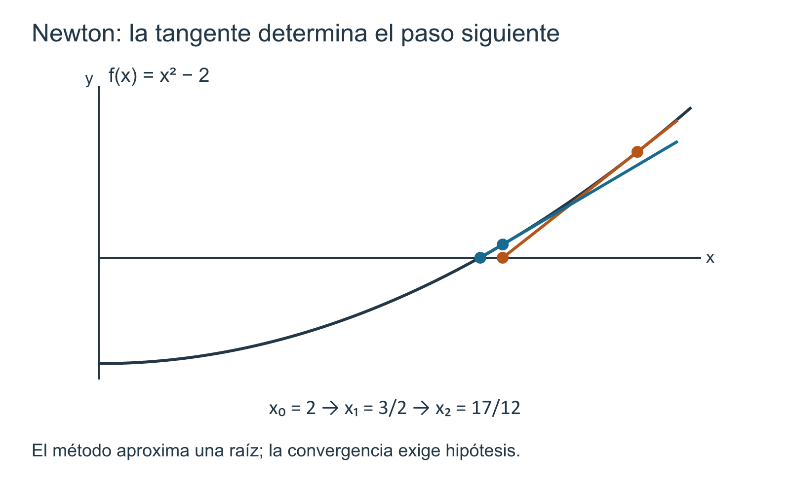

Aproximación, método de Newton y problemas de optimización
12 Aproximación, método de Newton y problemas de optimización
← Capítulo 11 · Índice del Tomo I · Capítulo 13 →
En los capítulos anteriores el cálculo diferencial fue adquiriendo dos capacidades distintas. Por una parte, aprendimos a describir con rigor el comportamiento de una función: continuidad, monotonía, extremos, convexidad y derivadas sucesivas. Por otra, la linealización y la fórmula de Taylor nos permitieron reemplazar localmente una función por objetos más sencillos sin perder de vista el error.
Ha llegado el momento de convertir esas capacidades en procedimientos. Queremos responder preguntas como estas:
- una ecuación \(f(x)=0\) tiene una raíz que no conocemos exactamente: ¿cómo construir aproximaciones y saber si son buenas?;
- un cálculo produce varios decimales aparentemente estables: ¿qué demuestra que alguno de ellos es correcto?;
- un problema geométrico o cuantitativo pide maximizar o minimizar una magnitud: ¿cómo pasar de la descripción verbal a una función y cómo probar que el candidato obtenido es realmente óptimo?
La palabra aproximación será usada aquí en un sentido exigente. No bastará con obtener un número cercano según una calculadora, un dibujo o varias iteraciones. Siempre intentaremos separar tres objetos:
\[ \boxed{\text{valor buscado}},\qquad \boxed{\text{aproximación calculada}},\qquad \boxed{\text{cota demostrada del error}}. \]
El método de Newton proporcionará un ejemplo especialmente rico. Su fórmula surge de sustituir una curva por su recta tangente; por eso es natural desde el punto de vista del cálculo diferencial. Pero la geometría que inspira el método no demuestra por sí sola que las iteraciones converjan. Para obtener una afirmación matemática necesitaremos volver a Taylor, controlar derivadas y vigilar el intervalo donde se realizan los pasos.
La optimización plantea una cautela análoga. Resolver \(f'(x)=0\) puede producir candidatos interiores, pero no demuestra ni que exista un óptimo global ni que el candidato encontrado sea uno. El dominio, los bordes, los puntos no diferenciables y las restricciones del problema forman parte de la demostración.
Este capítulo será, por tanto, un laboratorio sobre una idea transversal:
calcular propone; las hipótesis y las cotas certifican.
No desarrollaremos aquí análisis numérico general ni optimización multivariable. Trabajaremos con una variable real y utilizaremos únicamente las herramientas ya construidas en este tomo.
12.1 Aproximar no es adivinar: valor, error y certificado
Tres afirmaciones que suelen confundirse
Supongamos que queremos conocer un número real \(\alpha\) y hemos calculado otro número \(x\). Pueden ocurrir al menos tres situaciones conceptualmente distintas.
- Sabemos que \(x\) está cerca de \(\alpha\). Esto exige alguna información sobre \(|x-\alpha|\).
- Una ecuación asociada casi se satisface. Si \(\alpha\) es una raíz de \(f\), esto significa que \(|f(x)|\) es pequeño.
- Los últimos decimales de varias aproximaciones coinciden. Esto es una observación sobre el procedimiento de cálculo, no todavía una afirmación sobre \(\alpha\).
Ninguna de las dos últimas implica automáticamente la primera. El objetivo del capítulo será aprender qué hipótesis permiten convertir datos computables en información sobre el error real.
Definición 12.1 Aproximación, error absoluto y certificado. Sea \(\alpha\in\mathbb R\) el valor que se desea aproximar y sea \(x\in\mathbb R\) un valor calculado.
El error absoluto de \(x\) respecto de \(\alpha\) es
\[ E(x;\alpha):=|x-\alpha|. \]
Dado \(\varepsilon>0\), diremos que \(x\) es una aproximación con tolerancia \(\varepsilon\) si
\[ |x-\alpha|\le\varepsilon. \]
Llamaremos certificado de error a una demostración que establece una desigualdad de este tipo a partir de datos conocidos, sin necesitar conocer de antemano el valor exacto de \(\alpha\).
La definición parece elemental, pero fija el criterio que utilizaremos durante todo el capítulo. Una aproximación no se evalúa por la cantidad de cifras que muestra, sino por la información que poseemos sobre su distancia al valor buscado.
Un intervalo ya es un certificado
La forma más sencilla de certificar una aproximación consiste en encerrar el valor desconocido entre dos números conocidos. Si
\[ a\le \alpha\le b, \]
entonces cualquier \(x\in[a,b]\) satisface
\[ |x-\alpha|\le b-a. \]
Si elegimos el punto medio
\[ m=\frac{a+b}{2}, \]
obtenemos una cota dos veces mejor:
\[ |m-\alpha|\le\frac{b-a}{2}. \]
No hace falta conocer \(\alpha\) para demostrarla. La geometría del intervalo basta.
Ejemplo 12.1 Un decimal certificado para \(\sqrt2\). La raíz cuadrada positiva de \(2\) está definida canónicamente por la construcción de raíces de T1-C09 (Proposición 8.1). Comprobemos los cuadrados de dos racionales:
\[ 1.414^2=1.999396<2, \]
mientras que
\[ 1.415^2=2.002225>2. \]
Como \(x\mapsto x^2\) es estrictamente creciente en \([0,\infty)\), se sigue que
\[ 1.414<\sqrt2<1.415. \]
El punto medio del intervalo es
\[ m=1.4145. \]
Por la observación anterior,
\[ \boxed{|m-\sqrt2|<0.0005.} \]
El número \(1.4145\) no se convierte en una buena aproximación porque «parece» cercano a \(\sqrt2\) ni porque una calculadora muestre dígitos compatibles. La desigualdad anterior es el certificado.
Este ejemplo utiliza un intervalo construido por comparación exacta. Más adelante Newton producirá aproximaciones de manera mucho más rápida, pero el problema lógico será el mismo: ¿qué argumento permite traducir lo que calculamos en una cota para \(|x-\alpha|\)?
El residuo de una ecuación no es el error en la variable
Si \(\alpha\) satisface
\[ f(\alpha)=0, \]
es natural medir cuánto falla una aproximación \(x\) mediante el número
\[ |f(x)|. \]
A esta cantidad la llamaremos residuo de la ecuación en \(x\). El residuo es computable si podemos evaluar \(f(x)\); el error \(|x-\alpha|\), en cambio, contiene el número desconocido \(\alpha\). Precisamente por eso es tentador sustituir uno por otro.
Pero no son la misma cantidad.
Para verlo sin ninguna complicación, fijemos una raíz \(\alpha=1\) y, para cada entero \(N\ge1\), consideremos
\[ f_N(t)=\frac{t-1}{N}. \]
En \(x=2\) el error respecto de la raíz es siempre
\[ |2-1|=1, \]
mientras que el residuo vale
\[ |f_N(2)|=\frac1N. \]
Podemos hacer el residuo tan pequeño como queramos aumentando \(N\), sin mover en absoluto la aproximación \(x=2\). Por tanto,
\[ \boxed{\text{residuo pequeño}\not\Rightarrow\text{error pequeño}} \]
si no añadimos información sobre cómo transforma \(f\) las distancias cerca de la raíz.
El teorema del valor medio nos dará precisamente una forma de añadir esa información: una cota inferior para \(|f'|\) permitirá convertir un residuo en una cota de error. Reservaremos esa construcción para §12.6, después de estudiar el paso de Newton.
Cifras estables tampoco constituyen una demostración
Supongamos que un procedimiento produce
\[ x_4=1.41421357, \qquad x_5=1.41421356, \qquad x_6=1.41421356. \]
La repetición de los últimos ocho dígitos es evidencia útil para orientar un cálculo, pero por sí sola no demuestra que
\[ |x_6-\alpha|<10^{-8}. \]
Podría ocurrir que el procedimiento se hubiera estabilizado en un ciclo, que estuviera convergiendo a otro valor o que los errores de redondeo ocultaran el movimiento real. En §12.7 veremos ejemplos concretos en los que una iteración de Newton no se comporta como la intuición más optimista sugiere.
En este capítulo no declararemos correctos ciertos decimales únicamente porque dos aproximaciones consecutivas coincidan en ellos. Para afirmar una tolerancia buscaremos una desigualdad demostrada: un intervalo que contenga el valor, una cota derivada del teorema del valor medio, una estimación de Taylor u otro certificado equivalente.
Dos problemas, la misma disciplina
La misma distinción reaparecerá en optimización. Si una derivada se anula en \(c\),
\[ f'(c)=0, \]
hemos localizado un candidato interior. Todavía falta demostrar qué significa ese punto para el problema original. Puede ser un mínimo, un máximo o ninguna de las dos cosas; incluso si es un extremo local, puede no ser global. Además, el óptimo puede encontrarse en un borde o en un punto donde la derivada no existe.
Así, tanto en aproximación de raíces como en optimización, seguiremos un patrón común:
\[ \boxed{ \text{construir un candidato} \longrightarrow \text{verificar hipótesis} \longrightarrow \text{producir un certificado} }. \]
Para una raíz, el certificado podrá ser una cota de \(|x-\alpha|\). Para un problema de optimización, será una demostración de que ningún punto factible produce un valor mejor.
El siguiente paso: aislar antes de iterar
Antes de introducir Newton conviene resolver un problema más básico. Si una ecuación tiene varias raíces, una aproximación numérica no tiene significado completo hasta que sepamos qué raíz estamos siguiendo. Y si ni siquiera hemos demostrado que exista una raíz en la región examinada, una sucesión de números no puede reemplazar esa falta.
En §12.2 volveremos al teorema del valor intermedio y a la monotonía para construir intervalos que contengan exactamente una raíz. Ese aislamiento proporcionará simultáneamente existencia, unicidad local y un primer certificado de error. Solo después reemplazaremos el refinamiento elemental del intervalo por la recta tangente de Newton.
Antes de seguir. Si sabemos que \(\alpha\in[3,3.02]\), ¿qué error máximo tiene el punto medio del intervalo? ¿Por qué un residuo \(|f(x)|=10^{-12}\) no permite, sin información adicional sobre \(f\), concluir que \(x\) está a distancia menor que \(10^{-12}\) de una raíz? ¿Qué diferencia lógica hay entre «\(f'(c)=0\)» y «\(c\) minimiza \(f\) en todo su dominio»?
12.2 Aislar una raíz antes de aproximarla
En §12.1 vimos que un intervalo que contiene al valor buscado ya proporciona un certificado de error. Para una ecuación
\[ f(x)=0, \]
esto sugiere un objetivo previo a cualquier iteración rápida: encontrar un intervalo en el que sepamos que existe una raíz y que no hay otra.
Diremos informalmente que un intervalo \([a,b]\) aísla una raíz si contiene exactamente una solución de \(f(x)=0\). El aislamiento no dice todavía que conozcamos muchos decimales de esa raíz. Dice algo lógicamente anterior y más importante: sabemos qué raíz estamos intentando aproximar.
Cambio de signo: existencia, pero todavía no unicidad
Si \(f\) es continua en \([a,b]\) y
\[ f(a)f(b)<0, \]
entonces \(0\) está estrictamente entre \(f(a)\) y \(f(b)\). El teorema del valor intermedio (Teorema 5.2) garantiza por tanto algún
\[ \alpha\in(a,b) \]
tal que \(f(\alpha)=0\).
La conclusión es de existencia. No afirma que \(\alpha\) sea la única raíz del intervalo.
Por ejemplo,
\[ q(x)=x(x^2-1) \]
satisface
\[ q(-2)=-6<0<6=q(2), \]
pero en \([-2,2]\) tiene tres raíces:
\[ -1,\qquad 0,\qquad 1. \]
El cambio de signo certifica que hay al menos una raíz; no basta para aislarla.
La monotonía convierte existencia en aislamiento
Proposición 12.1 Proposición (aislamiento por cambio de signo y monotonía estricta). Sea
\[ f\colon[a,b]\to\mathbb R \]
continua, con \(a<b\). Supongamos que
\[ f(a)f(b)<0 \]
y que \(f\) es estrictamente monótona en \([a,b]\). Entonces existe una única raíz
\[ \alpha\in(a,b) \]
de la ecuación \(f(x)=0\).
En particular, \([a,b]\) aísla a \(\alpha\). Si
\[ m=\frac{a+b}{2}, \]
entonces
\[ |m-\alpha|\le \frac{b-a}{2}. \]
Demostración. Como \(f\) es continua y sus valores en los extremos tienen signos opuestos, Teorema 5.2 proporciona al menos una raíz \(\alpha\in(a,b)\).
Falta la unicidad. Supongamos que hubiera dos raíces distintas \(u<v\) en \([a,b]\). Si \(f\) es estrictamente creciente, entonces
\[ f(u)<f(v), \]
mientras que \(f(u)=f(v)=0\), contradicción. Si \(f\) es estrictamente decreciente, la desigualdad se invierte y aparece la misma contradicción. Por tanto la raíz es única.
Como \(\alpha\in[a,b]\), la cota del punto medio es exactamente la ya demostrada en §12.1:
\[ \left|\frac{a+b}{2}-\alpha\right| \le \frac{b-a}{2}. \]
Así, el mismo intervalo que aísla la raíz proporciona un primer certificado cuantitativo. \(\square\)
La proposición separa dos responsabilidades:
\[ \boxed{\text{continuidad + cambio de signo}\Rightarrow\text{existencia}}, \]
\[ \boxed{\text{monotonía estricta}\Rightarrow\text{unicidad}}. \]
Esta separación será útil más adelante. Un método numérico puede producir muchos candidatos; si previamente hemos aislado una raíz, podremos juzgar si esos candidatos permanecen vinculados al problema que queríamos resolver.
Cómo certificar la monotonía
A veces la monotonía se conoce directamente por álgebra. Otras veces resulta más cómodo usar la derivada.
Si \(f\) es continua en \([a,b]\), diferenciable en \((a,b)\) y
\[ f'(x)>0 \qquad\text{para todo }x\in(a,b), \]
entonces Teorema 10.1 demuestra que \(f\) es estrictamente creciente en \([a,b]\). Si en cambio \(f'(x)<0\) en todo el interior, resulta estrictamente decreciente. En ambos casos, un cambio de signo en los extremos permite aplicar Proposición 12.1.
Conviene notar lo que no basta. Saber solo que \(f'(c)>0\) en un punto, o comprobar numéricamente que la derivada parece positiva en una tabla finita, no demuestra monotonía en todo el intervalo. La hipótesis debe cubrir cada punto del interior, o debe disponerse de otro argumento global equivalente.
Ejemplo 12.2 Aislar y después refinar una raíz de un cúbico. Consideremos
\[ p(x)=x^3+x-1. \]
En \([0,1]\) tenemos
\[ p(0)=-1<0<1=p(1). \]
Además,
\[ p'(x)=3x^2+1>0 \]
para todo \(x\in\mathbb R\). Por Teorema 10.1, \(p\) es estrictamente creciente; por Proposición 12.1 existe una única raíz
\[ \alpha\in(0,1). \]
El intervalo \([0,1]\) ya la aísla, aunque todavía sea ancho.
Ahora podemos refinar el aislamiento sin cambiar de raíz. Evaluamos el punto medio:
\[ p\left(\frac12\right) =\frac18+\frac12-1 =-\frac38<0, \]
por lo que
\[ \alpha\in\left(\frac12,1\right). \]
El siguiente punto medio útil es \(3/4\):
\[ p\left(\frac34\right) =\frac{27}{64}+\frac34-1 =\frac{11}{64}>0, \]
así que
\[ \alpha\in\left(\frac12,\frac34\right). \]
Una nueva evaluación da
\[ p\left(\frac58\right) =\frac{125}{512}+\frac58-1 =-\frac{67}{512}<0, \]
de modo que
\[ \alpha\in\left(\frac58,\frac34\right). \]
Finalmente,
\[ p\left(\frac{11}{16}\right) =\frac{1331}{4096}+\frac{11}{16}-1 =\frac{51}{4096}>0, \]
y obtenemos el intervalo certificado
\[ \boxed{ \frac58<\alpha<\frac{11}{16} }. \]
Su punto medio es
\[ m=\frac{21}{32}, \]
y el ancho del intervalo es \(1/16\). Por tanto,
\[ \boxed{ \left|\frac{21}{32}-\alpha\right|<\frac1{32} }. \]
No hemos usado ninguna cifra decimal de \(\alpha\). El certificado procede enteramente de signos exactos, continuidad y unicidad.
Aislar no es lo mismo que refinar
El ejemplo anterior permite distinguir dos tareas.
Aislar significa demostrar que un intervalo contiene exactamente una raíz. En el ejemplo, \([0,1]\) ya cumplía esa función.
Refinar significa reemplazar ese intervalo por otro más pequeño que contiene la misma raíz. El teorema de bisección ya probado en Teorema 5.3 proporciona un procedimiento sistemático para hacerlo mientras se preserve el cambio de signo. Después de \(n\) divisiones de un intervalo inicial \([a_0,b_0]\), el intervalo retenido tiene longitud
\[ \frac{b_0-a_0}{2^n}, \]
y su punto medio queda a distancia a lo sumo
\[ \frac{b_0-a_0}{2^{n+1}} \]
del punto seleccionado por la construcción.
Hay aquí una sutileza importante. El teorema de bisección no necesita que la raíz inicial sea única: construye una cadena de intervalos que converge a una raíz. Por eso, cuando queremos decir que estamos refinando la raíz previamente identificada, la unicidad obtenida mediante Proposición 12.1 cumple un papel adicional. En un intervalo aislante, todo subintervalo con cambio de signo necesariamente contiene esa misma raíz y ninguna otra.
Para una ecuación \(f(x)=0\) conviene preguntar, en este orden:
- Existencia: ¿hay al menos una raíz en la región?
- Aislamiento: ¿podemos demostrar que allí hay exactamente una?
- Precisión: ¿qué tan estrecho es el intervalo certificado que la contiene?
El IVT responde la primera pregunta; la monotonía estricta puede resolver la segunda; el ancho del intervalo responde cuantitativamente la tercera.
Por qué esto prepara el método de Newton
La bisección ofrece una ventaja lógica notable: mientras conservemos el cambio de signo, el nuevo intervalo sigue certificando la presencia de una raíz. Su costo es que la reducción del error es relativamente lenta: cada paso divide el ancho por dos.
Newton tomará otra idea. En lugar de conservar siempre dos extremos con signos opuestos, utilizará información diferencial en un solo punto y sustituirá la curva por su aproximación afín. Esto puede producir mejoras mucho más rápidas, pero también elimina la seguridad automática que proporciona el encierro por signos.
Por eso el orden conceptual importa:
\[ \boxed{ \text{primero aislar y saber qué raíz buscamos;} \quad \text{después acelerar la aproximación.} } \]
En §12.3 construiremos el paso de Newton directamente desde la recta tangente y determinaremos con precisión dónde está definido.
Antes de seguir. Si una función continua cambia de signo en \([a,b]\), ¿qué afirmación garantiza el IVT y cuál no? ¿Qué hipótesis adicional de Proposición 12.1 convierte ese intervalo en aislante? Si un intervalo aislante tiene longitud \(10^{-3}\), ¿qué cota de error obtiene su punto medio? ¿Por qué una cadena de bisección puede converger a una raíz aunque el intervalo inicial contenga varias?
12.3 El paso de Newton desde la recta tangente
En §12.2 aislamos una raíz antes de intentar aproximarla. Ahora cambiaremos la pregunta: dado un punto \(x\) donde podemos calcular \(f(x)\) y \(f'(x)\), ¿qué nuevo punto sugiere la información diferencial disponible?
El método de Newton no comenzará como una fórmula que deba memorizarse. Lo construiremos resolviendo exactamente un problema más sencillo: encontrar el cero de la recta tangente en el punto actual. La dificultad consiste en recordar, durante toda la construcción, que el cero de esa recta no tiene por qué ser un cero de la función.
Fijar el punto actual y distinguirlo de la variable
Trabajemos con una función \(f\colon I\to\mathbb R\) diferenciable en un intervalo abierto no vacío \(I\). Esta elección permite utilizar derivadas bilaterales en cada punto de trabajo. Un intervalo cerrado \([a,b]\subset I\) podrá servir para aislar una raíz sin confundirse con el dominio completo de \(f\).
Fijemos \(x\in I\). En este momento \(x\) es el punto conocido desde el cual construiremos el paso; usaremos \(t\) para el argumento variable de la recta. La linealización ya probada en Teorema 6.2 da
\[ f(x+h)=f(x)+f'(x)h+r_x(h), \]
para incrementos admisibles \(x+h\in I\), donde podemos definir exactamente
\[ r_x(h)=f(x+h)-f(x)-f'(x)h. \]
La información analítica es
\[ \lim_{h\to0}\frac{r_x(h)}h=0, \]
con \(h\ne0\) y \(x+h\in I\). El subíndice recuerda que el residuo depende del centro \(x\).
La función afín correspondiente es
\[ L_x(t):=f(x)+f'(x)(t-x), \qquad t\in\mathbb R. \]
Su gráfica es la recta tangente en \((x,f(x))\). La recta está definida para todo \(t\in\mathbb R\), aunque \(f\) solo esté definida en \(I\); la afirmación de aproximación, en cambio, se refiere a valores de \(t\) del dominio próximos a \(x\).
Conviene distinguir las funciones de las dos letras. Al variar \(t\) recorremos una recta fija. Al cambiar \(x\) construimos, en general, otra recta tangente.
Resolver la ecuación afín, no sustituir una aproximación por una igualdad
La ecuación que queremos resolver es \(f(t)=0\). Newton propone un candidato resolviendo en su lugar
\[ L_x(t)=0. \]
Esta segunda ecuación es
\[ f(x)+f'(x)(t-x)=0. \]
Si \(f'(x)\ne0\), las reglas algebraicas del cuerpo permiten despejar:
\[ f'(x)(t-x)=-f(x), \]
\[ t-x=-\frac{f(x)}{f'(x)}, \]
\[ \boxed{t=x-\frac{f(x)}{f'(x)}.} \]
La no anulación de la derivada se utiliza exactamente al dividir. Además, la solución de la ecuación afín es única: una recta con pendiente no nula corta al eje horizontal en un solo punto.
El desplazamiento propuesto y el nuevo punto son objetos distintos:
\[ h_x=-\frac{f(x)}{f'(x)}, \qquad x_{\mathrm{nuevo}}=x+h_x. \]
Por ejemplo, un desplazamiento negativo significa que el nuevo punto queda a la izquierda del actual. No significa que el nuevo punto sea necesariamente negativo.
La construcción demuestra exactamente \(L_x(x_{\mathrm{nuevo}})=0\). No demuestra \(f(x_{\mathrm{nuevo}})=0\).
Si el nuevo punto pertenece a \(I\), la identidad de linealización permite escribir
\[ f(x_{\mathrm{nuevo}})=r_x(h_x). \]
La parte afín se anuló; el residuo no se ha anulado por ese motivo. Para controlar el resultado necesitaremos información sobre ese término.
Tampoco basta invocar \(r_x(h)=o(h)\) para declarar pequeño el error del paso calculado. Ese límite se toma cuando \(h\to0\) con el centro \(x\) fijo; todavía no hemos probado que \(h_x\) sea pequeño ni que exista un control uniforme al cambiar los centros. Esta es la diferencia entre motivar el método mediante linealización y demostrar su eficacia mediante estimaciones.
El operador de Newton y su dominio
Definición 12.2 Operador de Newton. Sea \(I\subseteq\mathbb R\) un intervalo abierto no vacío y sea \(f\colon I\to\mathbb R\) diferenciable. Definimos el conjunto de puntos admisibles
\[ D_f:=\{x\in I:f'(x)\ne0\}. \]
El operador de Newton asociado a \(f\) es la función
\[ N_f\colon D_f\to\mathbb R, \qquad N_f(x):=x-\frac{f(x)}{f'(x)}. \]
Dado \(x\in D_f\), llamaremos paso de Newton desde \(x\) al cálculo del nuevo valor \(N_f(x)\).
El codominio escrito es \(\mathbb R\), no \(I\) ni \(D_f\). La fórmula produce un número real, pero no garantiza que ese número vuelva a pertenecer al dominio donde podemos calcular otro paso. No suponemos que \(f'\) sea continua: para definir \(N_f(x)\) basta que la derivada en ese punto exista como número real y sea distinta de cero.
Tenemos así tres regiones diferentes: el dominio \(I\) de la función, el subconjunto \(D_f\) donde la división está permitida y un eventual intervalo aislante \([a,b]\subset I\). Ni la pertenencia a \(D_f\) garantiza permanencia en \([a,b]\), ni haber aislado una raíz convierte automáticamente a \(N_f\) en una aplicación de \([a,b]\) en sí mismo.
De un paso a una iteración
Elegido un punto inicial \(x_0\in D_f\), podemos calcular
\[ x_1=N_f(x_0). \]
Para calcular después \(x_2=N_f(x_1)\) debemos comprobar que \(x_1\in D_f\). En general escribiremos
\[ \boxed{x_{n+1}=x_n-\frac{f(x_n)}{f'(x_n)}} \]
mientras \(x_n\in D_f\). La regla no asegura por sí sola que estén definidos términos para todos los índices naturales. Para demostrar que existe una sucesión infinita de iteraciones habrá que justificar que el procedimiento puede continuar en cada paso.
Cada nueva iteración reconstruye la tangente en el punto recién obtenido. No seguimos utilizando indefinidamente \(L_{x_0}\): esa recta ya tenía un único cero, \(x_1\). El paso siguiente utiliza \(L_{x_1}\), con los valores \(f(x_1)\) y \(f'(x_1)\).
Hay una observación exacta útil. Para todo \(x\in D_f\),
\[ N_f(x)=x \quad\Longleftrightarrow\quad \frac{f(x)}{f'(x)}=0 \quad\Longleftrightarrow\quad f(x)=0. \]
Así, dentro del dominio de Newton, los puntos que la fórmula deja fijos son precisamente las raíces. Esto no demuestra que las iteraciones alcancen uno de ellos ni que converjan a él. Tampoco una igualdad entre números redondeados equivale a la igualdad exacta \(N_f(x)=x\).
Si durante el cálculo se demuestra que \(f(x_n)=0\), el problema de encontrar una raíz ya está resuelto y puede detenerse el procedimiento. Esa comprobación es válida incluso si \(f'(x_n)=0\): en tal caso no aplicamos la fórmula ni asignamos un valor a \(0/0\).
Dos tangentes sucesivas para la raíz ya aislada
Ejemplo 12.3 Newton para \(p(t)=t^3+t-1\). Retomemos la función de Ejemplo 12.2, definida en toda \(\mathbb R\). Sabemos que tiene una única raíz \(\alpha\) en \([0,1]\) y que
\[ \frac58<\alpha<\frac{11}{16}. \]
Como \(p'(x)=3x^2+1>0\) para todo real \(x\), el dominio de su operador es \(D_p=\mathbb R\). Simplificando la fórmula obtenemos
\[ N_p(x) =x-\frac{x^3+x-1}{3x^2+1} =\frac{2x^3+1}{3x^2+1}. \]
Para mantener sencillas las primeras fracciones, tomemos \(x_0=1\). Es un extremo del intervalo aislante inicial, pero es un punto interior del dominio \(\mathbb R\) de \(p\) y pertenece a \(D_p\).
En ese punto,
\[ p(1)=1, \qquad p'(1)=4. \]
La primera recta es
\[ L_1(t)=1+4(t-1)=4t-3, \]
y su cero proporciona
\[ x_1=1-\frac14=\frac34. \]
Sin embargo, \(p(3/4)=11/64\ne0\): hemos encontrado exactamente el cero de la recta, no el cero del cúbico.
Reconstruyamos la tangente en \(x_1=3/4\). Ahora
\[ p\left(\frac34\right)=\frac{11}{64}, \qquad p'\left(\frac34\right)=\frac{43}{16}, \]
por lo que
\[ L_{3/4}(t) =\frac{11}{64}+\frac{43}{16}\left(t-\frac34\right). \]
Su cero da el segundo paso:
\[ \begin{aligned} x_2 &=\frac34-\frac{11/64}{43/16}\\ &=\frac34-\frac{11}{172}\\ &=\frac{59}{86}. \end{aligned} \]
Podemos comprobar por multiplicación cruzada de denominadores positivos que
\[ \frac58<\frac{59}{86}<\frac{11}{16}. \]
Además, una evaluación exacta muestra
\[ p\left(\frac{59}{86}\right) =\frac{5687}{636056}>0. \]
Por la monotonía estricta de \(p\) y \(p(\alpha)=0\), este último dato permite concluir \(\alpha<x_2\). Esa conclusión procede del signo y de la monotonía, no solamente de haber aplicado Newton. La conversión cuantitativa del residuo en una cota de error se estudiará en §12.6.
Los dos pasos son legítimos porque los puntos desde los cuales dividimos pertenecen a \(D_p\). Aunque en este ejemplo \(D_p=\mathbb R\) permite continuar la recurrencia indefinidamente en aritmética exacta, todavía no hemos demostrado que las iteraciones converjan ni a qué velocidad lo harían.
El ejemplo permite leer geométricamente cada cálculo sin apoyarse en un dibujo como prueba: el punto de contacto es \((x_n,p(x_n))\), la pendiente es \(p'(x_n)\) y la intersección de esa recta con el eje horizontal es \((x_{n+1},0)\). Para construir el paso siguiente se vuelve a la gráfica, al punto \((x_{n+1},p(x_{n+1}))\); no se supone que este último coincida con \((x_{n+1},0)\).

El caso en que un solo paso resuelve el problema
Ejemplo 12.4 Una función afín no constante. Sea \(f\colon\mathbb R\to\mathbb R\),
\[ f(t)=at+b, \qquad a\ne0. \]
Su derivada es \(f'(x)=a\) y \(D_f=\mathbb R\). Entonces, para todo punto inicial \(x\),
\[ N_f(x)=x-\frac{ax+b}{a}=-\frac ba. \]
El resultado es la raíz exacta, independientemente del punto inicial.
Aquí la tangente no es solamente un modelo local:
\[ L_x(t)=ax+b+a(t-x)=at+b=f(t). \]
El residuo \(r_x(h)\) es idénticamente cero. Por eso resolver la ecuación de la tangente resuelve también la ecuación original. Esta explicación no puede trasladarse sin prueba a una función no afín.
Qué impide construir o repetir el paso
Si \(f'(x)=0\), la ecuación afín se reduce a \(f(x)=0\), sin término variable. Cuando \(f(x)\ne0\), la recta horizontal no corta al eje horizontal. Cuando \(f(x)=0\), la recta coincide con ese eje y todos sus puntos son ceros: no hay una intersección única de la cual deducir la fórmula. La raíz ya encontrada permite detenerse, pero no legitima una división por cero.
Por otra parte, un paso puede estar bien definido y llevarnos fuera del dominio de la función.
Ejemplo 12.5 Un valor real que no admite el paso siguiente. Consideremos
\[ g\colon(0,\infty)\to\mathbb R, \qquad g(t)=\sqrt t-1. \]
La función tiene la raíz \(1\). La derivada de la raíz cuadrada, ya establecida en Proposición 8.1, proporciona
\[ g'(x)=\frac1{2\sqrt x}>0, \qquad x>0. \]
Así, \(D_g=(0,\infty)\) y
\[ N_g(x) =x-2\sqrt x(\sqrt x-1) =2\sqrt x-x. \]
En particular,
\[ N_g(9)=6-9=-3. \]
La división en \(x=9\) es legítima. El problema aparece después: \(-3\notin(0,\infty)\), por lo que \(g(-3)\) no está definido y no podemos calcular \(N_g(-3)\). La fórmula define una aplicación hacia \(\mathbb R\), pero no necesariamente hacia su propio dominio.
Este ejemplo solo audita la posibilidad de repetir la operación. Los ciclos, las elecciones iniciales desfavorables y el comportamiento en raíces múltiples se estudiarán sistemáticamente en §12.7. No necesitamos resolverlos ahora para reconocer qué promesas no están incluidas en la definición.
Laboratorio de reconstrucción
Reconstruir el desplazamiento. Alguien propone \(x_{\mathrm{nuevo}}=-f(x)/f'(x)\). Localiza el paso perdido: la ecuación afín determina primero \(t-x\), no \(t\). Para \(f(t)=2t-6\) y \(x=5\), la corrección es \(-2\), mientras que el nuevo punto es \(3\), la raíz. El valor \(-2\) no es esa raíz.
Comprobar la identidad exacta. Sustituye \(t=N_f(x)\) en \(L_x(t)\). Los términos \(f(x)\) y \(-f(x)\) se cancelan, lo que demuestra \(L_x(N_f(x))=0\). Para sustituir el mismo argumento en \(f\), comprueba antes que \(N_f(x)\in I\); aun entonces, la cancelación de la parte afín no elimina el residuo.
Separar dos afirmaciones sobre el dominio. «\(f'(x_0)\ne0\)» autoriza un paso desde \(x_0\). «Todos los términos permanecen en \(D_f\)» autoriza repetirlo indefinidamente. El ejemplo anterior refuta que la primera afirmación implique la segunda.
Precisar qué falta demostrar. Las igualdades \(x_1=N_f(x_0)\) y \(x_2=N_f(x_1)\) describen dos operaciones. No contienen una estimación de \(|x_2-\alpha|\), una relación entre errores sucesivos ni un argumento de convergencia. Esas afirmaciones requieren pruebas adicionales; no se obtienen contando los pasos realizados.
De la construcción al control del error
Ya conocemos el origen de la fórmula, su dominio y el significado de sus iteraciones. La cuestión siguiente será comparar el cero de la tangente con una raíz verdadera \(\alpha\).
En §12.4 aplicaremos Taylor de grado uno centrado en el punto actual \(x\) y evaluado en \(\alpha\). Como \(f(\alpha)=0\), podremos relacionar exactamente \(N_f(x)-\alpha\) con el resto de Taylor. Ese será el puente entre el procedimiento que acabamos de construir y las estimaciones que más adelante justificarán su convergencia.
Antes de seguir. ¿En qué línea se utiliza \(f'(x)\ne0\)? ¿Qué ecuación resuelve exactamente \(N_f(x)\)? ¿Por qué el codominio de \(N_f\) se ha escrito como \(\mathbb R\)? ¿Qué diferencia hay entre una raíz donde la derivada es cero y un punto donde la derivada es cero pero la función no se anula? ¿Por qué dos iteraciones calculadas correctamente no son todavía una prueba de convergencia?
12.4 La identidad del error de Newton
El paso de Newton resuelve exactamente una ecuación afín, pero nuestro objetivo sigue siendo resolver \(f(t)=0\). Necesitamos comparar el cero de la tangente con una raíz de la función, no solo comprobar que la fórmula de la iteración puede calcularse.
Fijemos una raíz \(\alpha\) y un punto actual \(x\) en el que \(f'(x)\ne0\). Escribiremos
\[ x^+:=N_f(x),\qquad e:=x-\alpha,\qquad e^+:=x^+-\alpha. \]
Los números \(e\) y \(e^+\) son errores con signo: indican también de qué lado de la raíz están los puntos. Sus valores absolutos son los errores absolutos definidos en Definición 12.1. Una fórmula para \(e^+\) podrá contener información que se perdería al tomar inmediatamente valores absolutos.
La pregunta rectora de esta sección es concreta: ¿qué queda del error después de que Newton cancela la parte afín? Taylor permitirá responderla mediante una identidad exacta.
Elegir correctamente el centro de Taylor
Hay dos puntos disponibles, \(x\) y \(\alpha\). La recta utilizada por Newton es la tangente en \(x\), de modo que debemos desarrollar alrededor de \(x\), no alrededor de la raíz desconocida. El punto en el que evaluaremos ese desarrollo será \(\alpha\).
En la notación de Teorema 11.2 hacemos estas sustituciones:
| Papel en Taylor | Elección para el paso de Newton |
|---|---|
| Centro del polinomio | El punto actual \(x\) |
| Punto de evaluación | La raíz \(\alpha\) |
| Grado del polinomio | \(n=1\) |
| Derivada que aparece en el resto | La segunda derivada |
| Incremento desde el centro | \(\alpha-x\) |
No estamos buscando un polinomio cuadrático. Utilizamos el polinomio de grado uno, que es la tangente, y conservamos el resto de segundo orden. Si \(x\ne\alpha\) y se cumplen las hipótesis de Taylor, obtenemos algún \(\xi\) estrictamente entre ambos puntos para el cual
\[ f(\alpha) =f(x)+f'(x)(\alpha-x) +\frac{f''(\xi)}2(\alpha-x)^2. \]
La igualdad no es una aproximación. La curvatura que la recta no recoge permanece representada por el último término.
El enunciado de un solo paso
Teorema 12.1 Teorema (identidad del error de Newton). Sea \(I\) un intervalo abierto y sea \(f:I\to\mathbb R\) una función que posee primera y segunda derivadas en todo \(I\). Supongamos que \(\alpha\in I\) satisface \(f(\alpha)=0\).
Para cada \(x\in I\) con \(x\ne\alpha\) y \(f'(x)\ne0\), existe un punto
\[ \xi\in\bigl(\min\{x,\alpha\},\max\{x,\alpha\}\bigr) \]
tal que
\[ \boxed{ N_f(x)-\alpha =\frac{f''(\xi)}{2f'(x)}(x-\alpha)^2. } \]
No se exige continuidad de \(f''\). Tampoco se exige que \(N_f(x)\) pertenezca a \(I\): la conclusión compara dos números reales, sin evaluar \(f\) en el nuevo punto.
Si \(x=\alpha\) y \(f'(\alpha)\ne0\), se tiene directamente \(N_f(\alpha)=\alpha\). Este caso se trata por separado, sin introducir un punto estrictamente intermedio entre dos puntos iguales.
Demostración. Supongamos primero que \(x\ne\alpha\). Como \(I\) es un intervalo y contiene ambos puntos, contiene todo el segmento que los une. La existencia de las dos derivadas permite aplicar Teorema 11.2 con grado uno, centro \(x\) y evaluación en \(\alpha\). Existe, pues, el punto \(\xi\) indicado y
\[ 0=f(x)+f'(x)(\alpha-x) +\frac{f''(\xi)}2(\alpha-x)^2, \]
porque \(f(\alpha)=0\).
Para auditar el signo, pasemos el término lineal al otro miembro. Puesto que \(-(\alpha-x)=x-\alpha\) y \((\alpha-x)^2=(x-\alpha)^2\),
\[ f'(x)(x-\alpha) =f(x)+\frac{f''(\xi)}2(x-\alpha)^2. \]
La hipótesis \(f'(x)\ne0\) autoriza dividir esta igualdad:
\[ x-\alpha =\frac{f(x)}{f'(x)} +\frac{f''(\xi)}{2f'(x)}(x-\alpha)^2. \]
Restando \(f(x)/f'(x)\) y usando Definición 12.2,
\[ \begin{aligned} N_f(x)-\alpha &=x-\alpha-\frac{f(x)}{f'(x)}\\ &=\frac{f''(\xi)}{2f'(x)}(x-\alpha)^2. \end{aligned} \]
Si \(x=\alpha\) y \(f'(\alpha)\ne0\), no necesitamos Taylor:
\[ N_f(\alpha) =\alpha-\frac{f(\alpha)}{f'(\alpha)} =\alpha. \]
Esto completa ambos casos. \(\square\)
Qué hipótesis se usó y dónde
La demostración es breve, pero contiene autorizaciones diferentes que conviene no confundir.
| Hipótesis o dato | Uso preciso |
|---|---|
| \(x,\alpha\) pertenecen al mismo intervalo abierto \(I\) | El segmento entre ellos está en la región donde se aplica Taylor. |
| \(f\) posee dos derivadas en \(I\) | Autoriza el Taylor de grado uno con resto de Lagrange. |
| \(f(\alpha)=0\) | Anula el valor de la función en el punto de evaluación, no el resto. |
| \(f'(x)\ne0\) | Define el paso de Newton y permite dividir en el despeje. |
| \(x\ne\alpha\) | Hace no vacío el intervalo abierto en el que Taylor sitúa \(\xi\). |
La existencia de \(f''\) significa que \(f'\) es diferenciable y, por tanto, continua, según Teorema 6.1. Eso no obliga a que \(f''\) sea continua. El Taylor canónico utilizado aquí no añade esa última hipótesis y tampoco la necesita nuestra identidad.
La existencia de una raíz se ha supuesto, no demostrado mediante Newton. Si la raíz se obtuvo antes por aislamiento, ese argumento proporciona el dato \(f(\alpha)=0\). La unicidad no interviene en el despeje: fijada una raíz, la identidad se refiere a ella.
Llamaremos raíz simple a una raíz \(\alpha\) para la cual \(f'(\alpha)\ne0\). Es importante distinguir esta condición de \(f'(x)\ne0\). La identidad de un paso solo divide por la derivada en el punto actual \(x\); no requiere que la derivada en la raíz sea no nula cuando \(x\ne\alpha\). En cambio, la simplicidad será decisiva para obtener una cota inferior positiva de \(|f'|\) cerca de \(\alpha\): como \(f'\) es continua, de \(f'(\alpha)\ne0\) se deduce que \(|f'(x)|\ge |f'(\alpha)|/2\) en un entorno suficientemente pequeño. Esa observación prepara el control local de §12.5; no es todavía una demostración de convergencia.
Si \(f'(\alpha)=0\), haber encontrado exactamente la raíz permite detener el procedimiento, como vimos en §12.3. No permite evaluar allí una expresión que divide por cero.
El punto intermedio no es un dato elegible
El teorema afirma que para cada \(x\) admisible existe algún \(\xi\) intermedio que hace verdadera la identidad. No afirma que ese punto sea único ni que se conozca. En general depende de \(x\) y de la raíz fijada.
Por tanto no podemos sustituir libremente \(f''(\xi)\) por \(f''(x)\), por \(f''(\alpha)\) o por el valor en el punto medio. Tampoco podemos suponer que el mismo \(\xi\) sirve para pasos distintos. El segundo ejemplo de esta sección permitirá ver explícitamente un punto intermedio que no es el punto medio.
Para obtener una desigualdad útil no suele hacer falta localizar \(\xi\). Basta dominar \(f''\) en todos los lugares donde podría estar. Esta es la misma estrategia que utilizamos en Corolario 11.2 para acotar el resto de Taylor.
De la identidad a una cota cuadrática
Supongamos que en todo el segmento entre \(x\) y \(\alpha\) tenemos una cota \(|f''|\le M\), con \(M\ge0\). La identidad proporciona
\[ |N_f(x)-\alpha| \le \frac{M}{2|f'(x)|}|x-\alpha|^2. \]
El denominador todavía depende del punto actual. Para controlar varios puntos con una misma constante podemos imponer una cota inferior uniforme.
Corolario 12.1 Corolario (cota uniforme para un paso de Newton). Bajo las hipótesis sobre \(I\), \(f\) y \(\alpha\) de Teorema 12.1, sea \(J\subseteq I\) un intervalo que contiene a \(\alpha\). Supongamos que existen constantes \(m>0\) y \(M\ge0\) tales que, para todo \(t\in J\),
\[ |f'(t)|\ge m, \qquad |f''(t)|\le M. \]
Entonces \(J\subseteq D_f\) y, para cada \(x\in J\),
\[ \boxed{ |N_f(x)-\alpha| \le \frac{M}{2m}|x-\alpha|^2. } \]
La conclusión no afirma que \(N_f(J)\subseteq J\).
Demostración. La desigualdad \(|f'(t)|\ge m>0\) muestra que todos los puntos de \(J\) pertenecen a \(D_f\). Si \(x\ne\alpha\), el segmento entre \(x\) y \(\alpha\) está contenido en \(J\) porque \(J\) es un intervalo. En particular, el punto \(\xi\) de Teorema 12.1 pertenece a \(J\). Por consiguiente,
\[ \begin{aligned} |N_f(x)-\alpha| &=\frac{|f''(\xi)|}{2|f'(x)|}|x-\alpha|^2\\ &\le\frac{M}{2m}|x-\alpha|^2. \end{aligned} \]
Para \(x=\alpha\), la cota inferior implica \(f'(\alpha)\ne0\), y ambos miembros de la desigualdad son cero. \(\square\)
El caso \(M=0\) también está incluido: si se cumplen las hipótesis con esa constante, el paso llega exactamente a \(\alpha\) desde cualquier \(x\in J\). Es coherente con el comportamiento de las funciones afines de Ejemplo 12.4.
En cambio, la existencia de \(f''\) por sí sola no proporciona automáticamente una cota uniforme \(M\) en la región escogida. La cota debe demostrarse o figurar como hipótesis, al igual que la separación de \(f'\) respecto de cero.
Un ejemplo en el que el coeficiente se conoce exactamente
Ejemplo 12.6 El error de Newton para la raíz cuadrada de dos. Sea
\[ f(t)=t^2-2,\qquad I=(0,\infty),\qquad \alpha=\sqrt2. \]
En este intervalo \(f'(x)=2x>0\) y \(f''(t)=2\). Como la segunda derivada es constante, la identidad de Teorema 12.1 se convierte en
\[ \boxed{ N_f(x)-\sqrt2=\frac{(x-\sqrt2)^2}{2x},\qquad x>0. } \]
En \(x=\sqrt2\) la igualdad sigue siendo válida por el caso separado del teorema. Para \(x\ne\sqrt2\), cualquier punto estrictamente intermedio sirve para representar el valor constante de \(f''\).
Podemos comprobar la identidad sin Taylor. La fórmula del paso es
\[ N_f(x)=x-\frac{x^2-2}{2x}=\frac{x^2+2}{2x}. \]
Como \(\alpha^2=2\),
\[ \frac{x^2+2}{2x}-\alpha =\frac{x^2-2\alpha x+\alpha^2}{2x} =\frac{(x-\alpha)^2}{2x}. \]
Esta segunda vía verifica de manera independiente tanto el signo como el factor \(1/2\). Además, el nuevo punto siempre es mayor o igual que la raíz positiva: el numerador es un cuadrado y el denominador es positivo. Hay igualdad precisamente cuando \(x=\alpha\).
En \(J=[1,2]\), las cotas \(|f'|\ge2\) y \(|f''|\le2\) permiten usar \(m=2\), \(M=2\) en Corolario 12.1. Así,
\[ |N_f(x)-\alpha|\le\frac12|x-\alpha|^2, \qquad x\in[1,2]. \]
Veamos también un certificado de un paso concreto. Las comparaciones exactas
\[ \left(\frac75\right)^2=\frac{49}{25}<2 <\frac94=\left(\frac32\right)^2 \]
muestran que \(7/5<\alpha<3/2\). Desde \(x=3/2\) obtenemos
\[ N_f\left(\frac32\right)=\frac{17}{12}. \]
La identidad exacta, usando \(2x=3\) en este punto, da
\[ 0<\frac{17}{12}-\alpha =\frac{(3/2-\alpha)^2}{3} <\frac{(1/10)^2}{3} =\frac1{300}. \]
La aproximación \(17/12\) queda certificada sin consultar ningún desarrollo decimal de \(\sqrt2\). Se ha probado una afirmación sobre este paso, no todavía un teorema sobre todas las iteraciones.
El cúbico anterior revela el punto intermedio
Ejemplo 12.7 Una identidad algebraica para el cúbico aislado. Recuperemos
\[ p(t)=t^3+t-1 \]
y su raíz \(\alpha\in(0,1)\), ya aislada en Ejemplo 12.2. Como \(p'(x)=3x^2+1\), el paso está definido para todo real y
\[ N_p(x)=\frac{2x^3+1}{3x^2+1}. \]
La relación \(p(\alpha)=0\) equivale a \(1=\alpha^3+\alpha\). Sustituyéndola en el numerador de la diferencia,
\[ \begin{aligned} N_p(x)-\alpha &=\frac{2x^3+1-\alpha(3x^2+1)}{3x^2+1}\\ &=\frac{2x^3-3\alpha x^2+\alpha^3}{3x^2+1}\\ &=\frac{(x-\alpha)^2(2x+\alpha)}{3x^2+1}. \end{aligned} \]
Por otro lado, \(p''(t)=6t\), de modo que la identidad de Taylor tiene coeficiente
\[ \frac{p''(\xi)}{2p'(x)}=\frac{3\xi}{3x^2+1}. \]
Para \(x\ne\alpha\), ambas expresiones concuerdan con
\[ \xi=\frac{2x+\alpha}{3}. \]
Este punto es estrictamente intermedio: \(\xi-x=(\alpha-x)/3\) y \(\alpha-\xi=2(\alpha-x)/3\), así que ambas diferencias tienen el mismo signo que \(\alpha-x\). No es, en general, el punto medio. En efecto,
\[ \frac{2x+\alpha}{3}=\frac{x+\alpha}{2} \]
obligaría a \(x=\alpha\), caso excluido en esta comparación.
El ejemplo muestra dos maneras de usar el teorema. Podemos prescindir de la posición exacta de \(\xi\) y acotar \(p''\) en un intervalo; o, cuando una identidad algebraica adicional lo permite, podemos identificarlo. La segunda posibilidad es una ventaja particular de este ejemplo, no un permiso para elegir el punto intermedio en cualquier función.
Por qué un cuadrado no basta para demostrar convergencia
La forma
\[ e^+=A(x,\alpha)e^2 \]
no garantiza por sí sola que el error disminuya. El coeficiente puede ser grande y el punto actual puede estar demasiado lejos de la raíz. La expresión tampoco garantiza que el punto nuevo pertenezca a la región donde pretendemos repetir las estimaciones.
El primer ejemplo permite comprobarlo con un solo cálculo, sin desarrollar todavía una teoría de fallos. Para \(f(t)=t^2-2\) y \(x=1/4\),
\[ N_f\left(\frac14\right)=\frac{33}{8}. \]
Como \(1<\alpha<3/2\), tenemos
\[ \left|\frac14-\alpha\right|<\frac54, \qquad \left|\frac{33}{8}-\alpha\right|>\frac{21}{8}>\frac54. \]
El error aumentó, aunque la función posee dos derivadas, la raíz es simple y la identidad es correcta. No contradice la cota establecida en \([1,2]\): \(1/4\) está fuera de ese intervalo. El ejemplo subraya que una región de validez es parte del enunciado, no una anotación opcional.
Si contamos con una constante uniforme \(C=M/(2m)\), la desigualdad
\[ |e^+|\le C|e|^2 \]
permite afirmar mejora estricta cuando \(e\ne0\) y \(C|e|<1\). Pero para convertir mejoras de un paso en un teorema de convergencia todavía debemos garantizar que todos los puntos sucesivos permanezcan en la región controlada y justificar el límite de la sucesión. Esa tarea corresponde a §12.5.
Tampoco se deduce aquí un criterio de parada basado solo en el residuo \(|f(x)|\). Las cotas de esta sección relacionan el error nuevo con el error anterior; cuando ya disponemos de un encierro inicial, como en el ejemplo de \(17/12\), permiten transportarlo a un certificado nuevo. La conversión directa del residuo en una cota de error se desarrollará en §12.6.
Laboratorio de lectura y reparación de la prueba
Reconstruir sin memorizar. Escribe Taylor de grado uno con centro \(x\) y evaluación en \(\alpha\). Solo después introduce \(f(\alpha)=0\). Si aparece un signo menos delante del resto en la fórmula final para \(N_f(x)-\alpha\), revisa el paso de \(\alpha-x\) a \(x-\alpha\): el término lineal cambia de signo, pero su cuadrado no.
Distinguir dos usos de la raíz. La condición \(f(\alpha)=0\) elimina el valor del miembro izquierdo de Taylor. La condición \(f'(\alpha)\ne0\), cuando está disponible, sirve para separar localmente la primera derivada de cero. No reemplaces la segunda por \(f'(x)\ne0\) ni la primera por «\(f(x)\) es pequeño».
Reparar una elección ilegítima. «Tomemos \(\xi=(x+\alpha)/2\)» no está autorizado por Taylor. El cúbico anterior ofrece una refutación explícita para \(x\ne\alpha\). Para una cota basta reemplazar esa elección por una estimación válida en todo el segmento.
Cerrar el caso omitido. Si \(x=\alpha\), no existe un punto estrictamente entre ambos. La conclusión correcta es comprobar directamente \(N_f(\alpha)=\alpha\) cuando la derivada allí es no nula; si es nula, se reconoce la raíz y se detiene el cálculo, sin definir artificialmente el cociente.
Comprobar una cota numérica. Si las hipótesis de Corolario 12.1 se cumplen con \(m=2\), \(M=6\) y el punto actual pertenece a \(J\) con \(|x-\alpha|\le1/10\), entonces
\[ |N_f(x)-\alpha|\le\frac{6}{2\cdot2}\left(\frac1{10}\right)^2 =\frac3{200}. \]
La desigualdad está demostrada para el punto nuevo. Para aplicarla otra vez con las mismas constantes sigue faltando comprobar que ese punto pertenece a \(J\).
Lo que queda preparado
La construcción de §12.3 y la identidad de esta sección encajan ahora sin saltos: Newton anula el polinomio afín y Taylor expresa exactamente el error que sobrevive. Cuando la pendiente está separada de cero y la segunda derivada está acotada, ese error queda dominado por una constante multiplicada por el cuadrado del error anterior.
En §12.5 construiremos la región y la condición inicial que permiten repetir esta estimación. Allí se demostrará la convergencia local y se precisará el significado del régimen cuadrático; aquí hemos establecido la identidad y el control de un solo paso.
Antes de seguir. ¿Por qué Taylor se centra en \(x\)? ¿Dónde se utiliza que \(\alpha\) es una raíz? ¿Por qué la identidad no necesita evaluar \(f\) en \(N_f(x)\)? ¿Qué dos cotas producen la constante \(M/(2m)\)? ¿Qué falta, además de esa desigualdad, para aplicarla indefinidamente?
12.5 Convergencia local y régimen cuadrático
La identidad de §12.4 explica qué error deja un paso de Newton. Ahora queremos demostrar algo que se refiere a una sucesión completa: que todos sus términos pueden calcularse, que permanecen en una región controlada y que convergen a la raíz elegida. Son tres afirmaciones diferentes. No debemos utilizar la tercera para justificar las dos primeras.
La pregunta rectora será esta: ¿cómo convertir una cota válida para un punto en una garantía que se conserva al repetir el procedimiento?
La dificultad está en poder volver a usar la desigualdad
Fijemos una raíz \(\alpha\) y recordemos Corolario 12.1. Cuando las cotas de las derivadas valen en un intervalo \(J\) que contiene a la raíz, tenemos
\[ |N_f(x)-\alpha|\le K|x-\alpha|^2, \qquad K=\frac{M}{2m},\qquad x\in J. \]
Para aplicar la misma fórmula al punto \(N_f(x)\) necesitamos que ese punto pertenezca a \(J\). Su pertenencia no está contenida en la cota anterior para un intervalo arbitrario. La idea es escoger un intervalo cuya geometría convierta directamente una cota de error en una pertenencia.
Tomemos
\[ B_r=[\alpha-r,\alpha+r],\qquad r>0. \]
Un número real \(y\) pertenece a \(B_r\) exactamente cuando \(|y-\alpha|\le r\). Por tanto, si la cota de un paso vale en \(B_r\) y \(|x-\alpha|\le r\), entonces
\[ |N_f(x)-\alpha| \le K|x-\alpha|^2 \le Kr\,|x-\alpha| \le Kr^2. \]
Para que el último miembro sea menor que \(r\) basta exigir
\[ \boxed{Kr<1.} \]
Así aparece una condición cuantitativa sobre el tamaño de la región. No estamos diciendo vagamente que el punto inicial debe estar «bastante cerca»: hemos identificado una desigualdad suficiente que enlaza radio, pendiente y segunda derivada.
Diremos que \(B_r\) es invariante hacia adelante para Newton si \(B_r\subseteq D_f\) y \(N_f(B_r)\subseteq B_r\). La primera inclusión garantiza que el paso está definido; la segunda permite repetirlo. Demostraremos ambas, antes de estudiar el límite.
Un criterio local con radio y constantes explícitos
Proposición 12.2 Proposición (región invariante y convergencia local de Newton). Sea \(I\) un intervalo abierto y sea \(f:I\to\mathbb R\) dos veces diferenciable. Sea \(\alpha\in I\) una raíz de \(f\). Supongamos que existen \(r>0\), \(m>0\) y \(M\ge0\) tales que
\[ B_r=[\alpha-r,\alpha+r]\subseteq I, \]
\[ |f'(t)|\ge m,\qquad |f''(t)|\le M \qquad\text{para todo }t\in B_r. \]
Pongamos
\[ K=\frac{M}{2m},\qquad q=Kr, \]
y supongamos \(q<1\). Entonces se cumplen las afirmaciones siguientes.
- El paso de Newton está definido en todo \(B_r\) y \[ N_f(B_r)\subseteq[\alpha-qr,\alpha+qr] \subseteq(\alpha-r,\alpha+r). \]
- Para cualquier \(x_0\in B_r\), la recurrencia \[ x_{n+1}=N_f(x_n),\qquad n\ge0, \] define una sucesión con \(x_n\in B_r\) para todo \(n\), y \(x_n\to\alpha\).
- Escribiendo \(E_n=|x_n-\alpha|\), se tiene \[ \boxed{E_{n+1}\le K E_n^2} \qquad(n\ge0), \] y \[ \boxed{E_n\le q^n E_0} \qquad(n\ge1). \] Si \(K>0\), además \[ \boxed{E_n\le\frac1K(KE_0)^{2^n}} \qquad(n\ge0). \] Si \(K=0\), se tiene \(x_1=\alpha\) y todos los términos posteriores son iguales a \(\alpha\).
No se presupone continuidad de \(f''\): sus valores están controlados por la cota explícita. Las conclusiones se refieren a la raíz y a la región indicadas, no a cualquier punto inicial de \(I\).
Demostración. Organizaremos la prueba en el orden que evita la circularidad.
Primero: el paso está definido y conserva la región. La cota inferior implica \(f'(t)\ne0\) para todo \(t\in B_r\). Por Definición 12.2, \(B_r\subseteq D_f\). Podemos, pues, calcular \(N_f(x)\) para cualquier \(x\in B_r\).
Apliquemos Corolario 12.1 al intervalo \(B_r\). Puesto que \(|x-\alpha|\le r\),
\[ |N_f(x)-\alpha| \le K|x-\alpha|^2 \le Kr^2=qr<r. \]
La desigualdad no estricta da la primera inclusión del enunciado; \(q<1\) da la segunda. En particular, \(N_f(x)\in B_r\). Todavía no hemos hablado de convergencia: hemos probado una propiedad del paso para todas las entradas de la región.
Segundo: la recurrencia produce todos los términos. El término \(x_0\) pertenece a \(B_r\) por hipótesis. Si \(x_n\in B_r\), la primera parte garantiza que \(x_{n+1}\) está definido y que también pertenece a \(B_r\). La inducción justifica la existencia de la sucesión completa y la permanencia de todos sus términos en ese intervalo. No inferimos su existencia de escribir formalmente una recurrencia.
Si alguna iteración llega exactamente a \(\alpha\), la cota \(|f'(\alpha)|\ge m>0\) permite seguir escribiendo Newton y obtener siempre \(N_f(\alpha)=\alpha\). En un cálculo efectivo podemos detenernos allí; prolongar la sucesión de forma constante solo sirve para enunciar uniformemente el resultado.
Tercero: controlar los errores y demostrar el límite. Ya sabemos que \(x_n\in B_r\) para cada \(n\). Ahora sí podemos aplicar la estimación a todos los pasos:
\[ E_{n+1}\le K E_n^2\le Kr E_n=q E_n. \]
Una nueva inducción da \(E_n\le q^n E_0\) para \(n\ge1\). Si \(q=0\), la desigualdad obliga a \(E_1=0\) y todos los errores posteriores son cero. Si \(0<q<1\), el límite geométrico Corolario 3.2 da \(q^n\to0\). Como \(0\le E_n\le q^nE_0\), también \(E_n\to0\). Equivalentemente, para cada \(\varepsilon>0\) basta elegir un índice a partir del cual \(q^nE_0<\varepsilon\); entonces \(|x_n-\alpha|<\varepsilon\). Esto demuestra \(x_n\to\alpha\) sin suponer antes la existencia de un límite de \((x_n)\).
Cuarto: conservar la información cuadrática. Si \(K>0\), definamos \(u_n=KE_n\). Multiplicar la estimación cuadrática por \(K\) produce
\[ u_{n+1}\le u_n^2. \]
Todos estos números son no negativos. Por inducción,
\[ u_n\le u_0^{2^n}. \]
El caso \(n=0\) es igualdad. Si la afirmación vale para \(n\), entonces
\[ u_{n+1}\le u_n^2 \le\left(u_0^{2^n}\right)^2 =u_0^{2^{n+1}}. \]
Dividir por \(K>0\) proporciona la última cota. Además, \(u_0=KE_0\le Kr=q<1\). Si \(E_0=0\), la fórmula sigue siendo válida: todos los exponentes \(2^n\) son positivos y ambos miembros son cero.
Finalmente, si \(K=0\), no efectuamos esa división: la cota original ya dice \(E_1\le0\). Por tanto \(x_1=\alpha\). Quedan demostrados todos los casos. \(\square\)
Dónde entró cada hipótesis
Las inducciones cumplen dos tareas diferentes: primero conservar el dominio y después transportar las cotas. Intercambiar ese orden escondería precisamente la laguna que queríamos cerrar.
| Dato | Función en la demostración |
|---|---|
| \(f(\alpha)=0\) | Proporciona la raíz respecto de la cual se aplica la identidad del error. No se demuestra existencia mediante la iteración. |
| Dos derivadas en el intervalo abierto \(I\) | Mantiene disponibles las hipótesis del Taylor utilizado en §12.4. |
| \(B_r\subseteq I\) | Sitúa cada segmento entre la raíz y una entrada controlada dentro del dominio. |
| \(\lvert f'\rvert\ge m>0\) en todo \(B_r\) | Define todos los pasos de la región, incluida la prolongación constante en la raíz. |
| \(\lvert f''\rvert\le M\) en todo \(B_r\) | Da una misma constante cuadrática, aunque el punto intermedio cambie en cada paso. |
| \(Kr<1\) | Lleva la región a su interior y proporciona un factor geométrico estrictamente menor que uno. |
| \(x_0\in B_r\) | Inicia la inducción en una entrada para la que ya están probadas las garantías. |
La raíz es única en \(B_r\), aunque esa unicidad no fue necesaria como hipótesis. Si hubiera otra raíz \(\beta\in B_r\), su derivada sería no nula y \(N_f(\beta)=\beta\). La estimación probada daría
\[ |\beta-\alpha|\le q|\beta-\alpha|. \]
Como \(q<1\), esto obliga a \(\beta=\alpha\). No se deduce que \(f\) carezca de otras raíces fuera de la región.
Tampoco hemos demostrado que \(N_f\) sea una contracción entre dos puntos arbitrarios de \(B_r\). La desigualdad compara cada punto con la raíz fija. La prueba usa directamente inducción y límites de sucesiones, no un teorema abstracto de punto fijo.
Por qué existe una región adecuada cerca de una raíz simple
El criterio anterior es cuantitativo, pero plantea otra pregunta: ¿qué hipótesis cualitativas aseguran que podemos encontrar sus constantes?
Corolario 12.2 Corolario (existencia de un radio de convergencia local). Sea \(f:I\to\mathbb R\) dos veces diferenciable en un intervalo abierto y sea \(\alpha\in I\) una raíz simple. Supongamos que existen \(R>0\) y \(M_0\ge0\) tales que
\[ [\alpha-R,\alpha+R]\subseteq I, \qquad |f''(t)|\le M_0 \quad\text{en ese intervalo}. \]
Entonces existe \(r\in(0,R]\) tal que, para todo \(x_0\in[\alpha-r,\alpha+r]\), Newton está definido en todas las iteraciones, permanece en ese intervalo y converge a \(\alpha\) con las estimaciones de Proposición 12.2.
En particular, esto ocurre si \(f\in C^2(I)\) y \(f(\alpha)=0\), \(f'(\alpha)\ne0\).
Demostración. Como \(f''\) existe en \(I\), la función \(f'\) es diferenciable allí y, por Teorema 6.1, es continua en \(\alpha\). La simplicidad de la raíz permite fijar
\[ m=\frac{|f'(\alpha)|}{2}>0. \]
Por continuidad existe \(\delta>0\) tal que, para \(t\in I\) con \(|t-\alpha|<\delta\),
\[ |f'(t)-f'(\alpha)|<\frac{|f'(\alpha)|}{2}. \]
La desigualdad triangular inversa implica entonces \(|f'(t)|>m\).
Si \(M_0>0\), elijamos
\[ r=\min\left\{\frac R2,\frac\delta2,\frac{m}{M_0}\right\}>0. \]
El intervalo cerrado de radio \(r\) está dentro del intervalo inicial y satisface la condición estricta \(|t-\alpha|<\delta\), también en sus extremos. En él valen ambas cotas y
\[ \frac{M_0}{2m}\,r\le\frac12<1. \]
Podemos aplicar Proposición 12.2. Si \(M_0=0\), tomamos \(r=\min\{R/2,\delta/2\}\); el factor \(K\) es cero y la misma proposición da llegada exacta en un paso.
Para la última afirmación, recordemos la definición de clase \(C^2\) en Definición 11.2. La continuidad de \(f''\) en \(\alpha\), aplicada con tolerancia \(1\), proporciona un entorno en el que
\[ |f''(t)|\le |f''(\alpha)|+1. \]
Al reducir su radio podemos incluir un intervalo cerrado en \(I\). Así se obtiene la hipótesis de acotación local con \(M_0=|f''(\alpha)|+1\), y se aplica la parte ya demostrada. \(\square\)
La condición \(C^2\) es una manera suficiente de conseguir la cota, no una hipótesis que hayamos añadido retrospectivamente a la identidad de §12.4. Si sabemos directamente que \(f''\) está acotada cerca de la raíz, no necesitamos exigir su continuidad para este criterio de convergencia.
Este corolario tampoco transforma «hay una raíz simple» en un radio numérico conocido. Demuestra la existencia de un radio; para certificar una elección concreta debemos comprobar las cotas y la inclusión. En los ejemplos lo haremos usando encierros racionales, sin suponer que conocemos exactamente la raíz.
Qué significa el régimen cuadrático
La cota geométrica \(E_n\le q^nE_0\) ya prueba convergencia. Sin embargo, elimina parte de la información al reemplazar el factor variable \(KE_n\) por la constante \(Kr\). La desigualdad original conserva
\[ E_{n+1}\le (KE_n)E_n, \]
y el factor \(KE_n\) tiende a cero. La reducción del error puede volverse mucho más intensa que la ofrecida por un mismo factor geométrico fijo.
Definición 12.3 Convergencia al menos cuadrática y orden exactamente dos. Sea \((x_n)\) una sucesión que converge a \(\alpha\), y escribamos \(E_n=|x_n-\alpha|\).
Diremos que tiene convergencia al menos cuadrática si existen \(C>0\) y un índice \(n_0\) tales que
\[ E_{n+1}\le C E_n^2\qquad(n\ge n_0). \]
Si, además, los errores son positivos a partir de algún índice y existe un número \(L\) con \(0<L<\infty\) tal que
\[ \lim_{n\to\infty}\frac{E_{n+1}}{E_n^2}=L, \]
diremos que la convergencia tiene orden exactamente dos.
Una sucesión que alcanza la raíz y después permanece en ella satisface la primera desigualdad, pero los cocientes posteriores son \(0/0\) y no están definidos. En ese caso informaremos terminación finita, no un orden exacto obtenido mediante esos cocientes.
La proposición proporciona convergencia al menos cuadrática con \(C=K\) cuando \(K>0\). Si \(K=0\), hay terminación finita y cualquier constante \(C>0\) sirve en la desigualdad. Una cota superior no obliga a que el error nuevo sea igual a la cota ni a que el orden sea exactamente dos.
La fórmula
\[ KE_n\le(KE_0)^{2^n} \]
explica el nombre de manera cuantitativa. Por ejemplo, si \(KE_0\le1/10\), entonces
\[ KE_1\le10^{-2},\qquad KE_2\le10^{-4},\qquad KE_3\le10^{-8}. \]
Son cotas para el error escalado, no una declaración automática de que se duplica cierta cantidad de decimales escritos. La constante \(K\) y la conversión entre error absoluto y cifras siguen formando parte de la certificación. Tampoco estamos analizando todavía errores de redondeo: la recurrencia del teorema utiliza operaciones exactas en \(\mathbb R\).
La constante asintótica requiere una hipótesis adicional
Supongamos las condiciones de Proposición 12.2 y añadamos que \(f''\) es continua en \(\alpha\). Consideremos una órbita que no llega exactamente a la raíz en un número finito de pasos. Sus errores \(E_n\) son entonces positivos: si alguno fuera cero, todos los posteriores también lo serían.
Por Teorema 12.1, para cada \(n\) existe \(\xi_n\) estrictamente entre \(x_n\) y \(\alpha\) con
\[ \frac{x_{n+1}-\alpha}{(x_n-\alpha)^2} =\frac{f''(\xi_n)}{2f'(x_n)}. \]
Cualquiera que sea el punto proporcionado en cada paso,
\[ |\xi_n-\alpha|\le |x_n-\alpha|\longrightarrow0. \]
Así, \(\xi_n\to\alpha\). La continuidad añadida da \(f''(\xi_n)\to f''(\alpha)\). La continuidad de \(f'\) y su valor no nulo en \(\alpha\) permiten pasar al límite en el denominador. Por tanto,
\[ \lim_{n\to\infty} \frac{x_{n+1}-\alpha}{(x_n-\alpha)^2} =\frac{f''(\alpha)}{2f'(\alpha)}, \]
y, tomando valores absolutos,
\[ \boxed{ \lim_{n\to\infty}\frac{E_{n+1}}{E_n^2} =\frac{|f''(\alpha)|}{2|f'(\alpha)|}. } \]
Si \(f''(\alpha)\ne0\), este límite es positivo y el orden es exactamente dos. Si \(f''(\alpha)=0\), el límite es cero: la conclusión justificada es que \(E_{n+1}/E_n^2\to0\), no que el orden sea necesariamente tres. Una afirmación más precisa requeriría información adicional. Hemos localizado también dónde se usa la nueva continuidad: en el paso al límite de \(f''(\xi_n)\), no en la cota uniforme ni en la inducción de invariancia.
De un encierro racional a una órbita certificada
Ejemplo 12.8 La raíz cuadrada de dos: certificar todas las iteraciones. Recuperemos \(f(t)=t^2-2\) sobre \(I=(0,\infty)\), \(\alpha=\sqrt2\) y \(x_0=3/2\). En Ejemplo 12.6 probamos
\[ \frac75<\alpha<\frac32. \]
Elijamos \(r=1/4\). Sin conocer el valor exacto de \(\alpha\), ese encierro demuestra
\[ \alpha-\frac14>\frac{23}{20}>1, \qquad \alpha+\frac14<\frac74<2. \]
Por tanto \(B_r\subseteq[1,2]\). En el intervalo mayor tenemos \(|f'(t)|=2t\ge2\) y \(|f''(t)|=2\), así que podemos tomar
\[ m=2,\qquad M=2,\qquad K=\frac12, \qquad q=Kr=\frac18<1. \]
Además, \(0<x_0-\alpha<1/10<r\). Todas las hipótesis de Proposición 12.2 están verificadas. Ahora sí sabemos que cada paso existe, que todos los puntos permanecen en \(B_r\) y que \(x_n\to\sqrt2\).
Los primeros términos, calculados exactamente, son
\[ x_0=\frac32,\qquad x_1=\frac{17}{12},\qquad x_2=\frac{577}{408},\qquad x_3=\frac{665857}{470832}. \]
Como \(E_0<1/10\), la cota cuadrática iterada da
\[ E_n<2\left(\frac1{20}\right)^{2^n}. \]
En particular,
\[ E_1<\frac1{200},\qquad E_2<\frac1{80000},\qquad E_3<\frac1{12800000000}. \]
La estimación particular \(E_1<1/300\) obtenida en §12.4 es más ajustada que la primera cota uniforme de esta lista. No hay contradicción: aquella utilizó el denominador exacto del paso; estas cotas usan una misma constante válida para todos los puntos de la región.
La identidad \(N_f(x)-\alpha=(x-\alpha)^2/(2x)\) muestra que, partiendo de \(x_0\ne\alpha\), ningún paso llega exactamente a la raíz. Como \(f''\equiv2\) es continua, la fórmula asintótica proporciona
\[ \lim_{n\to\infty}\frac{E_{n+1}}{E_n^2} =\frac1{2\sqrt2}>0. \]
Aquí el orden es exactamente dos. La constante asintótica \(1/(2\sqrt2)\) no debe confundirse con la constante superior \(K=1/2\) elegida para una región completa.
Ejemplo 12.9 El cúbico: justificar la elección inicial y un prefijo de la órbita. Sea \(p(t)=t^3+t-1\) y sea \(\alpha\) la raíz aislada en Ejemplo 12.2. Sabemos que
\[ \frac58<\alpha<\frac{11}{16}. \]
Tomemos \(r=1/8\). Las desigualdades anteriores dan
\[ \alpha-r>\frac12,\qquad \alpha+r<\frac{13}{16}<1, \]
por lo que \(B_r\subseteq[1/2,1]\). En ese intervalo mayor,
\[ p'(t)=3t^2+1\ge\frac74, \qquad |p''(t)|=6t\le6. \]
Con \(m=7/4\) y \(M=6\) obtenemos
\[ K=\frac{12}{7},\qquad q=Kr=\frac3{14}<1. \]
El punto \(x_0=3/4\) está en \(B_r\), pues
\[ 0<\frac34-\alpha<\frac18. \]
Por Proposición 12.2, la órbita que comienza en \(3/4\) está definida para siempre, permanece en \(B_r\) y converge a \(\alpha\). La cota de error es
\[ E_n\le\frac7{12} \left(\frac{12}{7}E_0\right)^{2^n} <\frac7{12}\left(\frac3{14}\right)^{2^n}. \]
En Ejemplo 12.3 habíamos calculado \(1\mapsto3/4\mapsto59/86\). El punto \(1\) no pertenece a la región escogida, de modo que no podemos invocar el criterio directamente desde él. Sí podemos justificar separadamente que su primer paso está definido y es \(3/4\). Desde ese momento la órbita entra en la región certificada y la proposición controla toda la cola. Añadir aquel primer término no cambia el límite de la sucesión, como estudiamos en el capítulo de sucesiones.
La raíz no se ha obtenido suponiendo convergencia ni se ha seleccionado mirando decimales. Su existencia y su aislamiento precedieron a Newton; las cotas demuestran ahora que el procedimiento converge precisamente a ella.
Leer las condiciones suficientes sin convertirlas en equivalencias
El radio construido no tiene por qué ser el mayor radio de convergencia. Las cotas \(m\) y \(M\) pueden ser conservadoras, y otro argumento puede justificar puntos iniciales adicionales. Por eso, si con ciertas cotas resulta \(Kr\ge1\), la conclusión correcta es «este criterio no certifica esa región», no «Newton diverge allí».
La frontera \(Kr=1\) también aclara la lógica. La estimación geométrica se reduciría a \(E_{n+1}\le E_n\), que no obliga a \(E_n\to0\). Incluso la desigualdad abstracta \(E_{n+1}\le K E_n^2\), con \(K>0\), admite la sucesión constante \(E_n=1/K\). Esta observación refuta una deducción basada únicamente en la desigualdad; no pretende presentar esa sucesión como una órbita de Newton.
Dentro de la región que sí hemos certificado, los errores absolutos disminuyen estrictamente mientras no sean cero, porque \(E_{n+1}\le qE_n<E_n\). Eso no demuestra que los puntos \(x_n\) sean siempre crecientes o siempre decrecientes: \(E_n\) mide distancia y no conserva el lado de la raíz en que está \(x_n\).
Laboratorio: reconstruir el argumento completo
Localizar una circularidad. Alguien escribe: «Para todo \(n\), aplicamos la cota de §12.4 a \(x_n\); por tanto, los puntos no salen del intervalo». La primera frase ya requiere la pertenencia que intenta demostrar. Repara el orden: prueba el envío de toda la región a sí misma; deduce por inducción que cada término existe y pertenece a ella; solo entonces aplica la cota para todo \(n\).
Elegir el radio sin dividir por cero. Supón que \(|f'|\ge3\) y \(|f''|\le12\) en \([\alpha-R,\alpha+R]\), con \(R>0\). Aquí \(K=2\). Una elección segura es \(r=\min\{R/2,1/4\}\), que produce \(Kr\le1/2\). Si la segunda derivada fuera idénticamente cero en la región, no escribirías un radio con \(1/M\): usarías directamente el caso \(K=0\).
Separar límite de velocidad. La cota \(E_n\le q^nE_0\) demuestra el límite, pero no demuestra por sí sola convergencia cuadrática. Para esto necesitas recuperar \(E_{n+1}\le K E_n^2\). Para afirmar orden exactamente dos necesitas, además, un límite positivo del cociente de errores, o un argumento equivalente; no basta señalar el exponente \(2\) en una cota superior.
No trasladar una garantía al pasado. Si una iteración inicial entra en un intervalo certificado, el criterio controla la cola a partir de esa entrada. Hay que verificar separadamente que todos los pasos del prefijo estén definidos. El ejemplo del cúbico muestra exactamente esta división del trabajo.
Identificar el dato que aún no tenemos. Saber que \(x_n\to\alpha\) y que el régimen es cuadrático no convierte automáticamente un residuo calculado en una tolerancia. La próxima sección construirá el certificado a posteriori que falta. En esta sección transportamos una cota inicial por una recurrencia cuya validez ya está asegurada.
Lo que ahora podemos afirmar
El paso de Newton ya no es solamente una fórmula sugerida por una tangente. Disponemos de una cadena completa:
\[ \boxed{ \begin{gathered} \text{raíz y cotas en una región}\\ \Downarrow\\ \text{radio con }Kr<1\\ \Downarrow\\ \text{invariancia y existencia de todas las iteraciones}\\ \Downarrow\\ \text{convergencia y control cuadrático del error}. \end{gathered} } \]
Cada flecha tiene una justificación diferente. Haber probado convergencia local no elimina la necesidad de comprobar esas condiciones cuando cambiamos la función, el intervalo o el punto inicial.
Antes de seguir. ¿Qué garantiza que \(x_{n+1}\) puede servir como entrada del siguiente paso? ¿Por qué el radio se compara con \(1/K\) cuando \(K>0\)? ¿Qué ocurre si \(K=0\) o si se alcanza exactamente la raíz? ¿Dónde fue necesaria la continuidad de \(f''\) y dónde no? ¿Cómo se comprueba una región centrada en una raíz desconocida usando un encierro racional? ¿Qué diferencia hay entre una cota superior cuadrática y un orden exactamente dos?
12.6 Certificados a posteriori y criterios de parada
En §12.5 demostramos que Newton converge bajo condiciones precisas y transportamos una cota inicial a todos los errores posteriores. Ahora la pregunta cambia: después de calcular un punto concreto, ¿qué información accesible permite decidir si ya satisface la tolerancia pedida?
La distinción importa incluso cuando la convergencia está demostrada. Afirmar \(x_n\to\alpha\) garantiza que los errores terminan siendo pequeños; para detener un cálculo en un índice particular necesitamos una cota que podamos verificar en ese índice. El número de iteraciones, el residuo de la ecuación y el tamaño del último paso no son certificados por sí solos.
Del control previo al examen del punto calculado
Una estimación a priori utiliza datos fijados antes de obtener las nuevas aproximaciones. Por ejemplo, las cotas de §12.5 combinan un encierro inicial y constantes de derivadas para dominar \(E_n=|x_n-\alpha|\). Una estimación a posteriori utiliza además información obtenida al calcular la aproximación que examinamos: su residuo, un intervalo que ahora la acompaña o un paso efectivamente realizado.
La diferencia no es entre una prueba rigurosa y otra informal. Ambas deben ser demostraciones. Lo que cambia es la información utilizada y el momento en que está disponible. Tampoco llamaremos «error» a cualquier número que podamos calcular: primero habrá que probar que ese número domina la distancia a la raíz.
Recuperemos el problema de §12.1. Podemos evaluar \(f(x)\), pero no calcular directamente \(x-\alpha\) porque desconocemos \(\alpha\). El teorema del valor medio proporciona el enlace que faltaba: para \(x\ne\alpha\), bajo sus hipótesis en el segmento que une ambos puntos,
\[ f(x)-f(\alpha)=f'(\xi)(x-\alpha) \]
para algún \(\xi\) estrictamente intermedio. Si \(f(\alpha)=0\), entonces
\[ |f(x)|=|f'(\xi)|\,|x-\alpha|. \]
Así, una pendiente que no pueda hacerse demasiado pequeña impedirá que una distancia grande produzca un residuo engañosamente pequeño. Necesitamos una cota inferior válida dondequiera que pueda encontrarse \(\xi\), no solamente la derivada en \(x\).
La desigualdad que convierte residuo en error
Proposición 12.3 Proposición (certificado residual por el teorema del valor medio). Sea \(J\subseteq\mathbb R\) un intervalo que contiene al menos dos puntos. Sea \(f:J\to\mathbb R\) continua en \(J\), con la continuidad relativa en los extremos que pertenezcan a \(J\), y diferenciable en su interior \(J^\circ\). Supongamos que existe \(m>0\) tal que
\[ |f'(t)|\ge m\qquad(t\in J^\circ). \]
Entonces, para cualesquiera \(x,y\in J\),
\[ \boxed{m|x-y|\le |f(x)-f(y)|.} \]
En particular, \(f\) es inyectiva en \(J\). Si existe \(\alpha\in J\) con \(f(\alpha)=0\), esa raíz es única en \(J\) y, para todo \(x\in J\),
\[ \boxed{|x-\alpha|\le\frac{|f(x)|}{m}.} \]
Por consiguiente, para cualquier tolerancia \(\varepsilon>0\),
\[ \boxed{|f(x)|\le m\varepsilon \quad\Longrightarrow\quad |x-\alpha|\le\varepsilon.} \]
La proposición no afirma por sí sola que exista una raíz en \(J\).
Demostración. Si \(x=y\), la primera desigualdad tiene ambos miembros nulos. Supongamos que \(x\ne y\). Al ser \(J\) un intervalo, contiene todo el segmento cerrado entre ambos puntos. La restricción de \(f\) a ese segmento es continua, y es diferenciable en su interior: cualquier punto estrictamente entre dos puntos de \(J\) pertenece a \(J^\circ\).
Por Teorema 9.3 existe \(\xi\) estrictamente entre \(x\) e \(y\) tal que
\[ f(x)-f(y)=f'(\xi)(x-y). \]
Esta forma es válida en cualquiera de los dos órdenes de los extremos. Tomando valores absolutos y utilizando la cota inferior en \(\xi\) obtenemos
\[ |f(x)-f(y)|=|f'(\xi)|\,|x-y|\ge m|x-y|. \]
Si \(f(x)=f(y)\), resulta \(m|x-y|\le0\). Como \(m>0\) y el valor absoluto es no negativo, \(x=y\). Esto demuestra inyectividad y, por tanto, que no puede haber dos raíces distintas en \(J\).
Supongamos ahora que \(f(\alpha)=0\) para algún \(\alpha\in J\). Aplicando la primera desigualdad al par \(x,\alpha\),
\[ m|x-\alpha|\le |f(x)-f(\alpha)|=|f(x)|. \]
Dividimos por \(m>0\) y obtenemos el certificado. Si además \(|f(x)|\le m\varepsilon\), entonces \(|x-\alpha|\le\varepsilon\). El caso \(x=\alpha\) ya está cubierto por la primera parte, sin introducir un punto intermedio entre puntos iguales. \(\square\)
La prueba no requiere segunda derivada, continuidad de la primera derivada ni un historial de iteraciones. Tampoco exige derivar en los extremos de \(J\). Podemos certificar un punto producido por Newton, por bisección, por una búsqueda racional o por cualquier otra construcción, siempre que comprobemos su pertenencia al intervalo y las hipótesis pertinentes.
Qué debe comprobarse antes de usar el certificado
La primera tarea es localizar la raíz. El aislamiento de §12.2, por ejemplo, puede proporcionar \(\alpha\in J\). Sin esa información la expresión «error respecto de la raíz de \(J\)» podría no tener referente: la función \(f(t)=t+1\) en \([0,1]\) cumple \(|f'|\ge1\), pero no tiene raíz en ese intervalo. La cota de pendiente garantiza a lo sumo unicidad; no crea existencia.
La segunda tarea es comprobar que el punto calculado está en la misma región. Para \(f(t)=t^2-2\), una cota demostrada en \([1,2]\) no permite certificar una aproximación negativa de la raíz positiva. Un residuo pequeño puede corresponder a otra raíz de la misma ecuación. La elección de \(J\) identifica tanto las hipótesis como la raíz que seguimos.
La tercera tarea es justificar el número \(m\). En la demostración aparece \(f'(\xi)\) y no necesariamente \(f'(x)\). Conocer \(|f'(x)|\) en un solo punto no lo convierte en una cota inferior en todo \(J^\circ\). Tampoco basta comprobar varias entradas de una tabla. La condición debe valer para todos los puntos interiores del intervalo.
| Dato | Papel en la prueba |
|---|---|
| \(J\) es un intervalo y \(x,\alpha\in J\) | El segmento entre ambos no abandona la región controlada. |
| Continuidad en \(J\) y diferenciabilidad en \(J^\circ\) | Permiten aplicar el valor medio a ese segmento, incluidos sus bordes. |
| \(f(\alpha)=0\) | Convierte la diferencia de valores en el residuo \(\lvert f(x)\rvert\). |
| \(\lvert f'\rvert\ge m>0\) en todo \(J^\circ\) | Domina la pendiente desconocida y autoriza dividir por \(m\). |
Si además disponemos de una cota superior \(|f'(t)|\le L\) en \(J^\circ\), el mismo valor medio da
\[ m|x-\alpha|\le |f(x)|\le L|x-\alpha|. \]
En ese caso residuo y error se controlan en ambos sentidos, con constantes conocidas. La cota superior sola permitiría deducir residuo pequeño a partir de error pequeño; para la dirección que necesitamos al certificar, la información decisiva es la cota inferior.
Un residuo racional para la raíz cuadrada
Ejemplo 12.10 Certificar el punto calculado sin conocer el error inicial. Consideremos \(f(t)=t^2-2\) en \(J=[1,2]\) y su raíz positiva \(\alpha=\sqrt2\). Sabemos que \(\alpha\in J\) y que \(f'(t)=2t\ge2\) en su interior. Podemos usar \(m=2\).
En Ejemplo 12.8 obtuvimos el punto
\[ x=\frac{577}{408}. \]
Verificamos directamente \(1<x<2\). Su residuo se calcula con enteros:
\[ f(x)=\frac{577^2-2\cdot408^2}{408^2} =\frac{332929-332928}{166464} =\frac1{166464}. \]
Por Proposición 12.3,
\[ \boxed{\left|\frac{577}{408}-\sqrt2\right| \le\frac1{332928}<\frac1{300000}.} \]
La última desigualdad solo compara denominadores positivos. El punto satisface, por tanto, la tolerancia \(1/300000\) sin consultar los decimales de \(\sqrt2\) ni volver a estimar su distancia al punto inicial de Newton.
Podemos comparar esta cota con la cota a priori \(1/80000\) del ejemplo anterior. Ambas son correctas; aquí el residuo efectivamente calculado proporciona una cota más ajustada. No existe una regla que obligue a que todo certificado a posteriori sea siempre mejor: hay que comparar los valores obtenidos y la información usada en cada caso.
Un decimal es también un racional que puede examinarse
Ejemplo 12.11 Certificado para el cúbico, independiente de la procedencia de la aproximación. Recuperemos \(p(t)=t^3+t-1\) y su raíz \(\alpha\in(5/8,11/16)\) de Ejemplo 12.2. Tomemos ahora
\[ J=[1/2,1],\qquad x=0.68233=\frac{68233}{100000}. \]
Ambos, la raíz y el punto calculado, pertenecen a \(J\). Para cada \(t\in J^\circ\),
\[ p'(t)=3t^2+1\ge\frac74, \]
así que \(m=7/4\) es una cota inferior válida. El decimal finito escrito arriba se entiende como un racional exacto. Por cálculo entero,
\[ p(x)=\frac{68233^3+68233\cdot100000^2-100000^3}{100000^3} =\frac{5263605337}{10^{15}}>0. \]
El certificado resulta
\[ |x-\alpha| \le\frac47\frac{5263605337}{10^{15}} =\frac{5263605337}{1750000000000000} <\frac1{300000}. \]
Para la última comparación basta comprobar
\[ 5263605337\cdot300000 =1579081601100000 <1750000000000000. \]
Así queda certificada la tolerancia \(1/300000\). No hemos supuesto que este decimal pertenezca exactamente a una órbita de Newton. Su procedencia no interviene en la prueba: intervienen el intervalo, la cota de pendiente y su residuo.
Como \(p\) es estrictamente creciente en \(J\) y \(p(x)>0=p(\alpha)\), también sabemos \(x>\alpha\). Por tanto el certificado puede leerse como un encierro de un solo lado, \(x-|p(x)|/m\le\alpha<x\). El signo aporta orientación; la cota aporta distancia.
El residuo depende de la escala de la ecuación
El ejemplo de §12.1 ya mostró que \(f_N(t)=(t-1)/N\) puede tener un residuo muy pequeño en \(x=2\) sin que el error, igual a \(1\), disminuya. Ahora podemos identificar la compensación exacta: su cota de pendiente es \(m_N=1/N\), y
\[ \frac{|f_N(2)|}{m_N}=\frac{1/N}{1/N}=1. \]
El certificado no confunde una ecuación de escala pequeña con una aproximación precisa.
Más generalmente, si reemplazamos \(f\) por \(g=\lambda f\), con \(\lambda\ne0\), las raíces no cambian. Una cota \(|f'|\ge m\) se transforma en \(|g'|\ge |\lambda|m\), de modo que
\[ \frac{|g(x)|}{|\lambda|m}=\frac{|f(x)|}{m}. \]
También el paso de Newton permanece igual donde está definido:
\[ N_g(x)=x-\frac{\lambda f(x)}{\lambda f'(x)}=N_f(x). \]
El residuo bruto cambia con la escala; el cociente correctamente normalizado no. Por eso el umbral certificado es \(m\varepsilon\), no una tolerancia para \(|f(x)|\) elegida sin atender a la pendiente.
Un paso pequeño todavía puede dejar un error grande
Para un paso exacto de Newton, escribamos
\[ x^+=N_f(x),\qquad S=|x^+-x|. \]
Siempre que \(f'(x)\ne0\),
\[ S=\frac{|f(x)|}{|f'(x)|}. \]
Es tentador leer este cociente como una cota de \(|x-\alpha|\). Pero Proposición 12.3 divide por una cota inferior uniforme \(m\), no por una derivada escogida en el punto actual. Además, el tamaño \(S\) mide la distancia entre dos aproximaciones, no su distancia a la raíz.
Ejemplo 12.12 Un paso arbitrariamente pequeño lejos de una raíz simple. Para \(0<\delta<1\), sea
\[ g_\delta(t)=\frac{t-1}{t+\delta}, \qquad I=(-\delta,\infty). \]
Su única raíz es \(\alpha=1\), y
\[ g_\delta'(t)=\frac{1+\delta}{(t+\delta)^2}>0 \qquad(t\in I). \]
Desde \(x=0\in I\), el paso está definido y da
\[ x^+=0-\frac{-1/\delta}{(1+\delta)/\delta^2} =\frac{\delta}{1+\delta}. \]
Tanto \(x\) como \(x^+\) pertenecen a \([0,1]\subset I\). Sin embargo,
\[ S=\frac{\delta}{1+\delta}<\delta, \qquad |x-\alpha|=1, \qquad |x^+-\alpha|=\frac1{1+\delta}>\frac12. \]
Podemos hacer el paso menor que cualquier tolerancia positiva escogiendo \(\delta\) suficientemente pequeño, mientras ambos errores permanecen grandes. La función es racional, la raíz es simple y ninguno de los dos puntos sale del dominio. Por tanto, la inferencia «paso pequeño implica aproximación precisa» necesita algo más que esas condiciones.
El certificado residual no falla. En \(J=[0,1]\) podemos usar \(m=1/(1+\delta)\), y el residuo inicial \(1/\delta\) produce una cota \((1+\delta)/\delta\), que no es pequeña. El ejemplo no estudia la convergencia completa de esta familia: solo refuta el criterio de parada sin hipótesis adicionales.
Podemos reparar parcialmente la inferencia usando el certificado residual. Si \(x\in J^\circ\) satisface las hipótesis de Proposición 12.3 y calculamos su paso exacto, entonces
\[ |x-\alpha| \le\frac{|f(x)|}{m} =\frac{|f'(x)|}{m}S. \]
La desigualdad triangular proporciona además
\[ |x^+-\alpha|\le\left(1+\frac{|f'(x)|}{m}\right)S. \]
El factor que faltaba puede ser grande. Esta última comparación no evalúa \(f\) en \(x^+\) y no afirma que el punto nuevo pertenezca a \(J\); para volver a aplicar allí el certificado residual habría que verificar esa pertenencia.
Un criterio basado en el paso dentro de la región certificada
La información de §12.5 permite una cota diferente. Allí ya demostramos \(E_{n+1}\le qE_n\) con un mismo \(q<1\). Esa reducción conocida, y no la mera apariencia pequeña de un paso, es lo que ahora utilizaremos.
Corolario 12.3 Corolario (certificados del paso en la región de convergencia). Bajo todas las hipótesis y notaciones de Proposición 12.2, sea \((x_n)\) la órbita exacta de Newton con \(x_0\in B_r\). Para \(n\ge0\), pongamos
\[ S_n=|x_{n+1}-x_n|. \]
Entonces
\[ \boxed{E_n\le\frac{S_n}{1-q}}, \qquad \boxed{E_{n+1}\le\frac{q}{1-q}S_n}. \]
En particular, para devolver el punto nuevo \(x_{n+1}\) con tolerancia \(\varepsilon>0\), basta comprobar
\[ \boxed{qS_n\le(1-q)\varepsilon.} \]
Demostración. La proposición citada ya garantiza la existencia de los términos, su permanencia en \(B_r\) y la desigualdad \(E_{n+1}\le qE_n\). Por la desigualdad triangular,
\[ E_n=|x_n-\alpha| \le |x_n-x_{n+1}|+|x_{n+1}-\alpha| =S_n+E_{n+1} \le S_n+qE_n. \]
Restando \(qE_n\) y dividiendo por \(1-q>0\),
\[ E_n\le\frac{S_n}{1-q}. \]
Entonces \(E_{n+1}\le qE_n\le qS_n/(1-q)\), y la condición de parada enunciada implica \(E_{n+1}\le\varepsilon\). \(\square\)
La prueba no utiliza una serie de pasos ni el teorema de Banach. Solo utiliza la reducción de error ya demostrada y la desigualdad triangular. No hemos supuesto una contracción de \(N_f\) entre puntos arbitrarios.
Si \(q=0\), el criterio sigue siendo válido: el punto nuevo es la raíz. La condición de parada se escribió sin dividir por \(q\) precisamente para incluir ese caso. Si un paso exacto tiene \(S_n=0\), la primera cota obliga a \(E_n=0\); esto no permite identificar un paso exactamente nulo con dos valores impresos que coinciden tras redondeo.
Hay que leer también los índices. \(S_n/(1-q)\) certifica \(x_n\); \(qS_n/(1-q)\) certifica \(x_{n+1}\). Cambiar el punto devuelto sin cambiar la cota puede invalidar el informe del cálculo.
Por ejemplo, en la región de Ejemplo 12.8 tenemos \(q=1/8\). El paso \(17/12\mapsto577/408\) mide
\[ S_1=\left|\frac{577}{408}-\frac{17}{12}\right|=\frac1{408}. \]
El corolario certifica para el punto nuevo un error a lo sumo
\[ \frac{1/8}{1-1/8}\frac1{408}=\frac1{2856}. \]
Es una cota correcta, pero menos ajustada que \(1/332928\), obtenida por el residuo del mismo punto en Ejemplo 12.10. La utilidad de un certificado no se decide por su nombre, sino por sus hipótesis, su costo de comprobación y su valor concreto.
El valor evaluado también puede tener incertidumbre
Hasta aquí los residuos de los ejemplos se calcularon exactamente con racionales. Si solo conocemos un valor aproximado \(\widetilde r\) de \(f(x)\), necesitamos además una cota demostrada
\[ |\widetilde r-f(x)|\le\eta, \qquad\eta\ge0. \]
La desigualdad triangular da \(|f(x)|\le|\widetilde r|+\eta\). Bajo las mismas hipótesis del certificado residual,
\[ \boxed{|x-\alpha|\le\frac{|\widetilde r|+\eta}{m}.} \]
Por tanto una condición suficiente de parada es \(|\widetilde r|+\eta\le m\varepsilon\). Si una evaluación entrega \(\widetilde r=0\), no hemos demostrado \(f(x)=0\) a menos que también sepamos \(\eta=0\). Con \(\eta>0\), la conclusión disponible es una cota \(\eta/m\).
Esta observación no presupone un método para obtener \(\eta\). La cota de evaluación es un dato que debe justificarse; aquí mostramos cómo incorporarla cuando está disponible. No convertimos el modelo de aritmética exacta de Newton en un teorema sobre cualquier implementación redondeada.
El número que entregamos al lector puede tener un segundo error. Si \(B\) certifica \(|x-\alpha|\le B\) y reemplazamos \(x\) por un valor impreso \(y\) con \(|y-x|\le\rho\), entonces
\[ \boxed{|y-\alpha|\le\rho+B.} \]
Esta cota se obtiene otra vez por la desigualdad triangular. No requiere aplicar el teorema del valor medio en \(y\), ni presupone que \(y\) sea un término exacto de la órbita.
Para el punto \(x=577/408\), el valor \(y=1.414216\) satisface exactamente
\[ y-x=\frac1{3187500}<\frac1{2000000}. \]
Al combinar esta cota de presentación con Ejemplo 12.10 obtenemos
\[ |y-\sqrt2| \le\frac1{332928}+\frac1{2000000} =\frac{9113}{2601000000} <\frac1{250000}=4\cdot10^{-6}. \]
Mostrar seis decimales no convirtió esa tolerancia en \(10^{-6}\). El objeto certificado es el número efectivamente entregado, con los errores que lo separan del punto exacto analizado. Tampoco una tolerancia absoluta, sin comprobar la posición respecto de los umbrales de redondeo, identifica automáticamente el redondeo correcto de la raíz a un número de decimales.
Elegir el certificado y justificar la parada
Podemos reunir las alternativas sin confundir qué punto certifica cada una:
| Información comprobada | Punto y cota certificada |
|---|---|
| \(\alpha\in[a,b]\) y \(x\in[a,b]\) | \(\lvert x-\alpha\rvert\le\max\{x-a,b-x\}\); en el punto medio, \((b-a)/2\). |
| Hipótesis de Proposición 12.3 y residuo exacto | \(\lvert x-\alpha\rvert\le\lvert f(x)\rvert/m\). |
| Mismas hipótesis y evaluación con error \(\eta\) | \(\lvert x-\alpha\rvert\le(\lvert\widetilde r\rvert+\eta)/m\). |
| Hipótesis de Corolario 12.3 y paso exacto \(S_n\) | \(\lvert x_{n+1}-\alpha\rvert\le qS_n/(1-q)\). |
Si varios certificados se refieren al mismo punto y a la misma raíz, podemos tomar el mínimo de sus cotas. No podemos tomar el mínimo de números que certifican puntos o raíces diferentes como si fueran intercambiables. Una cota de presentación \(\rho\) se añade después, si cambiamos el valor que será entregado.
Un procedimiento de parada riguroso fija primero la tolerancia y la raíz aislada, comprueba las hipótesis en la región pertinente, calcula una cota para el punto que va a devolver y se detiene cuando esa cota no supera la tolerancia. Al informar el resultado conserva el punto, la cota y el argumento que la justifica. «Se realizaron diez iteraciones» describe un procedimiento; «el error es a lo sumo \(\varepsilon\) por tal desigualdad» describe una garantía.
La condición suficiente también debe distinguirse de una condición necesaria. Si \(|f(x)|>m\varepsilon\), el certificado residual escogido no demuestra la tolerancia, pero tampoco demuestra que el error sea mayor que \(\varepsilon\). Una cota conservadora puede ser demasiado grande aunque la aproximación sea buena. Podemos mejorar la cota de pendiente, estrechar la región o utilizar otro certificado válido.
En aritmética exacta, bajo las hipótesis de Proposición 12.2, el criterio residual termina satisfaciéndose para cualquier tolerancia positiva: ya sabemos \(x_n\to\alpha\), y la continuidad da \(f(x_n)\to f(\alpha)=0\). Con el \(m>0\) fijo de esa región, eventualmente \(|f(x_n)|<m\varepsilon\). Esta es una demostración de terminación del criterio dentro de aquel régimen; no una garantía universal para cualquier punto inicial o evaluación aproximada. Una incertidumbre de evaluación que no se reduzca puede impedir certificar tolerancias arbitrariamente pequeñas.
Laboratorio de certificación y reparación
Reconstruir el puente. Parte de \(f(x)-f(\alpha)=f'(\xi)(x-\alpha)\). Explica por qué \(\xi\) está en la región donde conoces la cota de pendiente y por qué necesitas un límite inferior, no superior. Si \(x=\alpha\), reconoce directamente la desigualdad sin invocar un intervalo no degenerado.
Auditar un umbral. Con \(m=3/2\) y tolerancia \(\varepsilon=1/10000\), basta exigir \(|f(x)|\le3/20000\). Si el residuo exacto es \(1/5000\), este criterio no se cumple. No concluyas que la tolerancia es falsa: solo que esta cota no la certifica.
Incluir la evaluación. Si \(m=2\), \(|\widetilde r|\le3\cdot10^{-6}\) y \(\eta\le10^{-6}\), el error queda acotado por \(2\cdot10^{-6}\). Si se imprime otro número con distancia a \(x\) a lo sumo \(10^{-6}\), la tolerancia certificada para ese número pasa a ser \(3\cdot10^{-6}\).
Identificar el punto que se devuelve. En una región ya certificada con \(q=1/4\), un paso exacto \(S_n\le3\cdot10^{-5}\) da \(E_{n+1}\le10^{-5}\), pero solo da \(E_n\le4\cdot10^{-5}\). El mismo dato no autoriza el mismo umbral para los dos índices.
Reparar una falsa necesidad. Para \(f(t)=100(t-1)\) en \(\mathbb R\), la cota \(m=1\) es válida aunque poco ajustada. Si \(x=1+\varepsilon/2\), entonces \(|x-1|=\varepsilon/2\le\varepsilon\), pero \(|f(x)|=50\varepsilon>m\varepsilon\). El fallo del umbral suficiente no refuta la precisión. Usar la cota mejor \(m=100\) recupera un certificado ajustado.
Lo que queda establecido
Disponemos ya de dos garantías distintas: §12.5 demuestra que una órbita converge dentro de una región controlada; esta sección permite certificar una aproximación concreta y decidir cuándo detenerse. El teorema del valor medio convierte un residuo en error cuando la pendiente está separada de cero. El tamaño de un paso solo se convierte en certificado después de añadir las hipótesis que permiten relacionarlo con la distancia a la raíz.
En §12.7 examinaremos de manera sistemática qué puede ocurrir cuando esas condiciones faltan: derivada nula, salida del dominio, ciclos y raíces múltiples. Los certificados no eliminan esos problemas; nos enseñan a distinguir una aproximación demostrada de un cálculo que todavía no posee garantía.
Antes de seguir. ¿Por qué el certificado residual no prueba por sí solo existencia de una raíz? ¿Dónde necesitas controlar la pendiente? ¿Por qué multiplicar una ecuación por una constante pequeña no mejora la aproximación? ¿Qué punto certifica cada una de las dos cotas del paso? ¿Qué información falta cuando una evaluación aproximada devuelve cero? ¿Cómo cambia la tolerancia si redondeas el valor que entregas?
12.7 Cuándo Newton falla o engaña
En §12.5 demostramos convergencia bajo condiciones precisas y en §12.6 aprendimos a certificar un punto calculado. Ahora someteremos esas condiciones a una prueba distinta: construiremos situaciones en las que alguna falta y examinaremos qué conclusión deja de estar justificada.
No todos los resultados desfavorables significan lo mismo. Puede faltar el paso siguiente; puede existir una órbita infinita que no converge; puede alcanzarse una raíz distinta de la buscada; o puede haber convergencia, pero no con la velocidad cuadrática esperada. También puede fallar únicamente el certificado elegido, sin que la aproximación sea mala. Confundir estos diagnósticos conduce a reparaciones igualmente confusas.
La pregunta no será «¿es bueno o malo Newton?», sino esta:
\[ \boxed{\text{¿qué afirmación queríamos hacer y qué hipótesis la autorizaba?}} \]
El dominio se comprueba en cada paso
Para una función diferenciable \(f:I\to\mathbb R\) en un intervalo abierto, Definición 12.2 establece
\[ D_f=\{x\in I:f'(x)\ne0\},\qquad N_f(x)=x-\frac{f(x)}{f'(x)}\quad(x\in D_f). \]
Hay dos comprobaciones diferentes: que \(x\) pertenezca a \(I\), para poder evaluar la función y su derivada, y que \(f'(x)\ne0\), para poder formar el cociente. Una igualdad algebraica no elimina ninguna de ellas.
Si se reconoce exactamente que \(f(x)=0\), el problema de encontrar una raíz ya está resuelto en ese punto. Se puede detener el cálculo aunque \(f'(x)=0\); no se necesita ni se autoriza evaluar \(0/0\). En cambio, si \(f(x)\ne0\) y \(f'(x)=0\), la tangente es horizontal y no corta al eje horizontal: el modelo afín no proporciona el punto siguiente.
Ejemplo 12.13 Una raíz existente no proporciona cualquier punto inicial. Sea
\[ f(t)=t^2-3,\qquad I=\mathbb R. \]
Sus raíces son \(\pm\sqrt3\), construidas con las raíces algebraicas disponibles en el tomo. Sin embargo,
\[ f(0)=-3,\qquad f'(0)=0. \]
Newton no está definido desde \(x_0=0\). No hemos refutado la existencia de raíces; hemos encontrado un punto inicial inadmisible para este procedimiento.
La cercanía a ese punto también merece atención. Para cada entero \(k\ge1\), el punto \(x=1/k\) es admisible y
\[ N_f\left(\frac1k\right) =\frac{(1/k)^2+3}{2/k} =\frac{3k}{2}+\frac1{2k}. \]
Los puntos iniciales tienden a cero, pero sus primeras imágenes no están acotadas superiormente. Todos esos pasos son operaciones reales legítimas. Lo que falta es una región en la que el cociente y el error queden controlados uniformemente.
No hay que transformar esta observación en otra regla falsa: una derivada pequeña, considerada aisladamente, no obliga a que Newton funcione mal. Para \(f_\lambda(t)=\lambda(t-1)\), con \(\lambda\ne0\), se tiene \(N_{f_\lambda}(x)=1\) desde cualquier real, por pequeña que sea \(|\lambda|\). Como vimos en §12.6, multiplicar toda la ecuación por una constante no nula no cambia el paso. Lo relevante es el cociente y las hipótesis que lo controlan, no un umbral arbitrario aplicado solo al valor de la derivada.
Otra obstrucción ya quedó probada en Ejemplo 12.5. Para \(g(t)=\sqrt t-1\) sobre \((0,\infty)\),
\[ N_g(9)=-3. \]
El primer paso existe, pero la función no está definida en el punto nuevo. No corresponde reemplazarlo por \(3\), por su valor absoluto o por un extremo del dominio sin explicación: cualquiera de esas decisiones introduce un procedimiento distinto, que requiere su propia justificación. La condición \(N_f(B_r)\subseteq B_r\) de Proposición 12.2 evitaba precisamente este problema.
Un ciclo exacto, incluso con una raíz aislada
Podríamos intentar salvar una promesa demasiado amplia de esta manera: «Si la raíz está aislada, las derivadas existen y todos los pasos se pueden calcular, entonces Newton debe converger». El siguiente ejemplo refuta esa afirmación sin errores de redondeo.
Ejemplo 12.14 Dos tangentes que devuelven alternativamente los mismos puntos. Consideremos
\[ h(t)=t^3-5t=t(t^2-5),\qquad I=\mathbb R. \]
En \(J=[-1,1]\) la única raíz es \(\alpha=0\), pues \(t^2-5<0\) en todo \(J\). Además,
\[ h(-1)=4,\qquad h(1)=-4, \]
\[ h'(t)=3t^2-5\le-2\quad(t\in J). \]
Tenemos, por tanto, una raíz aislada, cambio de signo y una derivada separada de cero en todo el intervalo. La función es un polinomio y admite todas las derivadas necesarias. Su operador de Newton es
\[ N_h(x)=x-\frac{x^3-5x}{3x^2-5} =\frac{2x^3}{3x^2-5}, \qquad 3x^2-5\ne0. \]
Las evaluaciones exactas dan
\[ \boxed{N_h(1)=-1,\qquad N_h(-1)=1.} \]
Desde \(x_0=1\), una inducción inmediata proporciona
\[ x_{2n}=1,\qquad x_{2n+1}=-1\qquad(n\ge0). \]
Esta órbita no converge a ningún real. Si convergiera a \(\ell\), para índices suficientemente grandes dos términos consecutivos estarían ambos a distancia menor que \(1/2\) de \(\ell\), y entonces
\[ 2=|x_{n+1}-x_n| \le |x_{n+1}-\ell|+|x_n-\ell|<1, \]
una contradicción. Se trata de un ciclo de período dos: el punto vuelve exactamente al mismo valor después de dos pasos, pero no después de uno.
Más aún, \(J\) sí es invariante. Para \(|x|\le1\),
\[ |N_h(x)|=\frac{2|x|^3}{5-3x^2} \le |x|^3\le1. \]
La invariancia evita que el cálculo salga del intervalo, pero no obliga a que sus términos se acerquen a la raíz. En la órbita indicada,
\[ |x_n-\alpha|=1,\qquad |h(x_n)|=4 \qquad(n\ge0). \]
También podemos reconstruir el ejemplo en lugar de memorizarlo. Para la familia \(h_A(t)=t^3-At\), la condición \(N_{h_A}(1)=-1\) se convierte en
\[ \frac{2}{3-A}=-1, \]
de donde \(A=5\). La simetría impar da entonces el paso de vuelta. El contraejemplo se diseñó imponiendo las dos imágenes que queríamos obtener.
¿Por qué esto no contradice §12.5? En \([-1,1]\) podemos tomar \(m=2\) y \(M=6\), pero con radio \(r=1\) resulta
\[ K=\frac{M}{2m}=\frac32,\qquad Kr=\frac32>1. \]
No se satisface la condición que convertía la cota cuadrática en reducción de error. En este caso el ciclo demuestra falta efectiva de convergencia; el solo incumplimiento de una condición suficiente, en otro problema, no bastaría para demostrarla.
La reparación local puede hacerse explícita para la misma función y la misma raíz. En \([-1/2,1/2]\),
\[ |h'|\ge\frac{17}{4},\qquad |h''|=|6t|\le3. \]
Con \(r=1/2\) obtenemos
\[ K=\frac6{17},\qquad q=Kr=\frac3{17}<1. \]
Ahora sí se aplica Proposición 12.2 a todo punto inicial de ese intervalo. Por ejemplo, \(1/2\mapsto-1/17\) inicia una órbita cuya convergencia a cero está demostrada. No hemos «arreglado» el ciclo continuándolo durante más tiempo: hemos cambiado el punto inicial y justificado una región distinta.
Un residuo que tiende a cero mientras los puntos se alejan
El ciclo anterior conserva un residuo grande. ¿Bastaría, entonces, observar que los residuos tienden a cero? La hipótesis de existencia y la cota inferior uniforme de §12.6 siguen siendo indispensables para su certificado.
Ejemplo 12.15 Iterar hacia una región sin raíz. Sea
\[ u(t)=\frac1t,\qquad I=(0,\infty). \]
La función es positiva en todo su dominio, de modo que no tiene ninguna raíz allí. Su derivada nunca se anula:
\[ u'(t)=-\frac1{t^2}. \]
No obstante, Newton está definido en todo \(I\), conserva ese intervalo y satisface
\[ N_u(x)=x-\frac{1/x}{-1/x^2}=2x. \]
Desde \(x_0=1\), la órbita exacta es \(x_n=2^n\). Por Bernoulli, \(2^n\ge n+1\), de modo que la sucesión no está acotada y no posee límite real finito. En cambio,
\[ |u(x_n)|=2^{-n}\longrightarrow0 \]
por el límite geométrico Corolario 3.2.
El umbral \(|u(x_n)|\le\varepsilon\) acaba cumpliéndose para cualquier \(\varepsilon>0\), pero no certifica cercanía a una raíz: no existe tal raíz en \(I\). Además, \(|u'(x_n)|=4^{-n}\to0\), de modo que no hay un \(m>0\) válido como cota inferior de la pendiente en toda la región recorrida.
No sería legítimo escribir \(u(\lim x_n)=0\): ese límite real no existe. Tampoco podemos añadir un «punto en el infinito» al dominio como si fuera una raíz real. El ejemplo refuta el criterio basado únicamente en el residuo, no Proposición 12.3, que exige una raíz existente en el intervalo y una cota positiva uniforme.
Converger a una raíz distinta no resuelve la pregunta original
Aunque la convergencia esté demostrada, todavía debemos identificar su destino. Una ecuación puede tener varias raíces, y el método no recibe por separado la instrucción de escoger una de ellas.
Ejemplo 12.16 La rama negativa de una misma ecuación. Supongamos que buscamos la raíz positiva de \(f(t)=t^2-2\), pero elegimos \(x_0=-3/2\). El operador, sobre \(D_f=\mathbb R\setminus\{0\}\), es
\[ N_f(x)=\frac{x^2+2}{2x}. \]
Es impar: \(N_f(-x)=-N_f(x)\). Sea \((y_n)\) la órbita positiva desde \(y_0=3/2\), cuya convergencia a \(\sqrt2\) quedó demostrada en Ejemplo 12.8. Por inducción,
\[ x_n=-y_n\qquad(n\ge0). \]
Todos los pasos negativos están definidos y
\[ x_n\longrightarrow-\sqrt2, \qquad |f(x_n)|=|f(y_n)|\longrightarrow0. \]
Sin embargo, respecto de la raíz positiva solicitada,
\[ |x_n-\sqrt2|=y_n+\sqrt2\longrightarrow2\sqrt2\ne0. \]
La órbita resuelve la ecuación, pero no aproxima la raíz que habíamos fijado. La información de aislamiento no puede abandonarse después de escribir la fórmula iterativa.
Conviene precisar el alcance de esta advertencia. Bajo regularidad suficiente, una órbita exacta que converge a un punto interior no puede converger a un valor donde la función sea no nula. En efecto, si \(f\in C^1(I)\), todos los pasos están definidos y \(x_n\to\ell\in I\), entonces \(x_{n+1}\to\ell\) y
\[ f(x_n)=f'(x_n)(x_n-x_{n+1})\longrightarrow f'(\ell)\cdot0=0. \]
Por continuidad de \(f\), también \(f(x_n)\to f(\ell)\), luego \(f(\ell)=0\). Aquí no necesitamos que \(f'(\ell)\ne0\); sí hemos usado la continuidad de \(f'\) en el límite y que este pertenezca al dominio. El resultado no demuestra de antemano que la órbita converja ni identifica cuál de las raíces será su límite.
Una raíz múltiple puede reducir la velocidad de convergencia
Los resultados de §12.5 exigían una raíz simple o una cota que, en particular, implicaba \(f'(\alpha)\ne0\). No disponer de esa hipótesis no demuestra divergencia. El siguiente ejemplo permite ver exactamente qué cambia.
Ejemplo 12.17 Una raíz doble con convergencia lineal. Sea
\[ v(t)=(t-2)^2,\qquad I=\mathbb R,\qquad \alpha=2. \]
Para \(x\ne2\),
\[ v'(x)=2(x-2)\ne0, \]
\[ N_v(x)=x-\frac{(x-2)^2}{2(x-2)} =2+\frac{x-2}{2}. \]
Si \(x_0\ne2\), la inducción da
\[ \boxed{x_n=2+2^{-n}(x_0-2)},\qquad \boxed{E_n=2^{-n}|x_0-2|>0}. \]
Ningún término llega exactamente a \(2\), así que todos los pasos están definidos. El límite geométrico prueba \(x_n\to2\), y
\[ \frac{E_{n+1}}{E_n}=\frac12. \]
El error se reduce siempre por el mismo factor; no se eleva efectivamente al cuadrado. En efecto,
\[ \frac{E_{n+1}}{E_n^2}=\frac1{2E_n}\longrightarrow+\infty. \]
Por tanto no existe una constante \(C>0\) que haga válida eventualmente \(E_{n+1}\le CE_n^2\). La convergencia no es al menos cuadrática en el sentido de Definición 12.3.
Además,
\[ |v(x_n)|=E_n^2. \]
Un residuo a lo sumo \(10^{-12}\) garantiza aquí un error a lo sumo \(10^{-6}\), pero no permite concluir que sea a lo sumo \(10^{-12}\). Para una tolerancia \(\varepsilon>0\), el certificado exacto de este ejemplo es \(|v(x)|\le\varepsilon^2\). No procede aplicar el certificado residual con una cota inferior positiva de \(|v'|\) alrededor de \(2\), porque \(v'(2)=0\).
Diremos que una sucesión convergente tiene convergencia lineal con factor asintótico \(\lambda\) cuando sus errores son eventualmente positivos y
\[ \frac{E_{n+1}}{E_n}\longrightarrow\lambda, \qquad 0<\lambda<1. \]
La palabra lineal se refiere a esta relación entre errores, no a que la función original sea afín. En el ejemplo, la función es cuadrática y la convergencia es lineal; para una función afín no constante habíamos obtenido terminación en un paso.
Lo que explica una factorización múltiple
No necesitamos desarrollar aquí una teoría general de multiplicidades. Examinaremos funciones para las que se ha comprobado una factorización local
\[ f(t)=(t-\alpha)^p a(t), \qquad p\ge2, \qquad a(\alpha)\ne0. \]
El entero \(p\) cuenta las copias del factor \(t-\alpha\) en esta factorización; no lo deducimos únicamente de observar \(f'(\alpha)=0\). La regularidad requerida del factor restante aparecerá expresamente en el resultado.
Proposición 12.4 Proposición (efecto de un factor múltiple). Sea \(I\) un intervalo abierto, \(\alpha\in I\), \(p\ge2\) un entero y \(a\in C^1(I)\) con \(a(\alpha)\ne0\). Definamos
\[ f(t)=(t-\alpha)^p a(t). \]
Existe \(r>0\), con \([\alpha-r,\alpha+r]\subseteq I\), tal que desde cualquier \(x_0\) con \(0<|x_0-\alpha|\le r\) la órbita de Newton está definida para todo \(n\), permanece en ese entorno sin llegar exactamente a \(\alpha\) y converge a \(\alpha\). Además,
\[ \boxed{\lim_{n\to\infty}\frac{|x_{n+1}-\alpha|}{|x_n-\alpha|} =\frac{p-1}{p}.} \]
En particular, esta convergencia es lineal y no es al menos cuadrática. Si \(x_0=\alpha\), ya se dispone de la raíz, pero \(N_f(\alpha)\) no está definido por el cociente de Newton.
Demostración. La regla del producto da
\[ f'(x)=(x-\alpha)^{p-1} \bigl(pa(x)+(x-\alpha)a'(x)\bigr). \]
Escribamos
\[ B(x)=pa(x)+(x-\alpha)a'(x). \]
La función \(B\) es continua y \(B(\alpha)=pa(\alpha)\ne0\). Por continuidad, en un entorno de \(\alpha\) no se anulan ni \(a\) ni \(B\). Para \(x\ne\alpha\) en ese entorno, \(f'(x)\ne0\) y la cancelación de potencias no nulas proporciona
\[ \begin{aligned} N_f(x)-\alpha &=(x-\alpha)-\frac{(x-\alpha)a(x)}{B(x)}\\ &=(x-\alpha) \frac{(p-1)a(x)+(x-\alpha)a'(x)}{pa(x)+(x-\alpha)a'(x)}. \end{aligned} \]
Denotemos por \(A(x)\) el último cociente. Está definido y es continuo también en \(\alpha\), con
\[ A(\alpha)=\lambda:=\frac{p-1}{p}\in(0,1). \]
Esto prolonga continuamente el factor del error, no redefine el operador de Newton en la raíz.
Fijemos \(q=(1+\lambda)/2<1\). La continuidad de \(A\) permite elegir un radio suficientemente pequeño para que
\[ \frac{\lambda}{2}<A(x)<q \]
en un intervalo cerrado \([\alpha-r,\alpha+r]\subseteq I\) en el que sigan sin anularse \(a\) y \(B\). Se obtiene el cerrado tomando un radio menor que los radios abiertos proporcionados por continuidad.
Si \(0<|x-\alpha|\le r\), entonces el paso existe y
\[ 0<|N_f(x)-\alpha|=A(x)|x-\alpha| <q|x-\alpha|\le qr<r. \]
El nuevo punto no es la raíz, permanece dentro del intervalo y permite repetir el argumento. La inducción construye toda la órbita y da \(0<E_n\le q^nE_0\). Por Corolario 3.2, \(E_n\to0\). Como \(A\) es continua,
\[ \frac{E_{n+1}}{E_n}=A(x_n)\longrightarrow A(\alpha)=\lambda. \]
La cota inferior \(A(x_n)>\lambda/2\) implica
\[ \frac{E_{n+1}}{E_n^2}>\frac{\lambda}{2E_n}\longrightarrow+\infty, \]
lo que excluye cualquier cota cuadrática eventual con constante finita. Finalmente, la fórmula de \(f'\) da \(f'(\alpha)=0\) porque \(p\ge2\); ese punto se trata reconociendo la raíz, no formando el cociente. \(\square\)
La prueba muestra el mecanismo sin invocar una expansión infinita: el error nuevo conserva una parte proporcional al error anterior. La continuidad de \(a'\) se utilizó para controlar los cocientes cerca de \(\alpha\); el factor no nulo \(a(\alpha)\) mantuvo separado de cero el denominador después de cancelar. No hemos probado que toda raíz con derivada nula admita esta factorización, ni trasladado el resultado a funciones que no cumplan sus hipótesis.
En el caso particular \(a\equiv1\), la fórmula es exacta:
\[ N_f(x)-\alpha=\left(1-\frac1p\right)(x-\alpha). \]
Cuando la factorización se conoce, resolver una ecuación equivalente más sencilla puede ser preferible. Por ejemplo, \((t-2)^2=0\) equivale a \(t-2=0\); Newton aplicado a la segunda llega a \(2\) en un paso. Son ecuaciones con la misma raíz pero con operadores iterativos distintos. No se ha extendido por cancelación el dominio del primer operador en \(2\).
Diagnosticar antes de reparar
Los ejemplos permiten organizar una revisión concreta. En cada fila importa distinguir un hecho demostrado de una simple falta de garantía.
| Situación comprobada | Diagnóstico y siguiente comprobación |
|---|---|
| \(f(x)\ne0\) y \(f'(x)=0\) | El paso no existe. Debe elegirse otro punto admisible; no se informa una raíz. |
| El punto nuevo sale del dominio | El paso calculado no admite continuación para esa función. Hay que recuperar una región válida. |
| Dos valores distintos se repiten exactamente | Se ha probado un ciclo, no estabilización en una raíz. Más repeticiones del mismo ciclo no lo reparan. |
| El residuo disminuye sin raíz existente y sin cota de pendiente | Falta el puente del residuo al error. Se vuelve a existencia, aislamiento y cotas. |
| La órbita converge a otra raíz | Debe revisarse qué raíz se aisló y si la elección inicial conserva esa información. |
| Hay un factor múltiple verificado | Puede haber convergencia lineal. Se revisan el modelo del error y la tolerancia, no se exige sin prueba orden dos. |
| No se cumple una condición suficiente | Solo falta esa garantía. No se concluye divergencia ni error excesivo sin otro argumento. |
Un encierro por signos que ya se haya demostrado puede conservarse como control independiente del candidato de Newton. Si este abandona la región permitida, el refinamiento por bisección de Teorema 5.3 sigue ofreciendo intervalos certificados bajo sus propias hipótesis. No afirmamos aquí un teorema nuevo para cualquier combinación de procedimientos: cada sustitución debe conservar el encierro o demostrar la nueva condición que utilizará.
Los errores de redondeo exigen otra distinción. Un ciclo exacto se prueba mediante igualdades, como en el cúbico; dos valores impresos iguales no prueban un ciclo exacto ni una raíz. Un paso pequeño sin la región de §12.5 tampoco autoriza Corolario 12.3, como mostró Ejemplo 12.12. Y una evaluación aproximada nula conserva la incertidumbre que se haya demostrado para ella. La comparación correcta sigue siendo con una tolerancia y un certificado del número efectivamente devuelto.
Laboratorio de contraejemplos y reparación
Una obstrucción no es inexistencia. Ante \(f(t)=t^2-3\) y \(x_0=0\), explica qué ha fallado. La respuesta es que no existe el cociente del paso, no que falten raíces reales. Elegir un punto distinto de cero permite calcular un paso, pero todavía no demuestra convergencia desde esa elección.
Refutar una promesa universal. «Una función polinómica con una raíz simple aislada y derivada no nula en el intervalo siempre admite convergencia de Newton desde cualquier punto del intervalo». Reconstruye el ciclo \(1\mapsto-1\mapsto1\) para \(h(t)=t^3-5t\), comprueba \(|h'|\ge2\) y explica por qué el radio \(1/2\), pero no el criterio usado con radio \(1\), queda certificado por §12.5.
No fabricar el límite que falta. Para \(u(t)=1/t\), sustituye \(x_n=2^n\) en la función y su derivada. El residuo tiende a cero, la pendiente también y los puntos no están acotados. Ninguno de esos cálculos produce una raíz positiva ni permite escribir \(u(\lim x_n)\).
Separar destino y velocidad. La órbita negativa de \(t^2-2\) converge a una raíz distinta de la positiva solicitada; la órbita de \((t-2)^2\) converge a la raíz correcta, pero linealmente. Son problemas diferentes: cambiar la tolerancia no convierte \(-\sqrt2\) en \(\sqrt2\), y observar una razón \(1/2\) no refuta la convergencia a \(2\).
Leer correctamente la multiplicidad. Para \(f(t)=(t-2)^4\), desde \(x_0\ne2\) se tiene \(E_n=(3/4)^nE_0\) y residuo \(E_n^4\). Una tolerancia \(\varepsilon\) queda certificada exactamente por \(|f(x)|\le\varepsilon^4\). En cambio, el solo dato \(f'(\alpha)=0\) no autoriza asignar \(p=4\) ni aplicar Proposición 12.4 sin la factorización exigida.
Del procedimiento de raíces al problema de optimización
El estudio de Newton deja una disciplina que mantendremos al cambiar de problema: un candidato y un cálculo correcto no sustituyen las condiciones de la conclusión buscada. Hemos aprendido a separar existencia del paso, permanencia en una región, convergencia, identificación de la raíz, velocidad y certificado de un resultado concreto.
En §12.8 comenzaremos a construir funciones objetivo a partir de problemas verbales. Allí reaparecerán las mismas preguntas sobre el dominio y la existencia: antes de derivar habrá que identificar las variables, las restricciones y el conjunto de valores admisibles. Encontrar un punto crítico tampoco bastará, por sí solo, para haber resuelto un problema de optimización.
Antes de seguir. ¿Qué distingue una raíz con derivada nula de un punto no raíz con derivada nula? ¿Por qué invariancia no equivale a convergencia? ¿Qué refuta exactamente el ejemplo del recíproco? ¿Por qué un residuo pequeño no identifica cuál raíz buscamos? ¿Qué razón de errores caracteriza aquí la convergencia lineal? ¿Qué hipótesis permite pasar de un ejemplo de raíz doble al resultado para un factor múltiple?
12.8 De un problema verbal a una función objetivo
El cálculo puede ser correcto y el problema estar mal traducido
Hasta ahora buscábamos una raíz y exigíamos que el procedimiento no perdiera de vista su dominio ni su certificado. Al pasar a optimización aparece una dificultad anterior al cálculo: el problema puede no entregarnos todavía una función. Habla de dimensiones, material disponible, distancias o capacidades, y nos pide escoger la mejor configuración. Tenemos que decidir qué significan matemáticamente esas palabras antes de resolver una ecuación de derivadas.
Una respuesta puede contener una derivada impecable y, sin embargo, resolver otro problema. Ocurre, por ejemplo, si se admite una longitud negativa, si se confunde «a lo sumo» con «exactamente», si se incorpora una configuración degenerada que el enunciado excluye o si se trata como continua una cantidad que solo puede tomar valores enteros.
La primera pregunta no será, pues, «¿qué derivo?», sino:
\[ \boxed{\text{¿Qué elecciones son admisibles y qué cantidad estamos comparando?}} \]
El capítulo 2 ya enseñó que una fórmula no determina por sí sola una función. Aquí utilizaremos esa observación como una herramienta de modelización. Una misma expresión, restringida a dos conjuntos diferentes, puede tener diferentes soluciones óptimas o no tenerlas en uno de ellos. La teoría de extremos de los capítulos 5, 9 y 10 sigue vigente; no la sustituiremos por una receta verbal.
Variables, datos y unidades: tres papeles diferentes
Una variable de decisión representa algo que podemos elegir. Un dato o parámetro queda fijado mientras hacemos esa elección. Si un problema prescribe una longitud total \(L>0\), podemos estudiar varios valores de \(L\) para comparar problemas, pero dentro de cada uno de ellos \(L\) no cambia al variar la decisión \(x\).
También debemos fijar las unidades. Si \(x\) e \(y\) son los valores numéricos de dos longitudes medidas en metros, \(2x+y\) representa un número de metros y \(xy\) un número de metros cuadrados. La igualdad entre \(2x+y\) y un presupuesto de longitud tiene sentido; sumarle directamente un área no lo tiene. Esta comprobación detecta errores de traducción antes de cualquier derivada.
Trabajaremos con los valores numéricos en las unidades declaradas. Así, una constante como \(34\) en una restricción de longitudes no es un número sin interpretación: significa \(34\) metros cuando las variables se han medido en metros. Cambiar las unidades exige cambiar coherentemente los datos y la interpretación de la función objetivo.
La pregunta «maximizar» o «minimizar» también requiere un complemento. Un diseño puede favorecer el área y perjudicar el perímetro; minimizar un costo total no equivale en general a minimizar un costo por unidad. Si se quieren comparar varias magnitudes sin especificar cómo resolver sus conflictos, todavía no se ha fijado un único problema de optimización del tipo que estudiaremos aquí.
El objeto matemático que debemos obtener
Definición 12.4 Conjunto factible y función objetivo en una variable. Un modelo de optimización en una variable real especifica un conjunto \(D\subseteq\mathbb R\), una función
\[ F:D\longrightarrow\mathbb R \]
y el propósito de maximizar o minimizar sus valores. El conjunto \(D\) es el conjunto factible: recoge todas las restricciones impuestas a la variable. Sus elementos son las decisiones admisibles. La función \(F\) es la función objetivo: asigna a cada decisión la cantidad que se compara.
Cuando \(D\ne\varnothing\), una decisión óptima es un punto en el que \(F\) alcanza el extremo absoluto solicitado, en el sentido de Definición 9.1. El punto óptimo \(x_*\) y el valor óptimo \(F(x_*)\) son objetos distintos. Puede haber varios puntos óptimos con el mismo valor.
Si \(D=\varnothing\), las restricciones son incompatibles y no hay decisión factible. No se asigna por ello un valor óptimo igual a cero.
En un máximo buscamos un punto \(x_*\in D\) que satisfaga
\[ F(x)\le F(x_*)\qquad\text{para todo }x\in D. \]
No buscamos simplemente una solución de \(F'(x)=0\). Esa ecuación solo puede participar después de que sepamos qué función y qué dominio tenemos, y solo produce una condición necesaria en los puntos interiores diferenciables pertinentes. La comparación con todos los puntos del dominio continúa siendo parte de la conclusión.
El dominio algebraico de una expresión y el conjunto factible cumplen funciones diferentes. Un polinomio puede evaluarse en cualquier real; eso no convierte a cualquier real en una longitud admisible. A la inversa, un borde donde no existe una derivada bilateral puede ser una decisión perfectamente permitida. Las restricciones se leen en el problema, no en la comodidad de la fórmula.
Reducir a una variable sin perder configuraciones
Un enunciado puede mencionar varias magnitudes sin exigir cálculo diferencial de varias variables. Si una restricción permite expresar todas las demás en función de una sola decisión, podemos reducirlo a una función real de una variable. Pero el despeje debe conservar exactamente lo que se pretende comparar.
Para examinar esa conservación usaremos únicamente el lenguaje de conjuntos, imágenes y composición del capítulo 2. Sea \(S\) un conjunto de configuraciones admisibles. Sus elementos pueden ser, por ejemplo, pares de longitudes; registrar un par no introduce todavía ninguna derivada en dos variables. Una función \(G:S\to\mathbb R\) registra el valor que se compara en cada configuración. Maximizar \(G\) en \(S\) significa encontrar \(s_*\in S\) con \(G(s)\le G(s_*)\) para toda \(s\in S\); minimizar invierte esta comparación.
Proposición 12.5 Proposición (reducción fiel mediante una parametrización). Sean \(S\ne\varnothing\) un conjunto, \(G:S\to\mathbb R\) una función, \(D\subseteq\mathbb R\) no vacío y \(\varphi:D\to S\) una aplicación sobreyectiva. Definamos \(F=G\circ\varphi\). Entonces
\[ F(D)=G(S). \]
Además, para cualquier \(x_*\in D\), el punto \(x_*\) maximiza \(F\) en \(D\) si y solo si la configuración \(\varphi(x_*)\) maximiza \(G\) en \(S\). La afirmación análoga vale para mínimos. En particular, un problema tiene un óptimo del tipo solicitado si y solo si lo tiene el otro, y sus valores óptimos coinciden.
Demostración. Para cada \(x\in D\), el valor \(F(x)=G(\varphi(x))\) pertenece a \(G(S)\), porque \(\varphi(x)\in S\). Por tanto, \(F(D)\subseteq G(S)\). Recíprocamente, dada cualquier configuración \(s\in S\), la sobreyectividad proporciona \(x\in D\) con \(\varphi(x)=s\). Así, \(G(s)=F(x)\in F(D)\), lo que prueba la otra inclusión.
Si \(x_*\) maximiza \(F\) y \(s\in S\), escogemos una preimagen \(x\) de \(s\). Entonces
\[ G(s)=F(x)\le F(x_*)=G(\varphi(x_*)). \]
Como \(s\) era arbitraria, \(\varphi(x_*)\) maximiza \(G\). A la inversa, si esa configuración maximiza \(G\), para todo \(x\in D\) se tiene
\[ F(x)=G(\varphi(x))\le G(\varphi(x_*))=F(x_*). \]
Las mismas dos comparaciones, con las desigualdades invertidas, prueban la afirmación para mínimos. La igualdad de las imágenes y la sobreyectividad permiten trasladar también la existencia de un punto óptimo de un problema al otro. \(\square\)
Cada hipótesis tiene un trabajo concreto. Que \(\varphi\) tome valores en \(S\) impide introducir configuraciones inadmisibles; su sobreyectividad impide omitir configuraciones permitidas; la identidad \(F=G\circ\varphi\) garantiza que se está midiendo la misma cantidad. No se requiere inyectividad para conservar valores y extremos globales. Si una misma configuración tiene varios parámetros, puede tener varias representaciones óptimas. Para trasladar unicidad de la configuración a unicidad del parámetro hace falta, además, una representación inyectiva.
El resultado no afirma nada sobre extremos locales ni sobre derivadas de \(\varphi\). Es una equivalencia de comparaciones globales. Si el despeje solo describe una parte de \(S\), debe justificarse por otra razón que esa parte basta para el objetivo buscado. El ejemplo siguiente mostrará una reducción de ese segundo tipo.
Un modelo completo: el material disponible no es una igualdad automática
Ejemplo 12.18 Un recinto rectangular con tres lados por cercar. Consideremos el siguiente modelo idealizado. Una pared recta sirve de uno de los lados de un recinto rectangular y no limita la longitud de ese lado. Disponemos de a lo sumo \(34\) metros de cerco para los otros tres lados. La profundidad del recinto debe ser al menos \(3\) metros y su frente al menos \(8\) metros. No hay otras restricciones ni pérdidas de material. Se pide maximizar el área.
Llamemos \(x\) a la profundidad e \(y\) al frente, ambos medidos en metros. Los dos lados perpendiculares a la pared tienen longitud \(x\) y el lado que la enfrenta tiene longitud \(y\). Por tanto, las configuraciones factibles son
\[ S=\{(x,y):x\ge3,\ y\ge8,\ 2x+y\le34\}, \]
y el número de metros cuadrados de área es \(G(x,y)=xy\). El conjunto no es vacío: por ejemplo, \((3,8)\) es factible. Estas verificaciones preceden a cualquier intento de optimizar.
La frase «a lo sumo» ha producido una desigualdad. No tenemos derecho a reemplazarla sin explicación por \(2x+y=34\). Podemos, sin embargo, demostrar que cualquier configuración que deje material sobrante no maximiza el área. En efecto, fijada una configuración factible, pongamos
\[ y^*=34-2x. \]
De \(2x+y\le34\) se sigue que \(y^*\ge y\ge8\). La configuración \((x,y^*)\) también es factible y
\[ G(x,y^*)-G(x,y)=x(34-2x-y)\ge0. \]
La desigualdad es estricta si queda material sobrante, porque \(x\ge3>0\). La pared no impone una cota adicional al frente, de modo que aumentar \(y\) no viola ninguna condición del modelo. Si el problema hubiera limitado también el frente, este argumento tendría que revisarse.
Hemos probado dos cosas: cada configuración es superada o igualada por una que usa todo el material, y ningún máximo puede dejar material sobrante. Solo ahora reducimos la búsqueda del máximo a
\[ S_{=}=\{(x,y):x\ge3,\ y\ge8,\ 2x+y=34\}. \]
En esta parte del conjunto, \(y=34-2x\). Las restricciones se traducen exactamente en
\[ x\ge3, \qquad 34-2x\ge8, \]
es decir,
\[ D=[3,13]. \]
Todo \(x\in D\) produce una configuración permitida \((x,34-2x)\) de \(S_{=}\), y toda configuración de \(S_{=}\) se obtiene así. La parametrización es incluso biyectiva. La función reducida es
\[ A:[3,13]\longrightarrow\mathbb R, \qquad A(x)=x(34-2x)=34x-2x^2. \]
Por Proposición 12.5, maximizar \(A\) equivale a maximizar el área dentro de \(S_{=}\). El argumento de mejora anterior extiende esa equivalencia al máximo en todo \(S\). La parametrización no recorre todo \(S\): lo que justifica descartar el resto es la desigualdad de mejora, no una supuesta sobreyectividad sobre el conjunto original.
Existencia antes de localizar. El intervalo \([3,13]\) es no vacío, cerrado y acotado. La función \(A\) es polinómica, luego continua. Por Teorema 5.5 alcanza un máximo en ese intervalo. La reducción ya demostrada garantiza, por tanto, una configuración de área máxima en el problema original. Hasta aquí no conocemos su posición y no hemos derivado.
En este caso podemos localizarla sin derivadas, completando un cuadrado:
\[ A(x)=\frac{289}{2}-2\left(x-\frac{17}{2}\right)^2 \le\frac{289}{2}. \]
Hay igualdad exactamente en \(x_*=17/2\), que pertenece a \([3,13]\). La otra dimensión es \(y_*=34-2x_*=17\). La profundidad es \(8.5\) metros, el frente es \(17\) metros y el área máxima es \(144.5\) metros cuadrados. La comprobación de factibilidad incluye
\[ \frac{17}{2}\ge3,\qquad 17\ge8,\qquad 2\cdot\frac{17}{2}+17=34. \]
La comparación global y su caso de igualdad certifican el resultado; la continuidad había garantizado previamente su existencia. Ninguno de los dos argumentos se reduce a observar el aspecto de una gráfica.
La misma reducción no sirve para minimizar. En todo \(S\) se tiene \(xy\ge3\cdot8=24\), y la igualdad se alcanza en \((3,8)\). Si impusiéramos gastar todo el material también para buscar el mínimo, eliminaríamos esta configuración. De hecho, para \(x\in[3,13]\),
\[ A(x)-84=2(x-3)(14-x)\ge0, \]
con igualdad solo en \(x=3\). El mínimo en \(S_{=}\) sería \(84\), no \(24\). La reducción que preserva el máximo no ha preservado el mínimo. Antes de eliminar decisiones hay que saber en qué sentido se está optimizando.
El ejemplo permite volver de los símbolos al relato. El término \(2x\) cuenta dos lados; la condición \(x\le13\) proviene de reservar al menos \(8\) metros para el frente; y la saturación del material utiliza que aumentar el frente mejora estrictamente el área. Son tres justificaciones distintas. Una equivocación en cualquiera de ellas cambiaría el problema aun si el desarrollo algebraico posterior fuese correcto.
Las unidades también pueden auditarse al final. Si usamos centímetros, \(X=100x\) e \(Y=100y\), la restricción de material es \(2X+Y\le3400\). La función reducida es \(A_{\mathrm{cm}}(X)=X(3400-2X)\) y
\[ A_{\mathrm{cm}}(100x)=10000A(x). \]
El factor positivo conserva qué recinto maximiza el área, pero cambia su valor numérico y sus unidades. Devolver \(144.5\) sin indicar metros cuadrados omitiría parte de la respuesta.
Un dominio abierto no autoriza a añadir sus bordes
Ejemplo 12.19 Una caja sin tapa y dos configuraciones que no son cajas. De una lámina rectangular de \(18\) por \(12\) centímetros se cortan, en las cuatro esquinas, cuadrados del mismo lado \(x\), y se pliegan las franjas restantes para formar una caja sin tapa. Supondremos espesor despreciable y ausencia de pestañas o pérdidas adicionales. Buscamos el mayor volumen entre las cajas con altura y ambos lados de la base estrictamente positivos.
El corte determina las dimensiones
\[ \text{altura}=x,\qquad \text{largo}=18-2x,\qquad \text{ancho}=12-2x. \]
Cada dimensión de la base pierde dos segmentos de longitud \(x\), uno en cada extremo. Las tres condiciones de positividad son
\[ x>0,\qquad x<9,\qquad x<6. \]
Por tanto, el conjunto factible exacto y la función objetivo son
\[ D=(0,6),\qquad V:D\longrightarrow\mathbb R, \qquad V(x)=x(18-2x)(12-2x). \]
La unidad de \(V(x)\) es el centímetro cúbico. El dominio no es \(\mathbb R\), aunque la expresión sea polinómica; tampoco es \([0,6]\). En \(x=0\) falta altura y en \(x=6\) uno de los lados de la base es cero. Ambos valores incumplen el modelo.
¿Existe un máximo en el dominio correcto? No podemos aplicar directamente Teorema 5.5 a \((0,6)\). Introduzcamos, como herramienta auxiliar y no como cambio de las decisiones permitidas, la extensión polinómica
\[ \overline V:[0,6]\longrightarrow\mathbb R, \qquad \overline V(x)=x(18-2x)(12-2x). \]
Es continua en un intervalo cerrado y acotado, así que alcanza un máximo. Además,
\[ \overline V(0)=\overline V(6)=0, \qquad \overline V(3)=3\cdot12\cdot6=216>0. \]
El máximo de la extensión es al menos \(216\), luego no puede alcanzarse en ninguno de los dos bordes. Algún punto de máximo pertenece a \((0,6)\). Allí \(V\) y \(\overline V\) coinciden: ese punto es una caja admisible y maximiza su volumen también entre todas las decisiones originales.
La prueba ha utilizado los bordes para certificar que el máximo está fuera de ellos. No los ha convertido en cajas permitidas. Hemos probado existencia, no unicidad ni las dimensiones del óptimo. La localización mediante los candidatos del capítulo 10 pertenece al análisis posterior.
Para el mínimo la conclusión es diferente. Toda caja admisible tiene \(V(x)>0\). Sin embargo, si \(x_n=1/n\) para \(n\ge1\), entonces \(x_n\in(0,6)\) y
\[ 0<V(x_n) =\frac1n\left(18-\frac2n\right) \left(12-\frac2n\right) \le\frac{216}{n}\longrightarrow0. \]
El ínfimo de los volúmenes es cero y no se alcanza. Si existiera una caja de volumen mínimo \(v_*>0\), los términos suficientemente tardíos de esta sucesión tendrían volumen menor que \(v_*\), contradicción. En cambio, la extensión sí tiene mínimo cero en sus bordes. Confundir el dominio abierto con su cierre fabricaría una solución que el problema original prohíbe.
Este argumento no dice que cualquier problema sobre un dominio abierto deba cerrarse ni que cualquier extensión preserve sus óptimos. En la caja funcionó para el máximo porque la extensión existe, es continua y un valor interior supera a todos los valores añadidos. La sección siguiente estudiará cómo organizar estas decisiones de existencia y comparación en diferentes dominios.
Una restricción discreta cambia el problema
Ejemplo 12.20 El recinto cuando sus dimensiones deben ser números enteros de metros. Modifiquemos el modelo de Ejemplo 12.18: ahora tanto la profundidad como el frente deben ser enteros. El material y las longitudes mínimas no cambian.
El argumento de saturación sigue siendo válido para el máximo: si \(x\) es entero, \(y^*=34-2x\) también lo es, y cualquier configuración con material sobrante sigue siendo mejorada por otra factible. La función objetivo conserva su expresión, pero el conjunto factible reducido pasa a ser
\[ D_{\mathrm{ent}}=\{3,4,\ldots,13\}. \]
La profundidad \(17/2\) del problema continuo no pertenece a ese conjunto. No basta con declarar óptimo ese valor ni con redondearlo y trasladar sin prueba la conclusión anterior.
La identidad del cuadrado proporciona una comparación exacta. Si \(x\) es entero, \(2x-17\) es un entero impar no nulo, de modo que
\[ \left|x-\frac{17}{2}\right|\ge\frac12. \]
Por tanto,
\[ A(x)=\frac{289}{2}-2\left(x-\frac{17}{2}\right)^2 \le\frac{289}{2}-\frac12=144. \]
La igualdad ocurre exactamente en \(x=8\) y \(x=9\), ambos factibles. Sus frentes son \(18\) y \(16\) metros, respectivamente. Hay dos configuraciones óptimas y un solo valor máximo, \(144\) metros cuadrados.
Aquí comparar los enteros próximos está justificado por la identidad global del objetivo. No hemos demostrado que redondear una solución continua sea un método general para restricciones enteras. Tampoco hace falta una derivada relativa en los puntos aislados de \(D_{\mathrm{ent}}\): la comparación finita y la desigualdad bastan.
Transformar el objetivo exige conservar el orden
A veces la reducción conserva las decisiones pero modifica la cantidad que calculamos. Es legítimo si se controla el efecto sobre las comparaciones. Si \(\psi\) es estrictamente creciente en un conjunto que contiene todos los valores de \(F\), entonces, para decisiones \(x,y\),
\[ F(x)\le F(y) \quad\Longleftrightarrow\quad \psi(F(x))\le\psi(F(y)). \]
La dirección directa viene de la monotonía; para la recíproca, si \(F(x)>F(y)\), el crecimiento estricto produciría la desigualdad contraria entre sus imágenes. Por ello se conservan los puntos de máximo y mínimo. Sus valores numéricos cambian y deben reinterpretarse al responder. Si \(\psi\) es estrictamente decreciente, las comparaciones se invierten y máximos y mínimos intercambian sus papeles.
Un caso útil es sustituir una distancia \(d(x)\ge0\) por su cuadrado. Para \(0\le u<v\),
\[ v^2-u^2=(v-u)(v+u)>0, \]
así que elevar al cuadrado conserva el orden de las distancias. La condición de no negatividad no es decorativa. La función \(F(x)=x\) en \([-2,1]\) se minimiza en \(-2\), mientras que \(F(x)^2=x^2\) se minimiza en \(0\). Sin controlar el signo, cuadrar puede cambiar el óptimo.
Análogamente, eliminar un factor positivo constante del objetivo conserva sus comparaciones; eliminar un factor negativo las invierte. El término «constante» importa: dividir por una cantidad que depende de la decisión puede cambiar el orden. No se reemplaza sin justificación un objetivo total por un cociente «por unidad».
Protocolo de traducción y control
Podemos condensar la preparación de un problema en preguntas que deben recibir respuestas verificables:
| Pregunta | Objeto o comprobación que debe quedar escrito |
|---|---|
| ¿Qué se puede elegir y qué está fijado? | Variables de decisión, parámetros y unidades. |
| ¿Qué elecciones permite exactamente el enunciado? | Restricciones, conjunto factible y al menos una configuración admisible, o prueba de incompatibilidad. |
| ¿Qué cantidad se compara y en qué sentido? | Función objetivo y elección entre máximo y mínimo. |
| ¿Qué justifica pasar a una variable? | Recuperación de las configuraciones permitidas o prueba de que las descartadas no mejoran el objetivo solicitado. |
| ¿Qué dominio queda después del despeje? | Intervalos y sus bordes, exclusiones, signos, denominadores y posibles restricciones discretas. |
| ¿Está garantizado que se alcance el valor buscado? | Teorema de existencia con hipótesis verificadas o argumento específico; no solo una lista de candidatos. |
| ¿Cómo se devuelve la solución al relato? | Dimensiones u otras decisiones, valor óptimo, unidades y comprobación de todas las restricciones originales. |
Este protocolo no obliga a utilizar derivadas cuando una desigualdad ya resuelve el problema. Su función es fijar aquello a lo que se aplicarían las herramientas de cálculo y evitar que la manipulación de una fórmula cambie silenciosamente el conjunto que estamos comparando.
La existencia se examina por separado de la localización. En un intervalo cerrado y acotado, continuidad permite invocar Teorema 5.5. Si alguna hipótesis falta, no se concluye automáticamente inexistencia: habrá que probarla o refutarla por otro argumento, como hicimos con el dominio abierto de la caja. Solo después se organiza la búsqueda; Proposición 10.4 recuerda que los bordes y los puntos interiores no diferenciables no desaparecen por el hecho de que una derivada sea fácil de calcular.
Laboratorio de traducción y reparación
No imponer una igualdad por costumbre. En el recinto, identifica el paso que autoriza gastar todo el cerco. No es la palabra «disponible»: es la comparación \(x(34-2x-y)\ge0\) y su estrictez cuando queda material. Explica por qué el mismo paso no preserva el mínimo y verifica la configuración \((3,8)\) que lo demuestra.
Detectar restricciones incompatibles. Si se exigiera profundidad al menos \(14\) metros y frente al menos \(8\) con el mismo presupuesto de \(34\), toda configuración requeriría \(2x+y\ge36>34\). El conjunto factible sería vacío. Ningún cálculo de derivadas puede convertirlo en no vacío, y un área máxima igual a cero no sería la respuesta correcta.
Revisar el despeje y su regreso al problema. En el recinto saturado se puede elegir el frente \(y\) como variable y escribir \(x=(34-y)/2\). Las restricciones dan \(8\le y\le28\) y el objetivo \(B(y)=y(34-y)/2\). El valor \(y=17\) recupera \(x=17/2\). Cambia la parametrización, no el recinto óptimo ni su área. Comprueba ambas traducciones de las restricciones, no solo la igualdad de las fórmulas al sustituir.
No atribuir factibilidad a una extensión. En la caja, \(x=0\) y \(x=6\) pertenecen al dominio de \(\overline V\), no al de \(V\). Para transportar un máximo desde la extensión hubo que excluir esos bordes con el valor interior \(216\). Para el mínimo no podemos hacerlo: el valor cero de la extensión no corresponde a ninguna caja admisible.
Separar valor y decisión óptimos. En la variante entera, las profundidades \(8\) y \(9\) producen el mismo máximo \(144\). Una respuesta que solo entregue el área omite las configuraciones; una que solo entregue una profundidad omite la otra posibilidad. La unicidad del valor máximo no implica unicidad de la decisión que lo alcanza.
Lo que está listo para el análisis global
La modelización termina cuando hemos construido una función con dominio preciso, justificado la reducción y aclarado la cuestión de existencia que corresponda. El cálculo posterior ya no trabaja con «una fórmula que parece representar el problema», sino con un objeto cuyos puntos tienen una interpretación y cuyas restricciones siguen siendo visibles.
La solución matemática del modelo tampoco demuestra que sus idealizaciones describan perfectamente una situación material. Por ejemplo, el espesor de la lámina o una longitud limitada de pared cambiarían las restricciones. En los ejemplos se indicaron esos supuestos: son parte del alcance de la conclusión, no efectos que las derivadas hayan eliminado.
En §12.9 sistematizaremos la búsqueda de óptimos globales en los dominios obtenidos: existencia en intervalos cerrados, candidatos interiores, bordes, puntos no diferenciables y comportamiento en dominios abiertos o no acotados. La teoría del capítulo 10 suministrará los criterios; la presente sección ha establecido cómo construir correctamente el problema al que se aplican.
Antes de seguir. ¿Por qué la fórmula y su dominio algebraico no bastan para especificar un problema de optimización? ¿Qué impide omitir configuraciones al parametrizar? ¿Cuándo se puede convertir «a lo sumo» en una igualdad? ¿Qué argumento transportó el máximo de la extensión de la caja al dominio original? ¿Por qué no transportó su mínimo? ¿Qué diferencia hay entre una configuración óptima, su parámetro y el valor que alcanza?
12.9 Optimización global en intervalos y dominios no compactos
Existencia, candidatos y comparación son preguntas distintas
La sección anterior terminó con un modelo ya traducido: conjunto factible preciso, función objetivo, unidades y una justificación de la reducción. Ahora aparece una segunda capa de trabajo. Aunque la función esté bien definida y podamos calcular su derivada, todavía debemos separar tres preguntas:
- ¿existe un máximo o un mínimo absoluto en el dominio considerado?;
- ¿dónde podría estar si existe?;
- ¿cómo demostramos que un candidato es global, es decir, mejor o peor que todos los demás puntos admisibles?
Estas preguntas se responden con herramientas distintas. El teorema de valores extremos Teorema 5.5 ofrece una garantía de existencia cuando una función continua está definida en un intervalo cerrado y acotado. La proposición de candidatos Proposición 10.4 indica dónde puede alcanzarse un extremo absoluto en ese contexto: bordes, puntos interiores con derivada nula y puntos interiores donde la derivada no existe como número real finito. Ninguno de los dos resultados sustituye al otro.
Podemos resumir la lógica así:
\[ \boxed{ \text{existencia} \longrightarrow \text{candidatos} \longrightarrow \text{comparación global}. } \]
En un problema favorable, las tres etapas son cortas. En dominios abiertos o no acotados, en cambio, la primera puede requerir un argumento específico; además, los bordes que faltan y el comportamiento cuando \(|x|\) crece pueden decidir si un supremo o un ínfimo se alcanza.
Una condición suficiente que no podemos aplicar no se transforma por ello en una demostración de inexistencia. Un dominio no compacto puede tener extremos absolutos; un intervalo abierto puede tener uno de ellos; una función discontinua puede alcanzar máximo y mínimo. Lo que desaparece es la garantía automática de Weierstrass, no toda posibilidad de optimización.
Intervalos cerrados: el repertorio ya está completo
Sea \(f:[a,b]\to\mathbb R\) continua. Por Teorema 5.5 existen mínimo y máximo absolutos. Si además podemos estudiar la derivada en \((a,b)\), Proposición 10.4 reduce la localización a los candidatos pertinentes.
El procedimiento no consiste en «resolver \(f'=0\)». Hay que incluir:
- el extremo izquierdo \(a\);
- el extremo derecho \(b\);
- los puntos interiores donde \(f'(x)=0\);
- los puntos interiores donde la derivada no existe como número real finito.
Después se comparan los valores de la función en todos los candidatos que realmente pertenezcan al dominio. Si la lista es finita, la comparación es finita. Si hay infinitos candidatos —por ejemplo, una meseta— puede ser preferible usar monotonía o una desigualdad global antes que enumerarlos.
La aparición de un punto no diferenciable no lo elimina. Para
\[ F(x)=|x-1|, \qquad x\in[-2,3], \]
el mínimo absoluto se alcanza en \(x=1\), precisamente donde la derivada bilateral no existe. Los bordes dan \(F(-2)=3\) y \(F(3)=2\), mientras que \(F(1)=0\). La derivada sirve para localizar candidatos donde existe; no define por sí sola el conjunto de decisiones admisibles.
Localizar el máximo de la caja de §12.8
Ejemplo 12.21 La caja de \(18\times12\): existencia ya probada, localización ahora. En Ejemplo 12.19 obtuvimos
\[ V(x)=x(18-2x)(12-2x), \qquad 0<x<6, \]
y demostramos por extensión continua que el problema original posee al menos un máximo, aunque el dominio sea abierto. Quedó pendiente localizarlo.
Expandimos solo para facilitar la derivación:
\[ V(x)=4x^3-60x^2+216x. \]
Por tanto,
\[ V'(x)=12x^2-120x+216 =12(x^2-10x+18). \]
Las raíces de la cuadrática son
\[ 5-\sqrt7, \qquad 5+\sqrt7. \]
Como \(2<\sqrt7<3\),
\[ 2<5-\sqrt7<3<6<5+\sqrt7. \]
Solo el primer cero pertenece al dominio. Además,
\[ V'(x) =12\bigl(x-(5-\sqrt7)\bigr) \bigl(x-(5+\sqrt7)\bigr). \]
De aquí se obtiene
\[ V'(x)>0 \quad\text{si }0<x<5-\sqrt7, \]
y
\[ V'(x)<0 \quad\text{si }5-\sqrt7<x<6. \]
Por el criterio de monotonía Teorema 10.1, \(V\) crece hasta \(5-\sqrt7\) y decrece después. Por consiguiente, el máximo cuya existencia ya estaba demostrada es único y se alcanza en
\[ \boxed{x_*=5-\sqrt7.} \]
Las dimensiones de la caja son
\[ \begin{aligned} \text{altura}&=5-\sqrt7,\\ \text{largo}&=18-2x_*=8+2\sqrt7,\\ \text{ancho}&=12-2x_*=2+2\sqrt7. \end{aligned} \]
El volumen máximo es
\[ \boxed{V(x_*)=80+56\sqrt7\ \text{cm}^3.} \]
El dominio sigue siendo \((0,6)\). No hemos añadido \(0\) ni \(6\) a las decisiones permitidas; la extensión de §12.8 se utilizó para demostrar existencia y el signo de \(V'\) localizó después el punto óptimo dentro del dominio real del modelo.
Este ejemplo muestra por qué conviene conservar separadas las etapas. Si hubiéramos resuelto primero \(V'(x)=0\), habríamos obtenido un candidato interior correcto, pero todavía faltaría explicar por qué el problema abierto posee un máximo global. Esa existencia ya fue demostrada antes de derivar.
Un borde ausente puede impedir que el supremo sea un máximo
Los bordes que no pertenecen al dominio no son candidatos evaluables. Sin embargo, los valores de la función al aproximarse a ellos pueden controlar la existencia de un extremo.
Ejemplo 12.22 Un mínimo alcanzado y un supremo no alcanzado en una semirrecta. Consideremos
\[ h:[0,\infty)\longrightarrow\mathbb R, \qquad h(x)=\frac{x}{1+x}. \]
El denominador es positivo en todo el dominio y
\[ h'(x)=\frac1{(1+x)^2}>0. \]
Por Teorema 10.1, \(h\) es estrictamente creciente. El borde izquierdo sí pertenece al dominio, así que
\[ h(0)=0 \]
es el mínimo absoluto.
En cambio,
\[ h(x)=1-\frac1{1+x}<1 \qquad(x\ge0), \]
de modo que \(1\) no se alcanza. Además, dado cualquier \(\varepsilon>0\), basta elegir \(x>1/\varepsilon-1\) para obtener
\[ 0<1-h(x)=\frac1{1+x}<\varepsilon. \]
Por tanto,
\[ \sup h([0,\infty))=1, \]
pero no existe máximo absoluto.
La ecuación \(h'(x)=0\) no tiene soluciones y, sin embargo, el problema sí posee un mínimo absoluto en el borde incluido. La ausencia de puntos críticos interiores tampoco demuestra que exista un máximo: el extremo derecho del dominio está «en el infinito» y solo produce un valor límite no alcanzado.
El ejemplo enseña a leer una semirrecta como un dominio con dos comportamientos distintos: un borde finito que puede pertenecer o no al conjunto y una cola no acotada. El análisis global debe controlar ambos.
No compacto no significa «sin extremos»
Un dominio no acotado también puede contener los puntos que realizan máximo y mínimo absolutos. La compactitud proporciona una garantía universal; no es una condición necesaria para cada función particular.
Ejemplo 12.23 Una función racional con máximo y mínimo absolutos en toda la recta. Sea
\[ g:\mathbb R\longrightarrow\mathbb R, \qquad g(x)=\frac{x}{1+x^4}. \]
El denominador es siempre positivo. La derivada es
\[ g'(x)=\frac{1-3x^4}{(1+x^4)^2}. \]
Pongamos
\[ a=3^{-1/4}>0. \]
Entonces \(3a^4=1\). Como el denominador de \(g'\) es positivo, el signo depende de \(1-3x^4\):
\[ \begin{array}{c|ccccc} x&(-\infty,-a)&-a&(-a,a)&a&(a,\infty)\\ \hline g'(x)&-&0&+&0&- \end{array} \]
Así, \(g\) decrece en \((-\infty,-a]\), crece en \([-a,a]\) y decrece en \([a,\infty)\).
Para \(x>0\), \(g(x)>0\); para \(x<0\), \(g(x)<0\). En consecuencia, los puntos de la cola derecha no pueden competir con el valor negativo de \(g(-a)\) para el mínimo, y los de la cola izquierda no pueden competir con el valor positivo de \(g(a)\) para el máximo. La monotonía en los tres intervalos completa la comparación global.
Como \(a^4=1/3\),
\[ 1+a^4=\frac43, \]
y por tanto
\[ g(a)=\frac{3a}{4} =\frac{3^{3/4}}4, \qquad g(-a)=-\frac{3^{3/4}}4. \]
Luego
\[ \boxed{\max_{\mathbb R}g=\frac{3^{3/4}}4 \text{ en }x=3^{-1/4},} \]
mientras que
\[ \boxed{\min_{\mathbb R}g=-\frac{3^{3/4}}4 \text{ en }x=-3^{-1/4}.} \]
El dominio es no acotado, pero ambos extremos existen y se alcanzan. Lo que los demuestra aquí es el análisis global de signos y valores, no el teorema de valores extremos.
Qué hacer con bordes ausentes y con el infinito
Los tres tipos de dominio más frecuentes en los problemas de una variable pueden organizarse sin inventar un teorema nuevo.
| Dominio | Garantía inicial | Información global que todavía puede ser necesaria |
|---|---|---|
| \([a,b]\) | Continuidad + Teorema 5.5 garantizan mínimo y máximo. | Comparar bordes, críticos y no diferenciables mediante Proposición 10.4 o una desigualdad global. |
| \((a,b)\), \([a,b)\), \((a,b]\) | No hay garantía automática por Weierstrass. | Estudiar candidatos interiores y el comportamiento al acercarse a cada borde excluido; comprobar qué valores se alcanzan. |
| Semirrecta o intervalo no acotado | No hay garantía automática por compacidad. | Estudiar candidatos, bordes finitos incluidos/excluidos y comportamiento cuando \(x\to\pm\infty\) mediante límites, desigualdades o monotonía. |
La palabra borde en esta tabla no autoriza a evaluar \(f(a)\) cuando \(a\) no pertenece al dominio. Si el límite lateral existe, es información sobre valores próximos; puede coincidir con un supremo o ínfimo que no se alcance. Del mismo modo, «el valor en infinito» no es una evaluación de la función en un punto nuevo: resume el comportamiento de la cola.
También debemos distinguir un límite finito de una conclusión de extremo. Si
\[ \lim_{x\to\infty}f(x)=L, \]
puede ocurrir que \(L\) sea un supremo no alcanzado, como en Ejemplo 12.22; que algún punto interior produzca valores mayores que \(L\) y exista un máximo; o que la función oscile alrededor de \(L\) antes de estabilizarse. El límite es un dato de comparación, no una clasificación automática.
Un protocolo global que no confunde condiciones suficientes con respuestas
Después de la modelización de §12.8, una búsqueda rigurosa puede seguir este orden:
- Escribir el dominio exacto. Marcar qué bordes pertenecen y cuáles están excluidos, y si el conjunto es no acotado.
- Preguntar por la existencia. Si se cumplen las hipótesis de Teorema 5.5, usarlo. Si no, buscar un argumento particular: extensión controlada, desigualdad, monotonicidad, comportamiento en los bordes o en el infinito.
- Localizar candidatos admisibles. Usar Proposición 10.4 cuando corresponda; en otros intervalos conservar la misma lógica local para puntos interiores, sin olvidar los bordes que sí pertenezcan al dominio.
- Estudiar los bordes ausentes y las colas. Un límite o una desigualdad puede mostrar que un valor solo se aproxima y no se alcanza, o que ningún punto lejano puede superar a un candidato interior.
- Comparar globalmente. La conclusión debe referirse a todos los puntos del conjunto factible, no solo a vecinos del candidato.
- Volver al problema original. Traducir el parámetro a la configuración, las unidades y las restricciones iniciales.
Este orden no obliga a calcular una derivada. Si una desigualdad global identifica de inmediato el mejor valor, la derivada sería un procedimiento más largo, no una exigencia lógica. Tampoco obliga a decidir primero «máximo» o «mínimo» mediante un criterio de segunda derivada: la clasificación local es solo una parte posible de la prueba global.
Errores frecuentes al pasar de lo local a lo global
«Encontré \(f'(c)=0\), luego \(c\) es el máximo». La igualdad solo convierte a \(c\) en candidato interior bajo las hipótesis pertinentes. Puede ser mínimo, máximo local, punto estacionario sin extremo o un candidato superado por un borde.
«El dominio es abierto, luego no hay máximo ni mínimo». Falso. La caja de Ejemplo 12.21 tiene máximo absoluto en \((0,6)\). El problema es que Weierstrass no lo garantiza automáticamente.
«El dominio es no acotado, luego no hay extremos». Falso. Ejemplo 12.23 posee máximo y mínimo absolutos en \(\mathbb R\).
«El límite lateral vale \(L\), así que \(L\) es un máximo». Un límite no crea un punto del dominio. En Ejemplo 12.22 el valor \(1\) es el supremo y no se alcanza.
«Si una función es continua, alcanza extremos». Falta especificar el conjunto. La continuidad sobre un compacto real proporciona la garantía de Teorema 5.5; en un dominio distinto debemos analizar qué reemplaza esa hipótesis.
Laboratorio de existencia, candidatos y bordes
Reparar una falsa aplicación de Weierstrass. Para \(f(x)=x^2\) en \((-1,1)\) no podemos citar Teorema 5.5 sobre el dominio dado. Sin embargo, \(f(x)\ge0=f(0)\) prueba un mínimo absoluto en \(0\). No existe máximo: para cada \(x\in(-1,1)\), el número \(y=(|x|+1)/2\) pertenece a \((0,1)\) y satisface \(y>|x|\), luego \(f(y)>f(x)\).
Localizar sin volver a demostrar existencia. En la caja de Ejemplo 12.21, identifica qué parte de la prueba pertenece a §12.8 y cuál a esta sección. La extensión a \([0,6]\) con un testigo interior positivo demostró existencia. El signo de \(V'\) demuestra unicidad y localiza el máximo. Mezclar ambos pasos ocultaría qué hipótesis hace cada trabajo.
Separar supremo de máximo. Para Ejemplo 12.22, verifica directamente que \(h(x)<1\) para todo \(x\ge0\) y que para cualquier \(c<1\) existe un \(x\) con \(h(x)>c\). El segundo paso puede obtenerse eligiendo \(\varepsilon=1-c\) en la estimación ya demostrada. Concluye supremo \(1\), no máximo \(1\).
No olvidar un punto no diferenciable. En \(F(x)=|x-1|\) sobre \([-2,3]\), la ecuación \(F'(x)=0\) no aporta el minimizador. La comparación de \(F(-2)\), \(F(1)\) y \(F(3)\) muestra por qué Proposición 10.4 incorpora los puntos interiores donde la derivada no existe.
Auditar un dominio no acotado. En Ejemplo 12.23, explica por qué no basta con hallar los dos ceros de \(g'\). La prueba global usa además el signo de \(g\) en cada semirrecta y la monotonía de los tres tramos para descartar valores mejores en las colas.
Lo que queda establecido
La optimización global en una variable no se reduce a una ecuación. En un intervalo cerrado y acotado, continuidad proporciona existencia y la teoría de C11 organiza los candidatos. En dominios abiertos o no acotados, los mismos candidatos interiores siguen importando, pero deben combinarse con un análisis de los bordes ausentes y de las colas. Un límite puede describir un valor frontera sin garantizar que se alcance; una función no compacta puede, pese a ello, poseer extremos absolutos.
El principio del capítulo reaparece con otra forma:
\[ \boxed{ \text{un candidato local propone; la comparación con todo el dominio certifica.} } \]
En §12.10 volveremos al método de Newton, ahora aplicado a la ecuación \(f'(x)=0\). Obtener numéricamente un punto estacionario será solo una etapa: la clasificación mediante los criterios de C11 y la comparación global seguirán siendo necesarias para convertirlo en una conclusión de optimización.
Antes de seguir. ¿Qué resultado garantiza existencia en un intervalo cerrado? ¿Por qué esa garantía no se aplica directamente a \((0,6)\)? ¿Qué diferencia hay entre supremo y máximo en Ejemplo 12.22? ¿Por qué los dos ceros de la derivada de Ejemplo 12.23 sí terminan siendo extremos globales? ¿Dónde entran los puntos no diferenciables? ¿Qué información adicional debe estudiarse cuando el dominio no es acotado?
12.10 Newton sobre la derivada y laboratorio integrador
Buscar un punto estacionario es volver a resolver una ecuación
En las primeras siete secciones usamos Newton para buscar raíces de una función. Un problema de optimización introduce una ecuación distinta: si una función objetivo \(F\) es diferenciable y un extremo local se alcanza en un punto interior donde se cumplen las hipótesis de Fermat (Teorema 9.1), entonces ese punto debe satisfacer
\[ F'(c)=0. \]
Por tanto, cuando decidimos buscar puntos estacionarios mediante Newton, no estamos introduciendo un algoritmo nuevo. Aplicamos el mismo método a la función
\[ G:=F'. \]
La distinción importa. Newton puede ayudarnos a localizar una raíz de \(F'\). La teoría de extremos de C11 decide después qué significa esa raíz para \(F\), y §12.9 decide si el candidato participa en una conclusión global.
Supongamos, para fijar la fórmula, que \(F\) posee primera y segunda derivadas en un intervalo abierto \(I\). En un punto \(x\in I\) donde
\[ F''(x)\ne0, \]
el paso de Newton aplicado a \(G=F'\) es
\[ \boxed{ x^+=x-\frac{F'(x)}{F''(x)}. } \]
La fórmula se obtiene literalmente de Definición 12.2 sustituyendo \(f\) por \(F'\). El numerador es el valor de la ecuación estacionaria y el denominador es su derivada.
Hay que conservar dos casos separados.
- Si \(F'(x)\ne0\) y \(F''(x)=0\), el paso no está definido: la tangente a \(F'\) en ese punto es horizontal y no proporciona mediante esta fórmula un nuevo cero candidato.
- Si \(F'(x)=0\), ya hemos localizado un punto estacionario. Aunque también ocurra \(F''(x)=0\), no necesitamos ni debemos formar el cociente \(0/0\). La tarea pasa a ser clasificar ese punto.
Así, el dominio del procedimiento de búsqueda y el conjunto de puntos estacionarios no son el mismo objeto.
Qué hereda el método y qué exige una derivada adicional
Todo lo que aprendimos sobre Newton puede reutilizarse, pero debe traducirse correctamente a la función \(G=F'\).
Para calcular un solo paso necesitamos evaluar \(F'\) y \(F''\) y comprobar \(F''(x)\ne0\). Para aplicar la identidad de error de Teorema 12.1 a \(G\), la función \(G\) debe poseer dos derivadas en la región pertinente. En términos de \(F\), aparecen
\[ G'=F'', \qquad G''=F'''. \]
Por eso, nuestro criterio de convergencia local Proposición 12.2, aplicado sin modificaciones a la ecuación \(F'(x)=0\), requiere controlar una derivada más de la función objetivo: una cota inferior de \(|F''|\) y una cota superior de \(|F'''|\) en una región alrededor del punto estacionario buscado.
Esta exigencia no debe confundirse con la clasificación posterior. El segundo criterio de la derivada Teorema 10.5 clasifica un punto estacionario cuando existe \(F''(c)\) y su valor es positivo o negativo; no necesita por sí solo una tercera derivada. La tercera derivada entra aquí únicamente porque estamos usando nuestro teorema concreto de convergencia de Newton sobre la ecuación \(F'=0\).
Podemos resumir el traslado de hipótesis así:
| Problema de raíces | Búsqueda de estacionarios de \(F\) |
|---|---|
| función cuya raíz buscamos: \(f\) | función cuya raíz buscamos: \(G=F'\) |
| paso \(x-f/f'\) | paso \(x-F'/F''\) |
| raíz simple: \(f'(c)\ne0\) | raíz simple de \(F'\): \(F''(c)\ne0\) |
| cota inferior de \(|f'|\) | cota inferior de \(|F''|\) |
| cota superior de \(|f''|\) | cota superior de \(|F'''|\) |
| convergencia a una raíz | convergencia a un punto estacionario |
La última fila es deliberadamente asimétrica. Una raíz de \(F'\) solo dice
\[ F'(c)=0. \]
Todavía no dice «mínimo», «máximo» ni «óptimo global».
Un mínimo global cuya posición se aproxima y certifica
Ejemplo 12.24 Newton localiza un punto estacionario; la monotonía lo convierte en mínimo global. Consideremos
\[ F(x)=x^4+x^2+x, \qquad x\in\mathbb R. \]
La ecuación estacionaria es
\[ g(x):=F'(x)=4x^3+2x+1=0. \]
Su derivada es
\[ g'(x)=F''(x)=12x^2+2>0 \]
para todo real. Por Teorema 10.1, \(g\) es estrictamente creciente. Además,
\[ g\left(-\frac25\right)=-\frac7{125}<0, \qquad g\left(-\frac38\right)=\frac5{128}>0. \]
El IVT y la monotonía aíslan una única raíz
\[ \alpha\in\left(-\frac25,-\frac38\right). \]
Esa raíz es el único punto estacionario de \(F\).
Apliquemos ahora Newton a \(g\). Como
\[ g'(x)=12x^2+2, \]
el paso es
\[ N_g(x)=x-\frac{4x^3+2x+1}{12x^2+2}. \]
Desde \(x_0=0\) obtenemos exactamente
\[ x_1=-\frac12, \qquad x_2=-\frac25, \qquad x_3=-\frac{27}{70}. \]
Los dos primeros pasos constituyen un prefijo que podemos comprobar directamente. Desde \(x_2=-2/5\) entraremos en una región certificada. Tomemos \(r=1/5\). El encierro anterior implica
\[ \alpha-r>-\frac35, \qquad \alpha+r<0, \]
de modo que
\[ B_r=[\alpha-r,\alpha+r]\subseteq\left[-\frac35,0\right]. \]
En ese intervalo,
\[ |g'(t)|=12t^2+2\ge2, \]
y, como
\[ g''(t)=F'''(t)=24t, \]
tenemos
\[ |g''(t)|\le\frac{72}{5}. \]
Podemos escoger
\[ m=2, \qquad M=\frac{72}{5}, \qquad K=\frac{M}{2m}=\frac{18}{5}. \]
Entonces
\[ q=Kr=\frac{18}{25}<1. \]
Además,
\[ \left|-\frac25-\alpha\right|<\frac1{40}<r. \]
Todas las hipótesis de Proposición 12.2 se cumplen para Newton aplicado a \(g\): desde \(x_2\) la órbita está definida, permanece en \(B_r\) y converge a \(\alpha\) al menos cuadráticamente.
El tercer punto calculado puede certificarse sin conocer \(\alpha\). Como
\[ g\left(-\frac{27}{70}\right)=-\frac{83}{85750} \]
y, en el intervalo aislante \([-2/5,-3/8]\),
\[ g'(t)=12t^2+2\ge\frac{59}{16}, \]
la proposición residual Proposición 12.3 proporciona
\[ \boxed{ \left|-\frac{27}{70}-\alpha\right| \le \frac{664}{2529625} <\frac1{3000}. } \]
Hasta aquí hemos localizado y certificado un punto estacionario. Falta clasificarlo. Como
\[ F''(x)=12x^2+2>0 \]
en toda la recta, Teorema 10.5 ya da un mínimo local estricto en \(\alpha\). Podemos decir más. La función \(F'=g\) es estrictamente creciente y tiene una única raíz; por tanto
\[ F'(x)<0\quad(x<\alpha), \qquad F'(x)>0\quad(x>\alpha). \]
El criterio de monotonía muestra que \(F\) decrece hasta \(\alpha\) y crece después. Así,
\[ \boxed{\alpha\text{ es el único punto de mínimo absoluto de }F\text{ en }\mathbb R.} \]
La iteración encontró una raíz de \(F'\); la clasificación y la globalidad procedieron de argumentos adicionales.
El ejemplo combina casi todo el capítulo sin mezclar sus papeles: aislamiento para saber qué cero seguimos, Newton para aproximarlo, una región para demostrar convergencia, un residuo para certificar una aproximación y la teoría de C11 para interpretar el punto dentro de la función objetivo.
Convergencia a un estacionario que no es un extremo
Ejemplo 12.25 Newton converge, pero el punto límite no maximiza ni minimiza. Sea
\[ H(x)=x^3, \qquad x\in\mathbb R. \]
Entonces
\[ H'(x)=3x^2, \qquad H''(x)=6x. \]
El único punto estacionario es \(c=0\). Para cada \(x\ne0\), Newton aplicado a \(H'\) da
\[ N_{H'}(x) =x-\frac{3x^2}{6x} =\frac{x}{2}. \]
Si \(x_0\ne0\), la órbita exacta es
\[ \boxed{x_n=2^{-n}x_0,} \]
y por el límite geométrico
\[ x_n\longrightarrow0. \]
Todos los pasos anteriores al límite están definidos. En \(0\) la fórmula escrita como cociente sería \(0/0\), pero no hace falta evaluarla: ya sabemos que \(H'(0)=0\) y hemos localizado el estacionario.
Sin embargo, \(0\) no es un extremo local. Para todo \(t>0\),
\[ H(-t)=-t^3<0=H(0)<t^3=H(t). \]
Hay valores mayores y menores que \(H(0)\) arbitrariamente cerca del origen. El segundo criterio tampoco clasifica el punto porque
\[ H''(0)=0. \]
La conclusión correcta es:
\[ \boxed{\text{Newton ha convergido a un punto estacionario, no a un óptimo.}} \]
El ejemplo también recuerda §12.7: aquí la raíz de la ecuación \(H'=0\) es múltiple, y la convergencia es lineal con factor \(1/2\), no cuadrática.
Este contraejemplo refuta una inferencia frecuente: «si Newton aplicado a la derivada converge, el límite es un mínimo». El método de raíces no contiene una etiqueta de clasificación. Solo busca un cero de la función a la que se aplica.
Máximo, mínimo o ninguna de ambas: la clasificación sigue perteneciendo a C11
Cuando Newton produce o aproxima un punto \(c\) con \(F'(c)=0\), recuperamos exactamente las herramientas ya construidas.
- Si \(F''(c)>0\), Teorema 10.5 da un mínimo local estricto.
- Si \(F''(c)<0\), el mismo teorema da un máximo local estricto.
- Si \(F''(c)=0\), el segundo criterio es inconcluso. Hay que estudiar el signo de \(F'\) a ambos lados, utilizar Teorema 10.2, una desigualdad u otra información disponible.
Los tres casos pueden verse con funciones elementales cuya ecuación estacionaria se resuelve inmediatamente:
\[ F_1(x)=x^2, \qquad F_2(x)=-x^2, \qquad F_3(x)=x^3. \]
En las dos primeras, Newton aplicado a la derivada llega a \(0\) en un paso desde cualquier punto, porque \(F_1'\) y \(F_2'\) son afines no constantes. Sin embargo,
\[ F_1''(0)=2>0, \qquad F_2''(0)=-2<0, \]
y las clasificaciones son opuestas. En \(F_3\), como acabamos de ver, el mismo destino estacionario no es extremo. El valor de la raíz de la ecuación \(F'=0\) no contiene la clasificación: hace falta información sobre \(F\).
Tampoco la clasificación local resuelve automáticamente el problema global. Una función puede tener un máximo local y ser no acotada superiormente, o un mínimo local superado por un borde permitido. La cadena completa para optimización sigue siendo
\[ \boxed{ \text{modelo} \to \text{existencia} \to \text{candidatos} \to \text{aproximación si hace falta} \to \text{clasificación local} \to \text{comparación global}. } \]
Newton no ve todos los candidatos de optimización
La fórmula \(x-F'(x)/F''(x)\) solo busca ceros de \(F'\) en puntos donde el cociente está definido. Por eso no puede reemplazar la proposición de candidatos de C11.
Bordes. Para \(F(x)=x\) en \([0,1]\), no existe ningún punto estacionario interior, pero \(0\) es el mínimo absoluto y \(1\) el máximo absoluto. Newton aplicado a \(F'\) ni siquiera tiene un paso: \(F'=1\) y \(F''=0\). Los dos óptimos se encuentran en los bordes.
Puntos no diferenciables. Para \(F(x)=|x|\) en \([-1,1]\), el mínimo absoluto se alcanza en \(0\), donde \(F'\) no existe. La ecuación \(F'=0\) no puede localizar ese candidato.
Estacionarios con segunda derivada nula. Ejemplo 12.25 muestra que un estacionario puede existir aunque el operador aplicado a \(F'\) no esté definido en el propio punto. Llegar a ese punto por límite no autoriza dividir allí.
Estas tres situaciones explican por qué Definición 10.1 y Proposición 10.4 conservan bordes y no diferenciables junto a los ceros de la derivada. Newton puede ser una herramienta de localización dentro de una clase de candidatos; no genera la lista completa de candidatos de un problema global.
Volver a la caja: el cálculo numérico no sustituye la prueba global
Ejemplo 12.26 Dos pasos hacia el máximo de la caja. Retomemos Ejemplo 12.21. Allí
\[ V'(x)=12(x^2-10x+18), \qquad V''(x)=24(x-5). \]
Newton aplicado a \(V'\) tiene la forma
\[ N_{V'}(x) =x-\frac{x^2-10x+18}{2(x-5)}, \qquad x\ne5. \]
Desde \(x_0=3\),
\[ x_1 =3-\frac{-3}{-4} =\frac94. \]
Como
\[ x_1^2-10x_1+18=\frac9{16}, \qquad 2(x_1-5)=-\frac{11}{2}, \]
el segundo paso es
\[ x_2 =\frac94-\frac{9/16}{-11/2} =\frac{207}{88}. \]
Los dos puntos quedan a la izquierda del crítico y el segundo está más cerca. En efecto,
\[ 233^2-7\cdot88^2=81>0, \]
por lo que \(\sqrt7<233/88<242/88=11/4\). Así, para \(c=5-\sqrt7\),
\[ 0<c-x_2=\frac{233}{88}-\sqrt7 <c-x_1=\frac{11}{4}-\sqrt7. \]
Este acercamiento exacto sigue sin ser, por sí solo, una prueba de convergencia o de optimalidad. La mera apariencia decimal no fue la prueba de nada en §12.9. Allí ya habíamos demostrado que \(V'\) cambia de positivo a negativo en ese punto y que el máximo global del dominio abierto existe. También
\[ V''(5-\sqrt7)=-24\sqrt7<0, \]
por lo que Teorema 10.5 lo clasifica como máximo local estricto.
Las tres capas son diferentes:
- Newton produce candidatos numéricos para la ecuación \(V'=0\);
- el criterio de la segunda derivada clasifica localmente el crítico exacto;
- la prueba de §12.9 demuestra que ese punto es el máximo absoluto del problema de la caja.
Ninguna de las tres afirmaciones sustituye automáticamente a las otras dos.
Laboratorio integrador: auditar una solución de optimización con Newton
Podemos cerrar la parte expositiva del capítulo con un protocolo que obliga a identificar qué resultado respalda cada línea de una solución.
1. Construir el problema antes del algoritmo. Especifica conjunto factible, función objetivo, unidades y sentido de la optimización. Si el problema verbal fue reducido a una variable, conserva la justificación de esa reducción.
2. Decidir qué candidatos faltan. Los bordes y puntos no diferenciables se registran antes de ejecutar Newton. La ecuación \(F'=0\) solo aborda los estacionarios interiores diferenciables.
3. Aislar el cero de \(F'\) que se desea seguir. Si hay varias raíces de la derivada, un punto inicial sin aislamiento puede llevar a otro estacionario. El IVT, monotonía u otro argumento puede separar candidatos antes de iterar.
4. Auditar cada paso. Para
\[ x_{n+1}=x_n-\frac{F'(x_n)}{F''(x_n)} \]
comprueba que \(F''(x_n)\ne0\). Si ya sabes exactamente que \(F'(x_n)=0\), detén la búsqueda en vez de formar un cociente innecesario.
5. Si afirmas convergencia, identifica el teorema y sus derivadas. Usar Proposición 12.2 sobre \(G=F'\) exige controlar \(F''\) y \(F'''\) en la región correspondiente. Varias iteraciones favorables no sustituyen esas hipótesis.
6. Certificar el punto calculado. Una cota residual para la ecuación \(F'=0\) adopta la forma
\[ |x-c|\le\frac{|F'(x)|}{m}, \]
si se ha demostrado \(|F''|\ge m>0\) en un intervalo que contiene al estacionario \(c\) y al punto \(x\). La cota certifica la posición del estacionario, no el error del valor óptimo \(F(c)\); esa es una pregunta distinta.
7. Clasificar el punto. Usa Teorema 10.2, Teorema 10.5 u otro argumento válido. Si el segundo criterio es inconcluso, no conviertas \(F''(c)=0\) en una etiqueta.
8. Cerrar la comparación global. Vuelve a bordes, colas, no diferenciables y restantes candidatos. Solo entonces utiliza las palabras máximo absoluto o mínimo absoluto.
9. Regresar al modelo. Traduce el parámetro a la decisión original, con unidades y verificación de restricciones. Un número para \(x\) puede ser solo una coordenada intermedia y no la respuesta solicitada.
Cinco reparaciones finales
«Newton dio un punto donde \(F'\) casi vale cero; por tanto, ya tengo el mínimo». Repara la frase separando tres afirmaciones: primero certificar cercanía a una raíz de \(F'\); después clasificar esa raíz; finalmente compararla globalmente si el problema pide un extremo absoluto.
«Como \(F''(c)=0\), Newton no puede converger a \(c\)». Ejemplo 12.25 refuta la afirmación. Lo que falla en \(c\) es el paso definido por el cociente; una órbita puede aproximarse indefinidamente al punto sin evaluarlo allí.
«Para demostrar convergencia cuadrática de \(x-F'/F''\) basta con que \(F\) sea dos veces diferenciable». No con el teorema desarrollado en este capítulo. Al aplicar Proposición 12.2 a \(G=F'\), la cota de segunda derivada de \(G\) es una cota de \(F'''\).
«Si no hay soluciones de \(F'=0\), no hay óptimos». Los bordes de \(F(x)=x\) en \([0,1]\) refutan la afirmación. Un punto no diferenciable también puede ser óptimo.
«Una vez clasificado un máximo local, ya resolví el problema». Solo si el problema pedía precisamente un máximo local. Para un máximo absoluto faltan las comparaciones del dominio completo. Ejemplo 12.26 separa explícitamente esas dos etapas.
Cierre del recorrido conceptual
El método de Newton y la optimización quedan ahora conectados sin identificarse. Newton resuelve —cuando sus hipótesis lo permiten— una ecuación de raíces. Aplicado a \(F'\), puede localizar puntos estacionarios. La teoría de C11 los clasifica y la modelización de §§12.8–12.9 determina qué significa un óptimo para el problema original.
La cadena completa del capítulo puede leerse así:
\[ \boxed{ \begin{gathered} \text{aislar una raíz o un estacionario}\\ \Downarrow\\ \text{construir y controlar Newton}\\ \Downarrow\\ \text{certificar la aproximación}\\ \Downarrow\\ \text{clasificar el candidato}\\ \Downarrow\\ \text{comparar en todo el dominio y volver al modelo}. \end{gathered} } \]
En §12.11 convertiremos esta arquitectura en práctica sistemática mediante cuarenta ejercicios originales con soluciones razonadas. El banco deberá obligar a distinguir cálculo, hipótesis y certificado, no solo a ejecutar fórmulas.
Antes de seguir. ¿Qué función recibe realmente Newton cuando buscamos un estacionario de \(F\)? ¿Dónde se exige \(F''(x)\ne0\)? ¿Por qué nuestro teorema de convergencia introduce \(F'''\)? ¿Qué demuestra el cubo sobre la clasificación? ¿Qué candidatos no puede hallar el cociente \(F'/F''\)? ¿Qué diferencia hay entre certificar la posición de un crítico y demostrar que su valor es óptimo globalmente?
12.11 Ejercicios y soluciones
El banco reúne las dos líneas del capítulo —aproximación certificada y optimización— y obliga a distinguir cálculo, hipótesis y conclusión. Los cuarenta ejercicios son originales y se distribuyen según el diseño fino:
\[ 6A+6B+6C+6D+6E+6F+4G=40. \]
Cada enunciado tiene una solución desarrollada con el mismo número. Solo se utilizan herramientas disponibles hasta §12.10; no se requiere integración, L’Hôpital, series infinitas, Newton multivariable ni optimización de varias variables.
Nivel A — Error, tolerancia, aislamiento y certificados
Ejercicio 12.1
Ejercicio A1. Del encierro al certificado. Se sabe que \(\alpha\in[7/5,29/20]\).
- Calcula el punto medio \(m\) y certifica una cota para \(|m-\alpha|\).
- Si se usa en cambio el extremo derecho \(29/20\) como aproximación, ¿qué cota puede afirmarse usando solo el encierro dado?
- Explica por qué ninguna de las dos cotas necesita conocer \(\alpha\) exactamente.
Ejercicio 12.2
Ejercicio A2. Aislar una raíz con datos exactos. Sea
\[ q(x)=x^3+2x-2. \]
Demuestra que \(q\) tiene una única raíz \(\alpha\) en \([1/2,1]\). Después verifica
\[ q\left(\frac34\right)<0<q\left(\frac45\right) \]
y deduce un intervalo aislante más estrecho y un certificado para su punto medio.
Ejercicio 12.3
Ejercicio A3. Un residuo mejora el certificado del punto medio. Conserva la función y la raíz del ejercicio A2 y toma
\[ x=\frac{31}{40}. \]
- Comprueba que \(x\in[3/4,4/5]\).
- Calcula exactamente \(q(x)\).
- Usa una cota inferior uniforme para \(q'\) en \([1/2,1]\) y Proposición 12.3 para certificar \(|x-\alpha|\).
- Compara la cota obtenida con la cota \(1/40\) que proporciona solamente el ancho del intervalo \([3/4,4/5]\).
Ejercicio 12.4
Ejercicio A4. Cambiar la escala no cambia la precisión certificada. Supón que en un intervalo \(J\) una función \(f\) tiene una raíz \(\alpha\) y satisface \(|f'(t)|\ge m>0\). Sea \(\lambda\ne0\) y define \(g=\lambda f\).
Demuestra que las raíces de \(f\) y \(g\) en \(J\) coinciden, que una cota inferior válida para \(|g'|\) es \(|\lambda|m\) y que
\[ \frac{|g(x)|}{|\lambda|m}=\frac{|f(x)|}{m}. \]
Concluye que multiplicar una ecuación por una constante muy pequeña puede hacer pequeño el residuo bruto sin mejorar el certificado del error.
Ejercicio 12.5
Ejercicio A5. Un residuo calculado con incertidumbre. En un intervalo \(J\) hay una única raíz \(\alpha\) y se sabe que \(|f'|\ge3\). Para cierto \(x\in J\) una evaluación numérica entrega \(\widetilde r\) con
\[ |\widetilde r|\le 2\cdot10^{-5}, \qquad |\widetilde r-f(x)|\le10^{-5}. \]
Obtén una cota certificada para \(|x-\alpha|\). ¿Alcanza para garantizar tolerancia \(10^{-5}\)?
Ejercicio 12.6
Ejercicio A6. Certificar el número que realmente se imprime. Se ha demostrado
\[ |x-\alpha|\le 4\cdot10^{-6}. \]
El valor que se publica es un número \(y\) que satisface \(|y-x|\le 5\cdot10^{-7}\).
- Certifica \(|y-\alpha|\).
- Explica por qué mostrar seis decimales no permite sustituir esta demostración por la afirmación automática \(|y-\alpha|<10^{-6}\).
Nivel B — Construcción y primeras iteraciones de Newton
Ejercicio 12.7
Ejercicio B1. Newton para \(\sqrt5\). Para \(f(t)=t^2-5\) en \((0,\infty)\):
- deriva el operador de Newton;
- partiendo de \(x_0=2\), calcula exactamente \(x_1\) y \(x_2\);
- comprueba que cada división utilizada está permitida.
Ejercicio 12.8
Ejercicio B2. Una función afín se resuelve en un paso. Sea \(f(t)=7t-5\). Demuestra directamente desde la ecuación de la tangente que para todo \(x\in\mathbb R\),
\[ N_f(x)=\frac57. \]
Identifica el desplazamiento \(N_f(x)-x\) y explica por qué no debe confundirse con la raíz.
Ejercicio 12.9
Ejercicio B3. Dos pasos hacia la raíz cúbica de \(2\). Para
\[ f(t)=t^3-2, \]
calcula el operador de Newton y, desde \(x_0=1\), obtiene \(x_1\) y \(x_2\) como fracciones irreducibles. No afirmes convergencia: indica qué información adicional haría falta para justificar una órbita completa.
Ejercicio 12.10
Ejercicio B4. El primer paso existe y el segundo no. Considera
\[ f(t)=\frac1t-2, \qquad I=\mathbb R\setminus\{0\}. \]
- Determina la raíz y el dominio \(D_f\) del operador de Newton.
- Simplifica \(N_f(x)\).
- Calcula el paso desde \(x_0=1\) y explica por qué la iteración no puede continuar desde el valor obtenido.
Ejercicio 12.11
Ejercicio B5. Puntos fijos dentro del dominio de Newton. Sea \(f:I\to\mathbb R\) diferenciable en un intervalo abierto y sea \(D_f=\{x\in I:f'(x)\ne0\}\). Demuestra que, para \(x\in D_f\),
\[ N_f(x)=x\quad\Longleftrightarrow\quad f(x)=0. \]
Explica por qué esta equivalencia no autoriza a definir \(N_f\) en una raíz donde \(f'(x)=0\).
Ejercicio 12.12
Ejercicio B6. Reconstruir la tangente antes de usar la fórmula. Para \(f(t)=t^2-3\) y punto actual \(x=2\):
- escribe la recta tangente \(L_2(t)\);
- resuelve \(L_2(t)=0\);
- identifica por separado el desplazamiento y el punto nuevo;
- verifica que el punto nuevo no es una raíz exacta de \(f\).
Nivel C — Identidad del error y convergencia local
Ejercicio 12.13
Ejercicio C1. Identidad exacta para \(\sqrt3\). Sea \(f(t)=t^2-3\) en \((0,\infty)\) y \(\alpha=\sqrt3\). Demuestra algebraicamente, sin invocar Taylor, que
\[ N_f(x)-\alpha=\frac{(x-\alpha)^2}{2x}, \qquad x>0. \]
Explica cómo coincide esta identidad con Teorema 12.1.
Ejercicio 12.14
Ejercicio C2. Construir una región certificada para \(\sqrt3\). Demuestra primero
\[ \frac{17}{10}<\sqrt3<\frac74. \]
Sea \(r=1/5\). Prueba que
\[ B_r=[\sqrt3-r,\sqrt3+r]\subseteq[3/2,2]. \]
Para \(f(t)=t^2-3\), encuentra constantes \(m,M,K,q\) que permitan aplicar Proposición 12.2 en \(B_r\). Comprueba además que \(x_0=7/4\) pertenece a \(B_r\).
Ejercicio 12.15
Ejercicio C3. Transportar una cota inicial. Bajo las condiciones del ejercicio C2, demuestra que si \(E_0<1/20\), entonces
\[ E_1<\frac1{1200}, \qquad E_2<\frac1{4320000}. \]
Indica en qué paso de la demostración se usa que las iteraciones permanecen en la región certificada.
Ejercicio 12.16
Ejercicio C4. Un criterio con constantes dadas. Supón que una raíz \(\alpha\) y un radio \(r=1/4\) satisfacen las hipótesis de Proposición 12.2 con
\[ |f'(t)|\ge4, \qquad |f''(t)|\le8 \]
en \(B_r\). Calcula \(K\) y \(q\). Si \(E_0\le1/10\), obtiene cotas sucesivas para \(E_1,E_2,E_3\) usando la desigualdad cuadrática, no solo la geométrica.
Ejercicio 12.17
Ejercicio C5. Una desigualdad cuadrática aislada no basta. Refuta la inferencia
«Si \(E_{n+1}\le 2E_n^2\) para todo \(n\), entonces necesariamente \(E_n\to0\).»
Construye una sucesión no negativa que satisfaga la desigualdad y no tienda a cero. Explica qué condición adicional de §12.5 evita este problema para Newton.
Ejercicio 12.18
Ejercicio C6. Constante asintótica para una raíz cuadrada. Sea \(a>0\) y \(f(t)=t^2-a\) en \((0,\infty)\). Supón que una órbita de Newton positiva converge a \(\alpha=\sqrt a\) sin llegar exactamente a ella. Demuestra que
\[ \lim_{n\to\infty}\frac{E_{n+1}}{E_n^2}=\frac1{2\sqrt a}. \]
Justifica tanto por la identidad exacta del error como por la fórmula general de §12.5.
Nivel D — Fallos, raíces múltiples y reparación de argumentos
Ejercicio 12.19
Ejercicio D1. Un ciclo de período dos distinto del ejemplo del texto. Sea
\[ f(t)=t^3-2t+2. \]
Demuestra que Newton está definido en \(0\) y en \(1\) y que
\[ 0\longmapsto1\longmapsto0. \]
Concluye que la órbita iniciada en \(0\) no converge. Explica por qué dos pasos perfectamente definidos no constituyen una prueba de convergencia.
Ejercicio 12.20
Ejercicio D2. Una raíz existente no salva un punto inicial inadmisible. Para \(f(t)=t^3-1\):
- verifica que \(1\) es una raíz;
- muestra que Newton no está definido desde \(x_0=0\);
- identifica exactamente cuál hipótesis de Definición 12.2 falla.
Ejercicio 12.21
Ejercicio D3. Potencia pura y convergencia lineal. Sean \(m\ge2\) entero y
\[ f(t)=(t-a)^m. \]
Para \(x\ne a\), demuestra que
\[ N_f(x)=a+\frac{m-1}{m}(x-a). \]
Deduce una fórmula explícita para \(x_n-a\) y la razón \(E_{n+1}/E_n\). Explica por qué no hay convergencia cuadrática.
Ejercicio 12.22
Ejercicio D4. Residuos que tienden a cero sin ninguna raíz. Para \(u(t)=1/t\) en \((0,\infty)\):
- demuestra que \(N_u(x)=2x\);
- desde \(x_0=1\), prueba \(x_n=2^n\);
- demuestra \(|u(x_n)|\to0\);
- explica por qué esto no certifica proximidad a una raíz.
Ejercicio 12.23
Ejercicio D5. Un paso pequeño no es una tolerancia. Para \(0<\delta<1\) considera
\[ g_\delta(t)=\frac{t-1}{t+\delta}, \qquad I=(-\delta,\infty). \]
Desde \(x=0\), calcula el paso de Newton y demuestra simultáneamente
\[ |N_{g_\delta}(0)-0|<\delta, \qquad |N_{g_\delta}(0)-1|>\frac12. \]
Identifica qué información adicional convierte un tamaño de paso en certificado en Corolario 12.3.
Ejercicio 12.24
Ejercicio D6. No estar inicialmente en la región certificada no implica divergencia. Para \(f(t)=t^2-2\) parte de \(x_0=3\).
- Calcula \(x_1\) y \(x_2\) exactamente.
- Usando \(7/5<\sqrt2<3/2\), demuestra que \(x_2\) pertenece a \([\sqrt2-1/4,\sqrt2+1/4]\).
- Explica por qué desde \(x_2\) sí puede aplicarse la región certificada de Ejemplo 12.8, aunque no pudiera aplicarse desde \(x_0\).
Nivel E — Modelización y optimización en intervalos
Ejercicio 12.25
Ejercicio E1. Rectángulo con perímetro fijado. Entre todos los rectángulos de lados positivos y perímetro \(20\) metros, determina el de área máxima. Debes:
- elegir una variable y obtener el conjunto factible exacto;
- justificar existencia del máximo aun cuando el dominio natural sea abierto;
- demostrar la localización y devolver dimensiones, área y unidades.
Ejercicio 12.26
Ejercicio E2. «A lo sumo» no empieza como igualdad. Un recinto rectangular usa una pared como cuarto lado. Para los otros tres lados hay a lo sumo \(30\) metros de cerco. La profundidad \(x\) debe ser al menos \(2\) metros y el frente \(y\) al menos \(5\) metros.
Modela el problema de maximizar el área, demuestra que un máximo debe usar todo el cerco y determina la configuración óptima. Explica por qué la saturación debe demostrarse antes de imponer \(2x+y=30\).
Ejercicio 12.27
Ejercicio E3. Una caja desde una lámina de \(20\times14\). Se cortan cuadrados de lado \(x\) en las cuatro esquinas y se forma una caja sin tapa.
- Obtén el dominio factible y el volumen \(V(x)\).
- Demuestra que existe un máximo admisible usando una extensión al cierre.
- Localiza el único máximo y demuestra que
\[ x_*=\frac{17-\sqrt{79}}3. \]
No necesitas simplificar el volumen máximo.
Ejercicio 12.28
Ejercicio E4. El mismo perímetro con lados enteros. Supón ahora que los lados de un rectángulo de perímetro \(20\) metros deben ser enteros positivos. Determina todas las configuraciones de área máxima. Justifica el resultado con una identidad algebraica, no por «redondear» la solución continua.
Ejercicio 12.29
Ejercicio E5. Cuadrar una distancia y cuadrar una función no son la misma operación lógica.
- Demuestra que si \(d(x)\ge0\) en el conjunto factible, entonces minimizar \(d\) equivale a minimizar \(d^2\).
- Da un contraejemplo mostrando que, sin la no negatividad, minimizar \(F\) y minimizar \(F^2\) puede producir decisiones distintas. Usa \(F(x)=x\) en \([-2,1]\).
Ejercicio 12.30
Ejercicio E6. Bordes y esquina cuentan. Determina máximo y mínimo absolutos de
\[ F(x)=|x-1| \]
en \([-2,3]\). Organiza la solución como existencia → candidatos → comparación y explica por qué resolver solamente \(F'(x)=0\) perdería el mínimo.
Nivel F — Dominios no compactos y Newton para puntos críticos
Ejercicio 12.31
Ejercicio F1. Una semirrecta con mínimo pero sin máximo. Estudia
\[ h(x)=\frac{x}{x+2}, \qquad x\in[0,\infty). \]
Determina sus extremos absolutos, su supremo y su ínfimo. Justifica cada afirmación sin tratar \(\infty\) como un punto del dominio.
Ejercicio 12.32
Ejercicio F2. Una recta completa sí puede tener ambos extremos. Para
\[ g(x)=\frac{x}{1+x^2}, \qquad x\in\mathbb R, \]
demuestra que tiene máximo absoluto \(1/2\) en \(x=1\) y mínimo absoluto \(-1/2\) en \(x=-1\). Incluye el comportamiento cuando \(|x|\to\infty\) en la comparación global.
Ejercicio 12.33
Ejercicio F3. Un intervalo abierto puede tener máximo y carecer de mínimo. Sea
\[ F(x)=x(1-x), \qquad 0<x<1. \]
Demuestra que \(F\) tiene máximo absoluto \(1/4\), que su ínfimo es \(0\) y que no tiene mínimo absoluto.
Ejercicio 12.34
Ejercicio F4. Newton sobre la derivada y clasificación posterior. Sea
\[ F(x)=x^4+2x^2-3. \]
- Calcula Newton aplicado a \(G=F'\).
- Desde \(x_0=1\), calcula \(x_1\) y \(x_2\).
- Demuestra por separado que el límite buscado \(0\) es el único mínimo absoluto de \(F\).
Ejercicio 12.35
Ejercicio F5. Un crítico simple para \(F'\) se alcanza en un paso. Sea
\[ F(x)=(x-1)^2+2. \]
Demuestra que Newton aplicado a \(F'\) lleva cualquier punto inicial a \(1\) en un solo paso. Después clasifica \(1\) y demuestra que es mínimo absoluto. Separa explícitamente «el algoritmo encontró un estacionario» de «el estacionario es mínimo».
Ejercicio 12.36
Ejercicio F6. Newton sobre \(F'\) no ve los bordes. Considera \(F(x)=x\) en \([0,1]\).
- Determina máximo y mínimo absolutos.
- Comprueba que \(F'(x)=1\) en el interior y que no existe ningún punto estacionario.
- Explica por qué el cociente \(F'/F''\) tampoco produce candidatos y por qué esto no contradice la solución global.
Nivel G — Desafíos integradores
Ejercicio 12.37
Ejercicio G1. Del aislamiento al paso certificado. Para
\[ q(x)=x^3+2x-2 \]
y su raíz \(\alpha\) aislada en \([3/4,4/5]\):
- calcula un paso de Newton desde \(x_0=4/5\) y demuestra que \(x_1=27/35\);
- calcula exactamente \(q(x_1)\);
- usando una cota inferior de \(q'\) en \([3/4,4/5]\), demuestra
\[ |x_1-\alpha|<\frac1{1900}; \] 4. explica qué partes de la solución prueban existencia, identificación de la raíz, construcción de la aproximación y certificación de su error.
Ejercicio 12.38
Ejercicio G2. Una caja completa: modelo, existencia y óptimo global. De una lámina de \(30\times20\) centímetros se cortan cuadrados de lado \(x\) y se forma una caja sin tapa.
Desarrolla el problema completo: dominio factible, función volumen, existencia del máximo, candidatos, signo de la derivada y dimensiones óptimas. Demuestra que
\[ x_*=\frac{25-5\sqrt7}{3} \]
y que
\[ V_{\max}=\frac{1000}{27}(10+7\sqrt7)\ \text{cm}^3. \]
Ejercicio 12.39
Ejercicio G3. Importar correctamente el teorema de convergencia a una ecuación estacionaria. Sea \(F\) tres veces diferenciable en un intervalo abierto y sea \(c\) un punto con \(F'(c)=0\). Supón que para
\[ B_r=[c-r,c+r], \qquad 0<r\le\frac14, \]
se cumple
\[ |F''(t)|\ge4, \qquad |F'''(t)|\le8 \]
para todo \(t\in B_r\).
- Aplica Proposición 12.2 a \(G=F'\) y demuestra que Newton sobre \(F'\) converge a \(c\) desde cualquier \(x_0\in B_r\).
- Obtén \(E_{n+1}\le E_n^2\) y una cota geométrica con factor a lo sumo \(1/4\).
- Si además \(F''(c)>0\), clasifica \(c\) mediante C11. Explica por qué esta última conclusión no procede del teorema de convergencia.
Ejercicio 12.40
Ejercicio G4. Convergencia a un estacionario que no resuelve el problema global. En \([-1,1]\) considera
\[ F(x)=x^5+x^3. \]
- Determina \(F'\), \(F''\) y los puntos estacionarios.
- Demuestra que Newton aplicado a \(F'\) satisface, para \(x\ne0\),
\[ N_{F'}(x)=x\,\frac{15x^2+3}{20x^2+6}. \]
- Prueba que \(|N_{F'}(x)|\le(3/4)|x|\) y concluye que cualquier órbita iniciada en \(x_0\ne0\) y continuada por esa fórmula converge a \(0\).
- Demuestra que \(F\) es estrictamente creciente en \([-1,1]\), que \(0\) no es extremo y que los extremos absolutos están en los bordes.
- Explica con precisión qué afirmación sobre optimización queda refutada.
Soluciones desarrolladas
Soluciones del nivel A
Solución 12.1.
Solución A1. El punto medio es
\[ m=\frac{\frac75+\frac{29}{20}}2 =\frac{\frac{28}{20}+\frac{29}{20}}2 =\frac{57}{40}. \]
El ancho del intervalo es
\[ \frac{29}{20}-\frac75=\frac1{20}, \]
de modo que la cota del punto medio es
\[ \boxed{|m-\alpha|\le\frac1{40}}. \]
Si usamos \(29/20\), solo sabemos que \(\alpha\) está a su izquierda dentro del mismo intervalo; por tanto
\[ \boxed{\left|\frac{29}{20}-\alpha\right|\le\frac1{20}}. \]
Las dos conclusiones usan únicamente pertenencia a un intervalo. El valor exacto de \(\alpha\) no interviene: la geometría del encierro domina todas sus posiciones posibles.
Solución 12.2.
Solución A2. La función \(q\) es polinómica, luego continua. Además,
\[ q\left(\frac12\right)=\frac18+1-2=-\frac78<0, \qquad q(1)=1>0. \]
Por IVT existe al menos una raíz en \((1/2,1)\). Como
\[ q'(x)=3x^2+2>0 \]
para todo real, Teorema 10.1 demuestra que \(q\) es estrictamente creciente; la raíz es única.
Para refinar,
\[ q\left(\frac34\right) =\frac{27}{64}+\frac32-2 =-\frac5{64}<0, \]
mientras que
\[ q\left(\frac45\right) =\frac{64}{125}+\frac85-2 =\frac{14}{125}>0. \]
Por unicidad,
\[ \boxed{\frac34<\alpha<\frac45}. \]
El ancho es \(1/20\), de modo que su punto medio
\[ m=\frac{\frac34+\frac45}{2}=\frac{31}{40} \]
satisface
\[ \boxed{|m-\alpha|<\frac1{40}}. \]
Solución 12.3.
Solución A3. Como
\[ \frac34=\frac{30}{40}<\frac{31}{40}<\frac{32}{40}=\frac45, \]
el punto pertenece al intervalo aislante. Su residuo es
\[ q\left(\frac{31}{40}\right) =\frac{31^3}{40^3}+2\frac{31}{40}-2 =\frac{29791+99200-128000}{64000} =\frac{991}{64000}>0. \]
En \([1/2,1]\),
\[ q'(t)=3t^2+2\ge3\left(\frac12\right)^2+2=\frac{11}{4}. \]
Por Proposición 12.3,
\[ |x-\alpha| \le \frac{|q(x)|}{11/4} =\frac{991}{64000}\frac4{11} =\boxed{\frac{991}{176000}}. \]
Como
\[ \frac{991}{176000}<\frac1{40} \]
porque \(991\cdot40=39640<176000\), el certificado residual es más ajustado que el obtenido únicamente del ancho. Ambos son correctos; usan información distinta.
Solución 12.4.
Solución A4. Si \(g=\lambda f\) con \(\lambda\ne0\), entonces
\[ g(x)=0\iff \lambda f(x)=0\iff f(x)=0, \]
de modo que las raíces coinciden. Además,
\[ g'(t)=\lambda f'(t), \]
y por tanto
\[ |g'(t)|=|\lambda|\,|f'(t)|\ge |\lambda|m. \]
Aplicando el certificado residual a \(g\) se obtiene
\[ |x-\alpha| \le\frac{|g(x)|}{|\lambda|m} =\frac{|\lambda||f(x)|}{|\lambda|m} =\boxed{\frac{|f(x)|}{m}}. \]
Así, hacer \(|\lambda|\) pequeño reduce el residuo \(|g(x)|\), pero reduce en la misma proporción la cota inferior disponible para la pendiente. La distancia certificada no mejora.
Solución 12.5.
Solución A5. La desigualdad triangular da
\[ |f(x)| \le |f(x)-\widetilde r|+|\widetilde r| \le 10^{-5}+2\cdot10^{-5} =3\cdot10^{-5}. \]
Como \(|f'|\ge3\), Proposición 12.3 produce
\[ |x-\alpha| \le\frac{3\cdot10^{-5}}3 =\boxed{10^{-5}}. \]
Sí alcanza para certificar tolerancia \(10^{-5}\), entendida con desigualdad no estricta. El hecho de que la evaluación aproximada pudiera haber devuelto un residuo menor no permitiría ignorar la incertidumbre \(10^{-5}\).
Solución 12.6.
Solución A6. Por la desigualdad triangular,
\[ |y-\alpha| \le |y-x|+|x-\alpha| \le5\cdot10^{-7}+4\cdot10^{-6} =\boxed{4.5\cdot10^{-6}}. \]
La cantidad de cifras impresas es una propiedad de la representación, no una cota matemática. Seis decimales pueden obtenerse por redondeo de un valor cuyo error sea mayor que \(10^{-6}\); para certificar una tolerancia hay que controlar tanto el error del punto analizado como el cambio introducido al presentarlo.
Soluciones del nivel B
Solución 12.7.
Solución B1. Para \(f(t)=t^2-5\),
\[ f'(x)=2x, \]
así que en \((0,\infty)\) nunca se anula. El operador es
\[ N_f(x)=x-\frac{x^2-5}{2x}=\frac{x^2+5}{2x}. \]
Desde \(x_0=2\),
\[ x_1=\frac{4+5}{4}=\frac94. \]
Después,
\[ x_2 =\frac{(9/4)^2+5}{2(9/4)} =\frac{81/16+80/16}{9/2} =\frac{161}{16}\frac2{9} =\boxed{\frac{161}{72}}. \]
Las dos divisiones son legítimas porque \(x_0=2>0\) y \(x_1=9/4>0\), de modo que \(2x_0\) y \(2x_1\) son no nulos. Esto verifica los pasos calculados; por sí solo todavía no es una prueba de convergencia.
Solución 12.8.
Solución B2. La tangente en cualquier \(x\) es
\[ L_x(t)=f(x)+f'(x)(t-x) =(7x-5)+7(t-x)=7t-5. \]
Como la función ya es afín, la tangente coincide con ella. Su cero es
\[ 7t-5=0\quad\Longrightarrow\quad t=\frac57. \]
Por tanto
\[ \boxed{N_f(x)=\frac57} \]
para todo real \(x\). El desplazamiento es
\[ N_f(x)-x=\frac57-x, \]
mientras que la raíz es el punto nuevo \(5/7\). Solo cuando \(x=0\) ambos números coinciden accidentalmente.
Solución 12.9.
Solución B3. Para \(f(t)=t^3-2\),
\[ f'(x)=3x^2, \]
y Newton está definido para \(x\ne0\). Simplificando,
\[ N_f(x)=x-\frac{x^3-2}{3x^2} =\frac{2x^3+2}{3x^2}. \]
Desde \(x_0=1\),
\[ x_1=\frac{4}{3}. \]
Luego
\[ x_2 =\frac{2(4/3)^3+2}{3(4/3)^2} =\frac{128/27+54/27}{16/3} =\frac{182}{27}\frac3{16} =\boxed{\frac{91}{72}}. \]
Para justificar una órbita completa haría falta, por ejemplo, una región donde el denominador esté separado de cero, las derivadas necesarias estén controladas y Newton preserve la región, como en Proposición 12.2. Dos cálculos exactos no contienen esa información.
Solución 12.10.
Solución B4. La ecuación
\[ \frac1t-2=0 \]
tiene la única raíz \(t=1/2\). La función está definida para \(t\ne0\) y
\[ f'(t)=-\frac1{t^2}\ne0 \]
en todo su dominio. Por tanto
\[ D_f=\mathbb R\setminus\{0\}. \]
El operador es
\[ N_f(x) =x-\frac{1/x-2}{-1/x^2} =x+x-2x^2 =\boxed{2x(1-x)}. \]
Desde \(x_0=1\),
\[ x_1=2(1)(0)=0. \]
El primer paso es legítimo porque \(1\in D_f\). Pero \(0\) no pertenece siquiera al dominio de \(f\), así que \(f(0)\) y \(N_f(0)\) no están definidos. La iteración se detiene sin haber encontrado la raíz \(1/2\).
Solución 12.11.
Solución B5. Para \(x\in D_f\) tenemos \(f'(x)\ne0\), luego
\[ N_f(x)=x \iff x-\frac{f(x)}{f'(x)}=x \iff \frac{f(x)}{f'(x)}=0 \iff f(x)=0. \]
La última equivalencia usa que el denominador es no nulo. Si \(f(x)=f'(x)=0\), el punto es una raíz, pero \(x\notin D_f\) y el cociente de Newton sería \(0/0\). La raíz puede reconocerse y el cálculo detenerse; no se extiende la definición del operador por una manipulación formal.
Solución 12.12.
Solución B6. En \(x=2\),
\[ f(2)=1, \qquad f'(2)=4. \]
La tangente es
\[ L_2(t)=1+4(t-2)=4t-7. \]
Su cero satisface
\[ 4t-7=0, \]
de modo que
\[ \boxed{x^+=\frac74}. \]
El desplazamiento es
\[ x^+-2=-\frac14. \]
Finalmente,
\[ f\left(\frac74\right) =\frac{49}{16}-3 =\frac1{16}\ne0. \]
Newton resolvió exactamente la ecuación de la tangente, no todavía la ecuación cuadrática.
Soluciones del nivel C
Solución 12.13.
Solución C1. El operador es
\[ N_f(x)=\frac{x^2+3}{2x}. \]
Como \(\alpha^2=3\),
\[ \begin{aligned} N_f(x)-\alpha &=\frac{x^2+\alpha^2-2\alpha x}{2x}\\ &=\boxed{\frac{(x-\alpha)^2}{2x}}. \end{aligned} \]
Por otro lado, \(f''\equiv2\) y \(f'(x)=2x\). La identidad de Teorema 12.1 da
\[ N_f(x)-\alpha =\frac{2}{2(2x)}(x-\alpha)^2 =\frac{(x-\alpha)^2}{2x}, \]
exactamente la misma fórmula. En este caso la segunda derivada constante elimina toda dependencia del punto intermedio de Taylor.
Solución 12.14.
Solución C2. Tenemos
\[ \left(\frac{17}{10}\right)^2=\frac{289}{100}<3, \qquad \left(\frac74\right)^2=\frac{49}{16}>3, \]
y el cuadrado es estrictamente creciente en los no negativos. Por tanto
\[ \frac{17}{10}<\sqrt3<\frac74. \]
Con \(r=1/5\),
\[ \sqrt3-r>\frac{17}{10}-\frac15=\frac32, \]
y
\[ \sqrt3+r<\frac74+\frac15=\frac{39}{20}<2. \]
Así \(B_r\subseteq[3/2,2]\). En ese intervalo,
\[ |f'(t)|=2t\ge3, \qquad |f''(t)|=2. \]
Podemos tomar
\[ m=3, \qquad M=2, \qquad K=\frac{M}{2m}=\frac13, \qquad q=Kr=\boxed{\frac1{15}}<1. \]
Además,
\[ 0<\frac74-\sqrt3<\frac74-\frac{17}{10}=\frac1{20}<\frac15, \]
de modo que \(x_0=7/4\in B_r\).
Solución 12.15.
Solución C3. Del ejercicio anterior, \(K=1/3\). Por Proposición 12.2, todos los términos permanecen en la región donde vale
\[ E_{n+1}\le\frac13E_n^2. \]
Si \(E_0<1/20\), entonces
\[ E_1<\frac13\left(\frac1{20}\right)^2 =\boxed{\frac1{1200}}. \]
Una segunda aplicación da
\[ E_2<\frac13\left(\frac1{1200}\right)^2 =\boxed{\frac1{4320000}}. \]
La permanencia se usa antes de la segunda aplicación: sin saber que \(x_1\) sigue dentro de la región certificada, no tendríamos derecho a reutilizar la misma constante \(K\).
Solución 12.16.
Solución C4. Las constantes dan
\[ K=\frac{8}{2\cdot4}=1, \qquad q=Kr=\frac14<1. \]
Así la región es invariante y la desigualdad cuadrática puede iterarse. Si \(E_0\le1/10\),
\[ E_1\le E_0^2\le10^{-2}, \]
\[ E_2\le E_1^2\le10^{-4}, \]
\[ E_3\le E_2^2\le\boxed{10^{-8}}. \]
Estas cotas usan la estructura cuadrática. La cota geométrica \(E_n\le(1/4)^nE_0\) también demostraría convergencia, pero sería mucho menos informativa para estos primeros errores.
Solución 12.17.
Solución C5. Toma la sucesión constante
\[ E_n=\frac12 \]
para todo \(n\). Entonces
\[ E_{n+1}=\frac12 =2\left(\frac12\right)^2 =2E_n^2, \]
así que satisface la desigualdad con igualdad, pero claramente no tiende a cero.
En §12.5 no usamos únicamente \(E_{n+1}\le KE_n^2\). Se exige además una región con radio \(r\) tal que \(Kr=q<1\) y \(E_n\le r\). Entonces
\[ E_{n+1}\le KE_n^2\le KrE_n=qE_n, \]
lo que produce una reducción geométrica estricta. La condición local y la invariancia son parte esencial de la prueba.
Solución 12.18.
Solución C6. La identidad exacta del ejercicio C1, con \(3\) reemplazado por \(a\), es
\[ N_f(x)-\alpha=\frac{(x-\alpha)^2}{2x}. \]
Para una órbita positiva que no alcanza la raíz,
\[ \frac{E_{n+1}}{E_n^2} =\frac1{2x_n}. \]
Como \(x_n\to\alpha=\sqrt a\),
\[ \boxed{ \lim_{n\to\infty}\frac{E_{n+1}}{E_n^2} =\frac1{2\sqrt a} }. \]
La fórmula general de §12.5 da el mismo resultado porque
\[ f'(\alpha)=2\sqrt a, \qquad f''(\alpha)=2, \]
y por tanto
\[ \frac{|f''(\alpha)|}{2|f'(\alpha)|} =\frac2{4\sqrt a} =\frac1{2\sqrt a}. \]
Soluciones del nivel D
Solución 12.19.
Solución D1. Aquí
\[ f'(x)=3x^2-2. \]
En \(0\) y \(1\) vale respectivamente \(-2\) y \(1\), así que ambos puntos pertenecen al dominio de Newton. Ahora
\[ N_f(0)=0-\frac{2}{-2}=1, \]
y
\[ N_f(1)=1-\frac{1-2+2}{3-2}=1-1=0. \]
Por inducción,
\[ x_{2n}=0, \qquad x_{2n+1}=1. \]
La sucesión no converge: dos subsucesiones constantes tienen límites distintos. Todos los pasos están bien definidos, pero la mera existencia de la recurrencia no proporciona una disminución del error ni una región con factor \(q<1\).
Solución 12.20.
Solución D2. La función satisface
\[ f(1)=1-1=0, \]
así que posee la raíz real \(1\). Pero
\[ f'(x)=3x^2, \qquad f'(0)=0, \]
y además \(f(0)=-1\ne0\). El cociente
\[ \frac{f(0)}{f'(0)} \]
no está definido. La hipótesis que falla es exactamente \(f'(x_0)\ne0\) en Definición 12.2. La existencia de una raíz en otro punto no convierte \(0\) en una entrada admisible.
Solución 12.21.
Solución D3. Para \(x\ne a\),
\[ f'(x)=m(x-a)^{m-1}\ne0. \]
Entonces
\[ \begin{aligned} N_f(x) &=x-\frac{(x-a)^m}{m(x-a)^{m-1}}\\ &=x-\frac{x-a}{m}\\ &=a+\frac{m-1}{m}(x-a). \end{aligned} \]
Por tanto
\[ x_{n+1}-a=\frac{m-1}{m}(x_n-a), \]
y una inducción produce
\[ \boxed{x_n-a=\left(\frac{m-1}{m}\right)^n(x_0-a)}. \]
Así
\[ \boxed{\frac{E_{n+1}}{E_n}=\frac{m-1}{m}}. \]
La razón de errores tiende a una constante positiva menor que uno: la convergencia es lineal. Además,
\[ \frac{E_{n+1}}{E_n^2} =\frac{m-1}{m}\frac1{E_n}\to\infty, \]
por lo que no puede existir una cota cuadrática eventual con constante finita.
Solución 12.22.
Solución D4. Para \(u(t)=1/t\),
\[ u'(t)=-\frac1{t^2}, \]
y
\[ N_u(x)=x-\frac{1/x}{-1/x^2}=2x. \]
Desde \(x_0=1\),
\[ x_n=2^n \]
por inducción. El residuo es
\[ |u(x_n)|=\frac1{2^n}\to0. \]
Sin embargo, \(u(t)>0\) para todo \(t>0\), así que no existe ninguna raíz en el dominio. El certificado de Proposición 12.3 exige previamente una raíz y una cota inferior positiva de \(|u'|\) en una región pertinente. Aquí \(|u'(2^n)|=4^{-n}\to0\). Un residuo pequeño aislado de esas hipótesis no mide distancia a una raíz inexistente.
Solución 12.23.
Solución D5. En \(x=0\),
\[ g_\delta(0)=-\frac1\delta, \qquad g_\delta'(0)=\frac{1+\delta}{\delta^2}. \]
Así
\[ N_{g_\delta}(0) =\frac{\delta}{1+\delta}. \]
El tamaño del paso es
\[ \left|N_{g_\delta}(0)-0\right| =\frac{\delta}{1+\delta}<\delta. \]
Pero la raíz es \(1\), de modo que
\[ \left|N_{g_\delta}(0)-1\right| =\frac1{1+\delta}>\frac12, \]
porque \(0<\delta<1\). En Corolario 12.3 el paso se convierte en certificado solo después de demostrar una región de convergencia con un factor uniforme \(q<1\) y la reducción \(E_{n+1}\le qE_n\). Sin esa información, \(S_n\) solo mide la distancia entre dos iteraciones.
Solución 12.24.
Solución D6. Para \(f(t)=t^2-2\),
\[ N_f(x)=\frac{x^2+2}{2x}. \]
Desde \(x_0=3\),
\[ x_1=\frac{9+2}{6}=\frac{11}{6}. \]
Luego
\[ x_2 =\frac{(11/6)^2+2}{11/3} =\frac{121/36+72/36}{11/3} =\frac{193}{36}\frac3{11} =\boxed{\frac{193}{132}}. \]
Además,
\[ \left(\frac{193}{132}\right)^2 =\frac{37249}{17424}>2, \]
pues \(37249>34848\), así que \(x_2>\sqrt2\). Usando \(\sqrt2>7/5\),
\[ 0<x_2-\sqrt2 <x_2-\frac75 =\frac{193}{132}-\frac75 =\frac{41}{660}<\frac14. \]
Por tanto \(x_2\in[\sqrt2-1/4,\sqrt2+1/4]\), la región certificada en Ejemplo 12.8. Desde ese índice la proposición de convergencia controla toda la cola. El hecho de que \(x_0=3\) estuviera fuera de aquella región significaba solo que ese criterio no era aplicable desde el comienzo, no que Newton divergiera.
Soluciones del nivel E
Solución 12.25.
Solución E1. Si los lados son \(x>0\) e \(y>0\), la condición de perímetro es
\[ 2x+2y=20, \]
por lo que \(y=10-x\) y
\[ 0<x<10. \]
El área es
\[ A(x)=x(10-x). \]
Aunque el dominio natural es abierto, extendemos la misma expresión a \([0,10]\). Allí es continua y alcanza un máximo. Como
\[ A(0)=A(10)=0, \qquad A(5)=25>0, \]
un máximo de la extensión no puede estar en los bordes; por tanto corresponde a un rectángulo admisible.
Completando el cuadrado,
\[ A(x)=25-(x-5)^2\le25, \]
con igualdad únicamente en \(x=5\). Entonces \(y=5\). El rectángulo óptimo es un cuadrado de \(5\) m por \(5\) m y su área máxima es
\[ \boxed{25\ \text{m}^2}. \]
Solución 12.26.
Solución E2. Las configuraciones factibles satisfacen
\[ x\ge2, \qquad y\ge5, \qquad 2x+y\le30, \]
y el área es \(xy\). Si queda material sobrante, fijamos \(x\) y aumentamos el frente hasta
\[ y^*=30-2x\ge y. \]
Como \(x>0\),
\[ x y^*-xy=x(30-2x-y)\ge0, \]
con desigualdad estricta cuando sobra cerco. Por tanto todo máximo usa \(2x+y=30\).
Ahora \(y=30-2x\) y \(y\ge5\) implica \(x\le25/2\). El dominio reducido es
\[ D=\left[2,\frac{25}{2}\right]. \]
La función objetivo es
\[ A(x)=x(30-2x)=30x-2x^2 =\frac{225}{2}-2\left(x-\frac{15}{2}\right)^2. \]
El máximo único se alcanza en
\[ x=\frac{15}{2}, \qquad y=15, \]
y vale
\[ \boxed{\frac{225}{2}\ \text{m}^2}. \]
La igualdad \(2x+y=30\) no procedía de la frase «a lo sumo», sino de la prueba de que toda configuración con sobrante puede mejorarse para el objetivo de maximizar.
Solución 12.27.
Solución E3. Las dimensiones de la caja son
\[ x, \qquad 20-2x, \qquad 14-2x. \]
Las tres deben ser positivas, por lo que
\[ D=(0,7). \]
El volumen es
\[ V(x)=x(20-2x)(14-2x) =4x^3-68x^2+280x. \]
La extensión polinómica a \([0,7]\) es continua y alcanza máximo. Sus bordes valen cero, mientras \(V(1)>0\), así que cualquier máximo global positivo de la extensión se alcanza en el interior y corresponde a una caja admisible.
Derivamos:
\[ V'(x)=12x^2-136x+280 =4(3x^2-34x+70). \]
Las raíces son
\[ x=\frac{34\pm\sqrt{316}}6 =\frac{17\pm\sqrt{79}}3. \]
Como \(8<\sqrt{79}<9\), la raíz grande es mayor que \(25/3>7\), mientras que
\[ 0<\frac{17-\sqrt{79}}3<3<7. \]
El coeficiente principal de \(V'\) es positivo; por tanto \(V'>0\) antes de la raíz pequeña y \(V'<0\) entre ella y \(7\). Así el máximo admisible es único y se alcanza en
\[ \boxed{x_*=\frac{17-\sqrt{79}}3}. \]
Solución 12.28.
Solución E4. Si los lados enteros positivos son \(x,y\), entonces
\[ x+y=10. \]
Por tanto \(x\in\{1,2,\dots,9\}\) y \(y=10-x\). El área satisface
\[ A(x)=x(10-x)=25-(x-5)^2\le25. \]
Como \(x=5\) es entero factible, se alcanza la igualdad. La única configuración, salvo intercambiar el nombre de los lados, es
\[ \boxed{(5,5)}, \]
con área \(25\) m². No hemos redondeado una solución continua: la identidad demuestra directamente la desigualdad para todos los enteros factibles.
Solución 12.29.
Solución E5. Para \(u,v\ge0\),
\[ u<v \iff v^2-u^2=(v-u)(v+u)>0 \iff u^2<v^2. \]
Así la función \(s\mapsto s^2\) es estrictamente creciente en \([0,\infty)\). Si \(d(x)\ge0\), las comparaciones entre \(d(x)\) se conservan exactamente al cuadrar; por ello los minimizadores de \(d\) y \(d^2\) coinciden.
Sin la restricción de signo, toma \(F(x)=x\) en \([-2,1]\). El mínimo de \(F\) se alcanza en \(x=-2\), con valor \(-2\). En cambio
\[ F(x)^2=x^2 \]
tiene mínimo \(0\) en \(x=0\). Cuadrar cambió el orden porque la función cuadrado no es creciente en toda \(\mathbb R\).
Solución 12.30.
Solución E6. La función es continua en el intervalo cerrado \([-2,3]\), de modo que Teorema 5.5 garantiza ambos extremos. En el interior es diferenciable salvo en \(x=1\); fuera de ese punto,
\[ F'(x)= \begin{cases} -1,&x<1,\\ 1,&x>1. \end{cases} \]
No hay ceros de la derivada. Los candidatos relevantes son, por tanto,
\[ -2,\qquad 1,\qquad 3. \]
Sus valores son
\[ F(-2)=3, \qquad F(1)=0, \qquad F(3)=2. \]
Así
\[ \boxed{\min F=0\text{ en }x=1}, \qquad \boxed{\max F=3\text{ en }x=-2}. \]
Resolver solo \(F'=0\) produciría una lista vacía y perdería precisamente el mínimo, alcanzado en un punto interior no diferenciable.
Soluciones del nivel F
Solución 12.31.
Solución F1. El denominador es positivo y
\[ h'(x)=\frac{2}{(x+2)^2}>0, \]
así que \(h\) es estrictamente creciente. Como el borde izquierdo pertenece al dominio,
\[ h(0)=0 \]
es el mínimo absoluto y también el ínfimo.
Además,
\[ h(x)=1-\frac{2}{x+2}<1 \]
para todo \(x\ge0\). Dado \(\varepsilon>0\), si \(x>2/\varepsilon-2\), entonces
\[ 0<1-h(x)=\frac{2}{x+2}<\varepsilon. \]
Por tanto
\[ \boxed{\sup h=1}, \]
pero \(1\) no se alcanza y no existe máximo absoluto. En resumen,
\[ \boxed{\inf h=\min h=0}, \qquad \boxed{\sup h=1\text{ sin máximo}}. \]
Solución 12.32.
Solución F2. Derivando,
\[ g'(x)=\frac{1-x^2}{(1+x^2)^2}. \]
El denominador es siempre positivo. Por tanto \(g'<0\) en \((-\infty,-1)\), \(g'>0\) en \((-1,1)\) y \(g'<0\) en \((1,\infty)\). Así \(-1\) es mínimo local y \(1\) máximo local. Los valores son
\[ g(-1)=-\frac12, \qquad g(1)=\frac12. \]
Además,
\[ \lim_{x\to\pm\infty}\frac{x}{1+x^2}=0, \]
por ejemplo dividiendo numerador y denominador por \(x^2\). En las dos colas los valores se acercan a \(0\), que queda estrictamente entre \(-1/2\) y \(1/2\). La monotonía en los tres intervalos cubre toda la recta, de modo que
\[ \boxed{\min g=-\frac12\text{ en }-1}, \qquad \boxed{\max g=\frac12\text{ en }1}. \]
Solución 12.33.
Solución F3. Completando el cuadrado,
\[ F(x)=x-x^2=\frac14-\left(x-\frac12\right)^2\le\frac14. \]
Como \(1/2\in(0,1)\), el máximo se alcanza y
\[ \boxed{\max F=\frac14}. \]
Para todo \(0<x<1\), ambos factores \(x\) y \(1-x\) son positivos, de modo que \(F(x)>0\). Sin embargo, para \(x_n=1/n\) con \(n\ge2\),
\[ F(x_n)=\frac1n\left(1-\frac1n\right)\to0. \]
Así \(0\) es el ínfimo, pero no se alcanza en el dominio abierto. Por tanto
\[ \boxed{\inf F=0\text{ y no existe mínimo absoluto}}. \]
Solución 12.34.
Solución F4. Tenemos
\[ F'(x)=4x^3+4x=4x(x^2+1), \]
\[ F''(x)=12x^2+4=4(3x^2+1)>0. \]
Aplicando Newton a \(G=F'\),
\[ N_G(x) =x-\frac{4x^3+4x}{12x^2+4} =\boxed{\frac{2x^3}{3x^2+1}}. \]
Desde \(x_0=1\),
\[ x_1=\frac{2}{4}=\frac12, \]
y
\[ x_2 =\frac{2(1/2)^3}{3(1/2)^2+1} =\frac{1/4}{7/4} =\boxed{\frac17}. \]
La clasificación es independiente. Como \(x^2+1>0\), el signo de \(F'\) coincide con el de \(x\): \(F'<0\) para \(x<0\) y \(F'>0\) para \(x>0\). Por Teorema 10.1, \(F\) decrece en \((-\infty,0]\) y crece en \([0,\infty)\). Por ello
\[ \boxed{x=0\text{ es el único mínimo absoluto}}, \]
con \(F(0)=-3\).
Solución 12.35.
Solución F5. Aquí
\[ F'(x)=2(x-1), \qquad F''(x)=2. \]
Newton aplicado a \(G=F'\) da
\[ N_G(x) =x-\frac{2(x-1)}2 =\boxed{1}. \]
Así cualquier punto inicial llega al estacionario \(1\) en un paso. Para clasificarlo usamos otra información:
\[ F(x)=(x-1)^2+2\ge2, \]
con igualdad exactamente en \(x=1\). Por tanto \(1\) es el único mínimo absoluto y el valor mínimo es \(2\).
El primer argumento solo localiza una raíz de \(F'\). El segundo compara valores de \(F\) y es el que demuestra el carácter mínimo y global.
Solución 12.36.
Solución F6. En \([0,1]\),
\[ F(x)=x \]
es estrictamente creciente, de modo que
\[ \boxed{\min F=0\text{ en }x=0}, \qquad \boxed{\max F=1\text{ en }x=1}. \]
En el interior,
\[ F'(x)=1, \]
así que no existe ningún punto estacionario. Además \(F''(x)=0\), por lo que el cociente \(F'(x)/F''(x)\) sería \(1/0\) y Newton aplicado a \(F'\) no está definido.
No hay contradicción: los extremos absolutos están en bordes del conjunto factible. Newton sobre la ecuación \(F'=0\) solo puede buscar raíces de la derivada donde su propio denominador sea no nulo; no reemplaza la lista global de candidatos.
Soluciones del nivel G
Solución 12.37.
Solución G1. El operador para
\[ q(x)=x^3+2x-2, \qquad q'(x)=3x^2+2 \]
es
\[ N_q(x)=x-\frac{x^3+2x-2}{3x^2+2} =\frac{2x^3+2}{3x^2+2}. \]
Desde \(x_0=4/5\),
\[ x_1 =\frac{2(64/125)+2}{3(16/25)+2} =\frac{378/125}{98/25} =\boxed{\frac{27}{35}}. \]
El residuo es
\[ q\left(\frac{27}{35}\right) =\frac{19683}{42875}+\frac{54}{35}-2 =\frac{19683+66150-85750}{42875} =\boxed{\frac{83}{42875}}>0. \]
En \([3/4,4/5]\),
\[ q'(t)=3t^2+2 \ge3\left(\frac34\right)^2+2 =\frac{59}{16}. \]
Además \(27/35\) pertenece al intervalo: \(3/4<27/35<4/5\) por multiplicación cruzada. El certificado residual da
\[ |x_1-\alpha| \le\frac{83/42875}{59/16} =\frac{1328}{2529625}. \]
Y
\[ \frac{1328}{2529625}<\frac1{1900} \]
porque \(1328\cdot1900=2523200<2529625\). Por tanto
\[ \boxed{|x_1-\alpha|<\frac1{1900}}. \]
La existencia procede del cambio de signo y continuidad; la identificación de una única raíz, de la monotonía estricta; la aproximación \(27/35\), de resolver la tangente de Newton; y la cota final, del residuo combinado con una pendiente uniformemente separada de cero.
Solución 12.38.
Solución G2. Las dimensiones después de cortar cuadrados de lado \(x\) son
\[ x, \qquad 30-2x, \qquad 20-2x. \]
La positividad exige
\[ 0<x<10. \]
El volumen es
\[ V(x)=x(30-2x)(20-2x) =4x^3-100x^2+600x. \]
La extensión a \([0,10]\) es continua, vale cero en los bordes y toma valores positivos en el interior, de modo que su máximo se alcanza en un punto admisible.
La derivada es
\[ V'(x)=12x^2-200x+600 =4(3x^2-50x+150). \]
Los ceros son
\[ x=\frac{50\pm\sqrt{700}}6 =\frac{25\pm5\sqrt7}{3}. \]
Como \(2<\sqrt7<3\), la raíz grande es mayor que \(35/3>10\) y la pequeña pertenece a \((0,5)\). Denotemos
\[ x_*=\frac{25-5\sqrt7}{3}. \]
El coeficiente principal de \(V'\) es positivo; por tanto \(V'>0\) en \((0,x_*)\) y \(V'<0\) en \((x_*,10)\). El máximo global es único.
Las otras dimensiones son
\[ 30-2x_*=\frac{10(4+\sqrt7)}3, \]
\[ 20-2x_*=\frac{10(1+\sqrt7)}3. \]
Así
\[ \begin{aligned} V_{\max} &=\frac{5(5-\sqrt7)}3 \frac{10(4+\sqrt7)}3 \frac{10(1+\sqrt7)}3\\ &=\frac{500}{27}(5-\sqrt7)(11+5\sqrt7)\\ &=\frac{500}{27}(20+14\sqrt7)\\ &=\boxed{\frac{1000}{27}(10+7\sqrt7)\ \text{cm}^3}. \end{aligned} \]
Solución 12.39.
Solución G3. Definamos
\[ G=F'. \]
Entonces
\[ G'=F'', \qquad G''=F'''. \]
La hipótesis \(F'(c)=0\) dice exactamente que \(c\) es una raíz de \(G\). En \(B_r\) tenemos
\[ |G'(t)|\ge4, \qquad |G''(t)|\le8. \]
Por Proposición 12.2 podemos tomar
\[ m=4, \qquad M=8, \qquad K=\frac{8}{2\cdot4}=1, \qquad q=Kr=r\le\frac14<1. \]
Por tanto Newton aplicado a \(G\), es decir,
\[ x_{n+1}=x_n-\frac{F'(x_n)}{F''(x_n)}, \]
está definido para toda la órbita iniciada en \(B_r\), permanece allí y converge a \(c\). Además
\[ \boxed{E_{n+1}\le E_n^2} \]
y
\[ \boxed{E_n\le q^nE_0\le\left(\frac14\right)^nE_0}. \]
Si \(F''(c)>0\), Teorema 10.5 clasifica \(c\) como mínimo local estricto. Esa conclusión usa el segundo criterio de la derivada para la función objetivo \(F\); el teorema de convergencia solo dijo que la iteración se aproxima a una raíz de \(F'\). Localizar y clasificar son inferencias distintas.
Solución 12.40.
Solución G4. Derivando,
\[ F'(x)=5x^4+3x^2=x^2(5x^2+3), \]
\[ F''(x)=20x^3+6x=2x(10x^2+3). \]
Como \(5x^2+3>0\), el único estacionario es \(x=0\). Para \(x\ne0\), Newton aplicado a \(G=F'\) da
\[ \begin{aligned} N_G(x) &=x-\frac{x^2(5x^2+3)}{2x(10x^2+3)}\\ &=x\left(1-\frac{5x^2+3}{2(10x^2+3)}\right)\\ &=\boxed{x\frac{15x^2+3}{20x^2+6}}. \end{aligned} \]
El factor es positivo. Además,
\[ 4(15x^2+3)=60x^2+12 \le60x^2+18 =3(20x^2+6), \]
de modo que
\[ \left|N_G(x)\right| \le\frac34|x|. \]
Si \(x_0\ne0\), ningún paso cambia de signo ni llega a cero por la fórmula, y por inducción
\[ |x_n|\le\left(\frac34\right)^n|x_0|\to0. \]
Así Newton sobre \(F'\) converge al único estacionario.
Pero
\[ F'(x)=x^2(5x^2+3)\ge0 \]
en todo \([-1,1]\), y no es idénticamente cero en ningún intervalo abierto. Por Proposición 10.2, \(F\) es estrictamente creciente. En particular, \(0\) no es máximo ni mínimo local: para \(h>0\) pequeño,
\[ F(-h)<F(0)<F(h). \]
Los extremos absolutos son
\[ F(-1)=-2, \qquad F(1)=2, \]
por lo que
\[ \boxed{\min F=-2\text{ en }-1}, \qquad \boxed{\max F=2\text{ en }1}. \]
El ejemplo refuta la afirmación «si Newton aplicado a \(F'\) converge a un punto estacionario, ese punto resuelve el problema global de optimización». La iteración localiza una raíz de la derivada; clasificación y comparación global requieren argumentos adicionales.
Los cuarenta pares anteriores entrenan una misma disciplina en contextos distintos: candidato, hipótesis, certificado y alcance de la conclusión. El banco no introduce teoría nueva; obliga a reutilizar y combinar resultados ya demostrados en §§12.1–12.10 y en los capítulos previos.